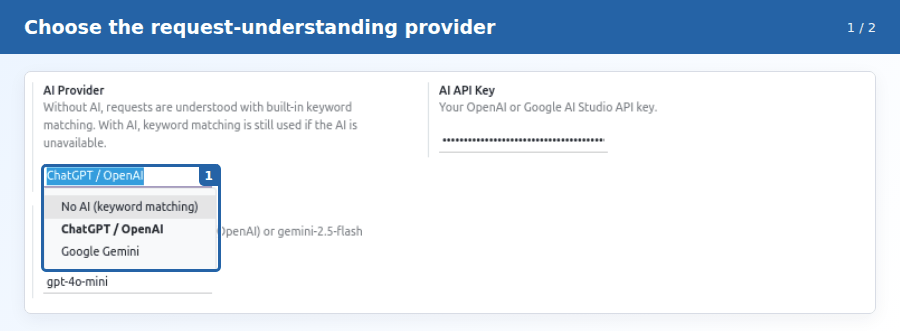
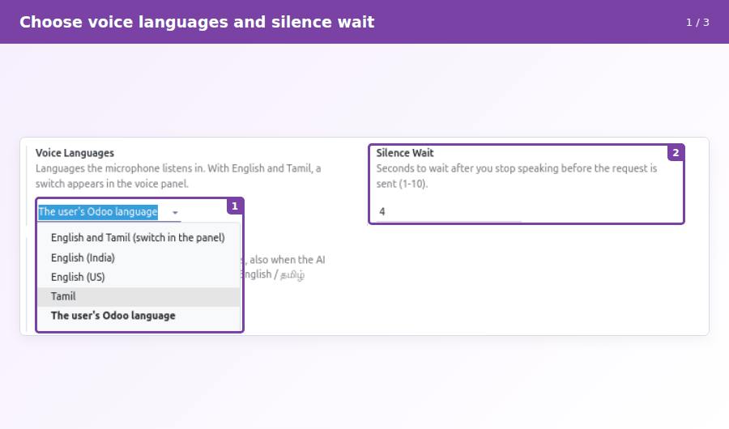
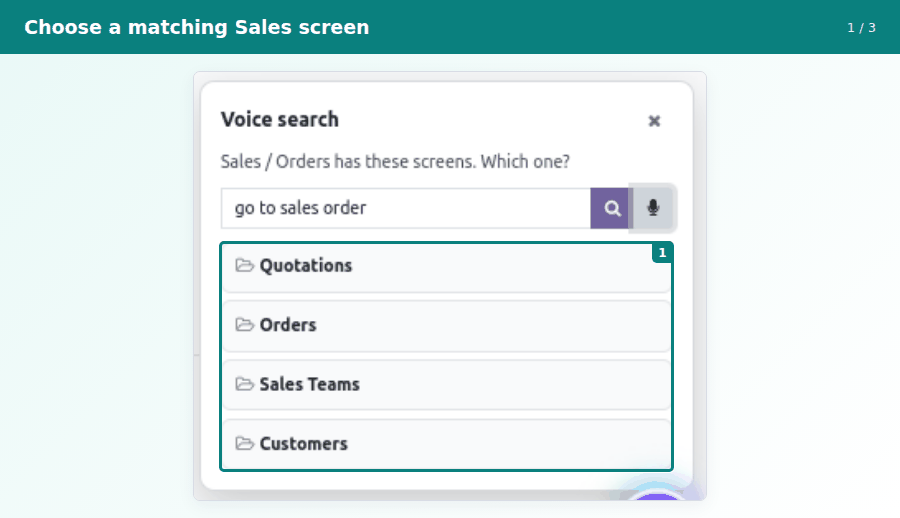
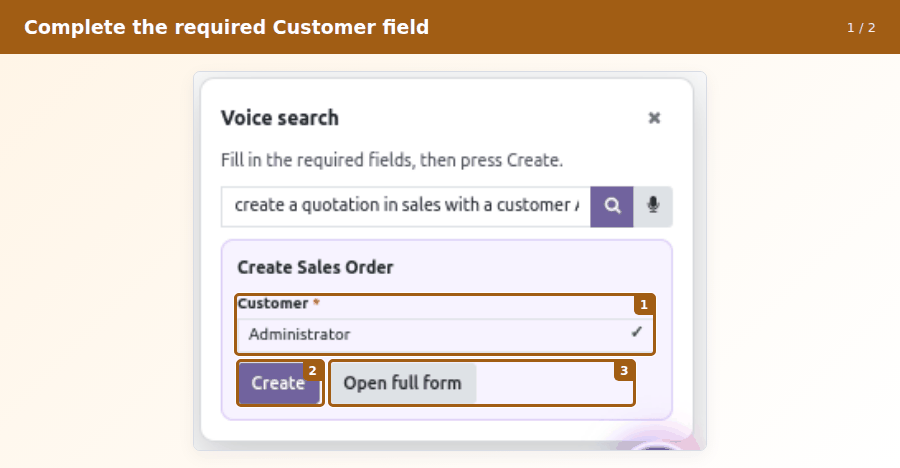
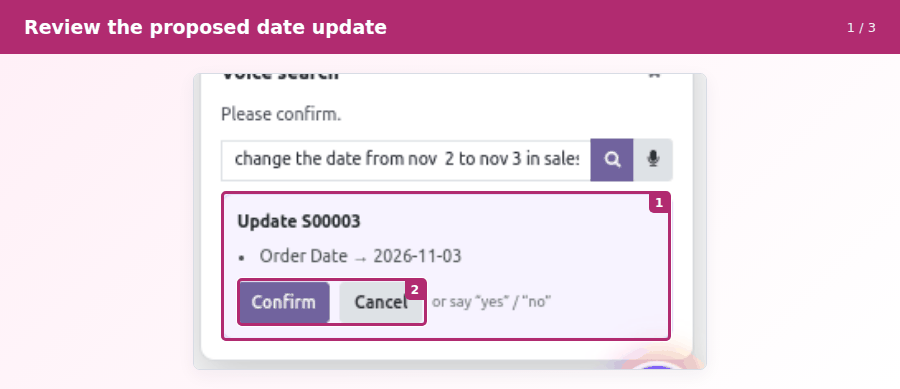
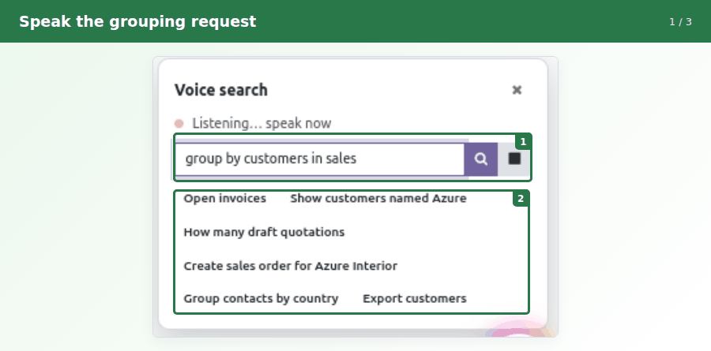

<div style="background-color:rgb(250, 248, 255);color:rgb(33, 37, 41);font-family:system-ui, -apple-system," segoe=""
     ui",="" roboto,="" "helvetica="" neue",="" "noto="" sans",="" "liberation="" arial,="" sans-serif,="" "apple="" color="" emoji",="" "segoe="" ui="" symbol",="" emoji";font-size:16px;line-height:24px;padding-top:0.1px;padding-bottom:0.1px"="">
<div style="color:rgb(29, 22, 51);font-family:'Segoe UI', Roboto, 'Helvetica Neue', Arial, sans-serif;line-height:24.8px;background-color:rgb(250, 248, 255)">
    <section
            style="padding-top:21px;margin-top:auto;padding-right:20px;margin-right:auto;padding-bottom:16px;margin-bottom:auto;padding-left:20px;margin-left:auto;width:calc(100% - 0px);max-width:1180px;min-width:min(170px, 100%)">
        <div style="color:rgb(29, 22, 51);font-family:'Segoe UI', Roboto, 'Helvetica Neue', Arial, sans-serif;line-height:24.8px;background-color:rgb(250, 248, 255)">
            <div style="width:100%;margin:12px auto 18px;background-color:#ffffff;border:1px solid #e8e8e8;border-radius:12px;padding:16px 20px;text-align:center;font-size:0;">
                <div style="display:inline-block;vertical-align:middle;width:34%;min-width:min(240px, 100%);text-align:left;padding:4px 8px;font-size:14px;">
                    
                </div>
                <div style="display:inline-block;vertical-align:middle;text-align:center;padding:4px 6px;font-size:14px;;width:calc((360px - 100%) * 999);min-width:max(12%, min(140px, 100%));max-width:100%">
                    
                </div>
                <div style="display:inline-block;vertical-align:middle;width:48%;min-width:min(260px, 100%);text-align:right;padding:4px 8px;font-size:14px;">
                    <div style="margin:0 0 8px;white-space:normal;text-align:right;">
                        <span style="display:inline-block;font-size:14px;font-weight:800;color:#555;margin:3px 6px 3px 0;vertical-align:middle;">Supports:</span>
                        <span style="display:inline-block;background-color:#75499a;color:#ffffff;font-size:13px;font-weight:800;padding:7px 18px;border-radius:22px;margin:2px;min-width:110px;text-align:center;vertical-align:middle;border:1px solid #75499a;;min-height:41px">Community</span>
                        <span style="display:inline-block;background-color:#8d3f7b;color:#ffffff;font-size:13px;font-weight:800;padding:7px 18px;border-radius:22px;margin:2px;min-width:110px;text-align:center;vertical-align:middle;border:1px solid #8d3f7b;;min-height:41px">Enterprise</span>
                    </div>
                    <div style="white-space:normal;text-align:right;">
                        <span style="display:inline-block;font-size:14px;font-weight:800;color:#555;margin:3px 6px 3px 0;vertical-align:middle;">Availability:</span>
                        <span style="display:inline-block;border:1px solid #e6e6e6;background-color:#ffffff;color:#333;font-size:13px;font-weight:600;padding:6px 14px;border-radius:20px;margin:2px;min-width:110px;text-align:center;vertical-align:middle;">Odoo.sh</span>
                        <span style="display:inline-block;border:1px solid #e6e6e6;background-color:#ffffff;color:#333;font-size:13px;font-weight:600;padding:6px 14px;border-radius:20px;margin:2px;min-width:110px;text-align:center;vertical-align:middle;">On Premise</span>
                    </div>
                </div>
            </div>
        </div>
    </section>
    <header style="color:rgb(255, 255, 255);background-image:radial-gradient(at 82% 15%, rgba(118, 81, 160, 0.29), rgba(0, 0, 0, 0) 58%), linear-gradient(120deg, rgb(23, 16, 39), rgb(53, 33, 73));background-size:auto, auto;background-position:0% 0%, 0% 0%;background-repeat:repeat, repeat;padding-top:49px;padding-bottom:43px">
        <div style="padding-right:24px;margin-right:auto;padding-left:24px;margin-left:auto;max-width:1180px;display:block;font-size:0px;line-height:0px">
            <div style="color:rgb(255, 255, 255);font-family:'Segoe UI', Roboto, 'Helvetica Neue', Arial, sans-serif;font-size:16px;font-weight:400;font-style:normal;line-height:24.8px;letter-spacing:normal;text-align:start;text-transform:none;white-space:normal;display:inline-block;vertical-align:middle;margin-left:0%;width:calc((600px - 100%) * 999);min-width:50.796%;max-width:100%;margin-right:0px;margin-top:0px;margin-bottom:0px">
                <p style="display:inline-block;color:rgb(230, 220, 255);font-family:'Segoe UI', Roboto, 'Helvetica Neue', Arial, sans-serif;font-size:10px;font-weight:600;font-style:normal;line-height:15.5px;letter-spacing:0.9px;text-transform:uppercase;background-color:rgba(255, 255, 255, 0.1);padding-top:7px;margin-top:0px;padding-right:11px;margin-right:0px;padding-bottom:7px;margin-bottom:0px;padding-left:11px;margin-left:0px;border-top-left-radius:99px;border-top-right-radius:99px;border-bottom-right-radius:99px;border-bottom-left-radius:99px">
                    <span style="display:inline-block;background-color:rgb(255, 92, 138);border-top-left-radius:50%;border-top-right-radius:50%;border-bottom-right-radius:50%;border-bottom-left-radius:50%;width:9px;height:9px;vertical-align:middle"></span>Odoo
                    voice search, record lookup and guided actions</p>
                <h1 style="color:rgb(255, 255, 255);font-family:'Segoe UI', Roboto, 'Helvetica Neue', Arial, sans-serif;font-size:min(43px, 8.84vw);font-weight:800;font-style:normal;line-height:1.1;letter-spacing:-1.2px;padding-top:0px;margin-top:20px;padding-right:0px;margin-right:0px;padding-bottom:0px;margin-bottom:17px;padding-left:0px;margin-left:0px">
                    Odoo AI Voice Search<span
                        style="display:block;color:rgb(239, 202, 233);font-size:min(28px, 9.04vw);line-height:1.3;margin-top:14px">| Voice Commands &amp; Smart Navigation</span>
                </h1>
                <p style="color:rgb(220, 210, 245);font-family:'Segoe UI', Roboto, 'Helvetica Neue', Arial, sans-serif;font-size:16px;font-weight:300;font-style:normal;line-height:29.6px;padding-top:0px;margin-top:0px;padding-right:0px;margin-right:0px;padding-bottom:0px;margin-bottom:0px;padding-left:0px;margin-left:0px;max-width:580px">
                    Open Odoo menus, find records and handle everyday tasks with voice or typed commands. Create
                    quotations, check changes before confirming, group Sales orders and request Excel exports from the
                    same assistant.</p>
                <div style="margin-top:23px;display:block;font-size:0px;line-height:0px;margin-bottom:0px"><a
                        href="#features"
                        style="max-width:100%;display:inline-block;font-family:'Segoe UI', Roboto, 'Helvetica Neue', Arial, sans-serif;font-size:15px;font-weight:800;font-style:normal;line-height:20px;letter-spacing:normal;text-align:center;text-transform:none;white-space:normal;text-decoration:none;padding-top:16px;padding-right:23px;padding-bottom:16px;padding-left:23px;border-top-left-radius:10px;border-top-right-radius:10px;border-bottom-right-radius:10px;border-bottom-left-radius:10px;vertical-align:top;margin-left:0px;margin-top:0px;margin-bottom:12px;margin-right:12px;color:rgb(26, 18, 54);background-color:rgb(255, 200, 87)">Explore
                    Features</a><a href="https://apps.odoo.com/apps/modules/browse?search=MindSpark%20Technologies"
                                   target="_blank" rel="noopener noreferrer"
                                   style="max-width:100%;display:inline-block;font-family:'Segoe UI', Roboto, 'Helvetica Neue', Arial, sans-serif;font-size:15px;font-weight:800;font-style:normal;line-height:20px;letter-spacing:normal;text-align:center;text-transform:none;white-space:normal;text-decoration:none;padding-top:16px;padding-right:23px;padding-bottom:16px;padding-left:23px;border-top-left-radius:10px;border-top-right-radius:10px;border-bottom-right-radius:10px;border-bottom-left-radius:10px;vertical-align:top;margin-left:0px;margin-top:0px;margin-bottom:12px;margin-right:0px;color:rgb(14, 10, 42);background-color:rgb(255, 255, 255)">View
                    MindSpark Odoo Apps</a></div>
                <div style="color:rgb(255, 255, 255);font-family:'Segoe UI', Roboto, 'Helvetica Neue', Arial, sans-serif;font-size:0px;font-weight:400;font-style:normal;line-height:0px;padding-top:0px;margin-top:22px;padding-right:0px;margin-right:0px;padding-bottom:0px;margin-bottom:0px;padding-left:0px;margin-left:0px;display:block">
                    <span style="display:inline-block;color:rgb(255, 255, 255);font-family:'Segoe UI', Roboto, 'Helvetica Neue', Arial, sans-serif;font-size:10.5px;font-weight:600;font-style:normal;line-height:16.275px;letter-spacing:normal;text-align:start;text-transform:none;white-space:normal;background-color:rgba(255, 255, 255, 0.08);padding-top:6px;margin-top:0px;border-top-style:solid;border-top-width:1px;border-top-color:rgba(255, 255, 255, 0.28);padding-right:10px;margin-right:0px;border-right-style:solid;border-right-width:1px;border-right-color:rgba(255, 255, 255, 0.28);padding-bottom:6px;margin-bottom:7px;border-bottom-style:solid;border-bottom-width:1px;border-bottom-color:rgba(255, 255, 255, 0.28);padding-left:10px;margin-left:0%;border-left-style:solid;border-left-width:1px;border-left-color:rgba(255, 255, 255, 0.28);border-top-left-radius:99px;border-top-right-radius:99px;border-bottom-right-radius:99px;border-bottom-left-radius:99px;vertical-align:top;min-height:30px">Voice &amp; typed commands</span><span
                        style="display:inline-block;color:rgb(255, 255, 255);font-family:'Segoe UI', Roboto, 'Helvetica Neue', Arial, sans-serif;font-size:10.5px;font-weight:600;font-style:normal;line-height:16.275px;letter-spacing:normal;text-align:start;text-transform:none;white-space:normal;background-color:rgba(255, 255, 255, 0.08);padding-top:6px;margin-top:0px;border-top-style:solid;border-top-width:1px;border-top-color:rgba(255, 255, 255, 0.28);padding-right:10px;margin-right:0px;border-right-style:solid;border-right-width:1px;border-right-color:rgba(255, 255, 255, 0.28);padding-bottom:6px;margin-bottom:7px;border-bottom-style:solid;border-bottom-width:1px;border-bottom-color:rgba(255, 255, 255, 0.28);padding-left:10px;margin-left:1.261%;border-left-style:solid;border-left-width:1px;border-left-color:rgba(255, 255, 255, 0.28);border-top-left-radius:99px;border-top-right-radius:99px;border-bottom-right-radius:99px;border-bottom-left-radius:99px;vertical-align:top;min-height:30px">English &amp; Tamil search</span><span
                        style="display:inline-block;color:rgb(255, 255, 255);font-family:'Segoe UI', Roboto, 'Helvetica Neue', Arial, sans-serif;font-size:10.5px;font-weight:600;font-style:normal;line-height:16.275px;letter-spacing:normal;text-align:start;text-transform:none;white-space:normal;background-color:rgba(255, 255, 255, 0.08);padding-top:6px;margin-top:0px;border-top-style:solid;border-top-width:1px;border-top-color:rgba(255, 255, 255, 0.28);padding-right:10px;margin-right:0px;border-right-style:solid;border-right-width:1px;border-right-color:rgba(255, 255, 255, 0.28);padding-bottom:6px;margin-bottom:7px;border-bottom-style:solid;border-bottom-width:1px;border-bottom-color:rgba(255, 255, 255, 0.28);padding-left:10px;margin-left:1.261%;border-left-style:solid;border-left-width:1px;border-left-color:rgba(255, 255, 255, 0.28);border-top-left-radius:99px;border-top-right-radius:99px;border-bottom-right-radius:99px;border-bottom-left-radius:99px;vertical-align:top;min-height:30px">OpenAI / Gemini / Keywords</span><span
                        style="display:block;height:0px;font-size:0px;line-height:0px"></span><span
                        style="display:inline-block;color:rgb(255, 255, 255);font-family:'Segoe UI', Roboto, 'Helvetica Neue', Arial, sans-serif;font-size:10.5px;font-weight:600;font-style:normal;line-height:16.275px;letter-spacing:normal;text-align:start;text-transform:none;white-space:normal;background-color:rgba(255, 255, 255, 0.08);padding-top:6px;margin-top:0px;border-top-style:solid;border-top-width:1px;border-top-color:rgba(255, 255, 255, 0.28);padding-right:10px;margin-right:0px;border-right-style:solid;border-right-width:1px;border-right-color:rgba(255, 255, 255, 0.28);padding-bottom:6px;margin-bottom:7px;border-bottom-style:solid;border-bottom-width:1px;border-bottom-color:rgba(255, 255, 255, 0.28);padding-left:10px;margin-left:0%;border-left-style:solid;border-left-width:1px;border-left-color:rgba(255, 255, 255, 0.28);border-top-left-radius:99px;border-top-right-radius:99px;border-bottom-right-radius:99px;border-bottom-left-radius:99px;vertical-align:top">Review record changes</span>
                </div>
            </div>
            <div style="color:rgb(37, 26, 56);font-family:'Segoe UI', Roboto, 'Helvetica Neue', Arial, sans-serif;font-size:16px;font-weight:400;font-style:normal;line-height:24.8px;letter-spacing:normal;text-align:start;text-transform:none;white-space:normal;background-color:rgb(251, 248, 255);padding-top:27px;border-top-style:solid;border-top-width:1px;border-top-color:rgb(238, 230, 250);padding-right:27px;border-right-style:solid;border-right-width:1px;border-right-color:rgb(238, 230, 250);padding-bottom:27px;border-bottom-style:solid;border-bottom-width:1px;border-bottom-color:rgb(238, 230, 250);padding-left:27px;border-left-style:solid;border-left-width:1px;border-left-color:rgb(238, 230, 250);border-top-left-radius:20px;border-top-right-radius:20px;border-bottom-right-radius:20px;border-bottom-left-radius:20px;display:inline-block;vertical-align:middle;margin-left:3.846%;width:calc((600px - 100%) * 999);min-width:45.356%;max-width:calc(100% - 3.846%);margin-right:0px;margin-top:0px;margin-bottom:0px">
                <div style="padding-bottom:19px;border-bottom-style:solid;border-bottom-width:1px;border-bottom-color:rgb(233, 222, 244);display:block;font-size:0px;line-height:0px">
                    <svg viewBox="0 0 24 24" aria-hidden="true"
                         style="color:rgb(37, 26, 56);font-family:'Segoe UI', Roboto, 'Helvetica Neue', Arial, sans-serif;font-size:16px;font-weight:400;font-style:normal;line-height:24.8px;letter-spacing:normal;text-align:start;text-transform:none;white-space:normal;background-image:linear-gradient(135deg, rgb(163, 78, 234), rgb(85, 120, 255));background-size:auto;background-position:0% 0%;background-repeat:repeat;padding-top:11px;padding-right:11px;padding-bottom:11px;padding-left:11px;border-top-left-radius:15px;border-top-right-radius:15px;border-bottom-right-radius:15px;border-bottom-left-radius:15px;vertical-align:middle;width:48px;height:48px;display:inline-block;margin-left:0px;margin-right:0px;margin-top:0px;margin-bottom:0px">
                        <rect x="9" y="2" width="6" height="13" rx="3" style="display:inline"></rect>
                        <path d="M5 10v2a7 7 0 0 0 14 0v-2M12 19v3M8 22h8" style="display:inline"></path>
                    </svg>
                    <div style="color:rgb(37, 26, 56);font-family:'Segoe UI', Roboto, 'Helvetica Neue', Arial, sans-serif;font-size:16px;font-weight:400;font-style:normal;line-height:24.8px;letter-spacing:normal;text-align:start;text-transform:none;white-space:normal;display:inline-block;vertical-align:middle;margin-left:15px;width:calc(100% - 63.02px);margin-right:0px;margin-top:0px;margin-bottom:0px;min-width:min(170px, 100%)">
                        <b style="display:block;color:rgb(37, 26, 56);font-family:'Segoe UI', Roboto, 'Helvetica Neue', Arial, sans-serif;font-size:20px;font-weight:700;font-style:normal;line-height:31px">AI
                            Voice Search</b><small
                            style="color:rgb(124, 108, 144);font-family:'Segoe UI', Roboto, 'Helvetica Neue', Arial, sans-serif;font-size:11px;font-weight:400;font-style:normal;line-height:17.05px">Short
                        requests for everyday Odoo work</small></div>
                </div>
                <div style="color:rgb(89, 63, 120);font-size:13px;line-height:20.15px;background-color:rgb(255, 255, 255);padding-top:13px;margin-top:15px;border-top-style:solid;border-top-width:1px;border-top-color:rgb(224, 214, 241);padding-right:15px;border-right-style:solid;border-right-width:1px;border-right-color:rgb(224, 214, 241);padding-bottom:13px;border-bottom-style:solid;border-bottom-width:1px;border-bottom-color:rgb(224, 214, 241);padding-left:15px;border-left-style:solid;border-left-width:1px;border-left-color:rgb(224, 214, 241);border-top-left-radius:11px;border-top-right-radius:11px;border-bottom-right-radius:11px;border-bottom-left-radius:11px">
                    <span style="display:block;color:rgb(163, 99, 171);font-size:9px;font-weight:800;line-height:13.95px;letter-spacing:0.9px;margin-bottom:5px">NAVIGATE</span>&#8220;go
                    to sales order&#8221;
                </div>
                <div style="color:rgb(89, 63, 120);font-size:13px;line-height:20.15px;background-color:rgb(255, 255, 255);padding-top:13px;margin-top:15px;border-top-style:solid;border-top-width:1px;border-top-color:rgb(224, 214, 241);padding-right:15px;border-right-style:solid;border-right-width:1px;border-right-color:rgb(224, 214, 241);padding-bottom:13px;border-bottom-style:solid;border-bottom-width:1px;border-bottom-color:rgb(224, 214, 241);padding-left:15px;border-left-style:solid;border-left-width:1px;border-left-color:rgb(224, 214, 241);border-top-left-radius:11px;border-top-right-radius:11px;border-bottom-right-radius:11px;border-bottom-left-radius:11px">
                    <span style="display:block;color:rgb(163, 99, 171);font-size:9px;font-weight:800;line-height:13.95px;letter-spacing:0.9px;margin-bottom:5px">ORGANIZE</span>&#8220;group
                    by customers in sales&#8221;
                </div>
                <div style="color:rgb(89, 63, 120);font-size:13px;line-height:20.15px;background-color:rgb(255, 255, 255);padding-top:13px;margin-top:15px;border-top-style:solid;border-top-width:1px;border-top-color:rgb(224, 214, 241);padding-right:15px;border-right-style:solid;border-right-width:1px;border-right-color:rgb(224, 214, 241);padding-bottom:13px;border-bottom-style:solid;border-bottom-width:1px;border-bottom-color:rgb(224, 214, 241);padding-left:15px;border-left-style:solid;border-left-width:1px;border-left-color:rgb(224, 214, 241);border-top-left-radius:11px;border-top-right-radius:11px;border-bottom-right-radius:11px;border-bottom-left-radius:11px">
                    <span style="display:block;color:rgb(163, 99, 171);font-size:9px;font-weight:800;line-height:13.95px;letter-spacing:0.9px;margin-bottom:5px">EXPORT</span>&#8220;export
                    customer&#8221;
                </div>
                <div style="margin-top:18px;display:block;font-size:0px;line-height:0px;margin-bottom:0px"><span
                        style="display:inline-block;color:rgb(105, 70, 139);font-family:'Segoe UI', Roboto, 'Helvetica Neue', Arial, sans-serif;font-size:10px;font-weight:750;font-style:normal;line-height:15.5px;letter-spacing:normal;text-align:start;text-transform:none;white-space:normal;background-color:rgb(238, 230, 248);padding-top:7px;padding-right:11px;padding-bottom:7px;padding-left:11px;border-top-left-radius:7px;border-top-right-radius:7px;border-bottom-right-radius:7px;border-bottom-left-radius:7px;vertical-align:top;margin-left:0%;margin-right:0px;margin-top:0px;margin-bottom:7px;min-height:30px">Speak or type a request</span><span
                        style="display:inline-block;color:rgb(105, 70, 139);font-family:'Segoe UI', Roboto, 'Helvetica Neue', Arial, sans-serif;font-size:10px;font-weight:750;font-style:normal;line-height:15.5px;letter-spacing:normal;text-align:start;text-transform:none;white-space:normal;background-color:rgb(238, 230, 248);padding-top:7px;padding-right:11px;padding-bottom:7px;padding-left:11px;border-top-left-radius:7px;border-top-right-radius:7px;border-bottom-right-radius:7px;border-bottom-left-radius:7px;vertical-align:top;margin-left:1.593%;margin-right:0px;margin-top:0px;margin-bottom:7px;min-height:30px">Check the response</span><span
                        style="display:inline-block;color:rgb(105, 70, 139);font-family:'Segoe UI', Roboto, 'Helvetica Neue', Arial, sans-serif;font-size:10px;font-weight:750;font-style:normal;line-height:15.5px;letter-spacing:normal;text-align:start;text-transform:none;white-space:normal;background-color:rgb(238, 230, 248);padding-top:7px;padding-right:11px;padding-bottom:7px;padding-left:11px;border-top-left-radius:7px;border-top-right-radius:7px;border-bottom-right-radius:7px;border-bottom-left-radius:7px;vertical-align:top;margin-left:1.593%;margin-right:0px;margin-top:0px;margin-bottom:7px;min-height:30px">Open or update the record</span>
                </div>
            </div>
        </div>
    </header>
    <div style="display:block;background-color:rgb(40, 26, 59);background-image:linear-gradient(90deg, rgb(28, 19, 45), rgb(53, 33, 73));padding-top:0.1px;padding-bottom:28px">
        <div role="region" aria-label="Module highlights"
             style="background-color:rgba(0, 0, 0, 0);margin-top:0px;padding-right:24px;margin-right:auto;padding-left:24px;margin-left:auto;max-width:1180px;display:block;font-size:0px;line-height:0px;margin-bottom:0px">
            <div style="color:rgb(29, 22, 51);font-family:'Segoe UI', Roboto, 'Helvetica Neue', Arial, sans-serif;font-size:16px;font-weight:400;font-style:normal;line-height:24.8px;letter-spacing:normal;text-align:center;text-transform:none;white-space:normal;background-color:rgb(255, 255, 255);padding-top:18px;border-top-style:solid;border-top-width:4px;border-top-color:rgb(67, 181, 156);padding-right:14px;padding-bottom:18px;padding-left:14px;border-top-left-radius:16px;border-top-right-radius:16px;border-bottom-right-radius:16px;border-bottom-left-radius:16px;display:inline-block;vertical-align:top;margin-left:0%;margin-right:0px;margin-top:0px;margin-bottom:16px;min-height:96px;width:calc((360px - 100%) * 999);min-width:max(23.901%, min(140px, 100%));max-width:100%">
                <b style="display:block;color:rgb(14, 10, 42);font-family:'Segoe UI', Roboto, 'Helvetica Neue', Arial, sans-serif;font-size:20px;font-weight:700;font-style:normal;line-height:31px">Search</b><span
                    style="color:rgb(98, 91, 122);font-size:11.5px;line-height:17.825px">Voice and text input</span>
            </div>
            <div style="color:rgb(29, 22, 51);font-family:'Segoe UI', Roboto, 'Helvetica Neue', Arial, sans-serif;font-size:16px;font-weight:400;font-style:normal;line-height:24.8px;letter-spacing:normal;text-align:center;text-transform:none;white-space:normal;background-color:rgb(255, 255, 255);padding-top:18px;border-top-style:solid;border-top-width:4px;border-top-color:rgb(255, 200, 87);padding-right:14px;padding-bottom:18px;padding-left:14px;border-top-left-radius:16px;border-top-right-radius:16px;border-bottom-right-radius:16px;border-bottom-left-radius:16px;display:inline-block;vertical-align:top;margin-left:1.465%;margin-right:0px;margin-top:0px;margin-bottom:16px;min-height:96px;width:calc((360px - 100%) * 999);min-width:max(23.901%, min(140px, 100%));max-width:calc(100% - 1.465%)">
                <b style="display:block;color:rgb(14, 10, 42);font-family:'Segoe UI', Roboto, 'Helvetica Neue', Arial, sans-serif;font-size:20px;font-weight:700;font-style:normal;line-height:31px">Navigate</b><span
                    style="color:rgb(98, 91, 122);font-size:11.5px;line-height:17.825px">Odoo menus and records</span>
            </div>
            <div style="color:rgb(29, 22, 51);font-family:'Segoe UI', Roboto, 'Helvetica Neue', Arial, sans-serif;font-size:16px;font-weight:400;font-style:normal;line-height:24.8px;letter-spacing:normal;text-align:center;text-transform:none;white-space:normal;background-color:rgb(255, 255, 255);padding-top:18px;border-top-style:solid;border-top-width:4px;border-top-color:rgb(255, 92, 138);padding-right:14px;padding-bottom:18px;padding-left:14px;border-top-left-radius:16px;border-top-right-radius:16px;border-bottom-right-radius:16px;border-bottom-left-radius:16px;display:inline-block;vertical-align:top;margin-left:1.465%;margin-right:0px;margin-top:0px;margin-bottom:16px;min-height:96px;width:calc((360px - 100%) * 999);min-width:max(23.901%, min(140px, 100%));max-width:calc(100% - 1.465%)">
                <b style="display:block;color:rgb(14, 10, 42);font-family:'Segoe UI', Roboto, 'Helvetica Neue', Arial, sans-serif;font-size:20px;font-weight:700;font-style:normal;line-height:31px">Review</b><span
                    style="color:rgb(98, 91, 122);font-size:11.5px;line-height:17.825px">Fields and confirmation</span>
            </div>
            <div style="color:rgb(29, 22, 51);font-family:'Segoe UI', Roboto, 'Helvetica Neue', Arial, sans-serif;font-size:16px;font-weight:400;font-style:normal;line-height:24.8px;letter-spacing:normal;text-align:center;text-transform:none;white-space:normal;background-color:rgb(255, 255, 255);padding-top:18px;border-top-style:solid;border-top-width:4px;border-top-color:rgb(109, 59, 216);padding-right:14px;padding-bottom:18px;padding-left:14px;border-top-left-radius:16px;border-top-right-radius:16px;border-bottom-right-radius:16px;border-bottom-left-radius:16px;display:inline-block;vertical-align:top;margin-left:1.465%;margin-right:0px;margin-top:0px;margin-bottom:16px;min-height:96px;width:calc((360px - 100%) * 999);min-width:max(23.901%, min(140px, 100%));max-width:calc(100% - 1.465%)">
                <b style="display:block;color:rgb(14, 10, 42);font-family:'Segoe UI', Roboto, 'Helvetica Neue', Arial, sans-serif;font-size:20px;font-weight:700;font-style:normal;line-height:31px">Act</b><span
                    style="color:rgb(98, 91, 122);font-size:11.5px;line-height:17.825px">Create, group and export</span>
            </div>
        </div>
    </div>
    <nav aria-label="Module navigation"
         style="margin-top:28px;padding-right:24px;margin-right:auto;padding-left:24px;margin-left:auto;max-width:1180px;display:block;font-size:0px;line-height:0px;margin-bottom:0px">
        <a href="#overview"
           style="display:inline-block;color:rgb(101, 65, 139);font-family:'Segoe UI', Roboto, 'Helvetica Neue', Arial, sans-serif;font-size:11px;font-weight:700;font-style:normal;line-height:17.05px;letter-spacing:normal;text-align:start;text-transform:none;white-space:normal;text-decoration:none;background-color:rgb(255, 255, 255);padding-top:8px;border-top-style:solid;border-top-width:1px;border-top-color:rgb(229, 219, 239);padding-right:12px;border-right-style:solid;border-right-width:1px;border-right-color:rgb(229, 219, 239);padding-bottom:8px;border-bottom-style:solid;border-bottom-width:1px;border-bottom-color:rgb(229, 219, 239);padding-left:12px;border-left-style:solid;border-left-width:1px;border-left-color:rgb(229, 219, 239);border-top-left-radius:30px;border-top-right-radius:30px;border-bottom-right-radius:30px;border-bottom-left-radius:30px;vertical-align:top;margin-left:17.921%;margin-right:0px;margin-top:0px;margin-bottom:8px;min-height:35px">Overview</a><a
            href="#features"
            style="display:inline-block;color:rgb(101, 65, 139);font-family:'Segoe UI', Roboto, 'Helvetica Neue', Arial, sans-serif;font-size:11px;font-weight:700;font-style:normal;line-height:17.05px;letter-spacing:normal;text-align:start;text-transform:none;white-space:normal;text-decoration:none;background-color:rgb(255, 255, 255);padding-top:8px;border-top-style:solid;border-top-width:1px;border-top-color:rgb(229, 219, 239);padding-right:12px;border-right-style:solid;border-right-width:1px;border-right-color:rgb(229, 219, 239);padding-bottom:8px;border-bottom-style:solid;border-bottom-width:1px;border-bottom-color:rgb(229, 219, 239);padding-left:12px;border-left-style:solid;border-left-width:1px;border-left-color:rgb(229, 219, 239);border-top-left-radius:30px;border-top-right-radius:30px;border-bottom-right-radius:30px;border-bottom-left-radius:30px;vertical-align:top;margin-left:0.732%;margin-right:0px;margin-top:0px;margin-bottom:8px;min-height:35px">Features</a><a
            href="#request-modes"
            style="display:inline-block;color:rgb(101, 65, 139);font-family:'Segoe UI', Roboto, 'Helvetica Neue', Arial, sans-serif;font-size:11px;font-weight:700;font-style:normal;line-height:17.05px;letter-spacing:normal;text-align:start;text-transform:none;white-space:normal;text-decoration:none;background-color:rgb(255, 255, 255);padding-top:8px;border-top-style:solid;border-top-width:1px;border-top-color:rgb(229, 219, 239);padding-right:12px;border-right-style:solid;border-right-width:1px;border-right-color:rgb(229, 219, 239);padding-bottom:8px;border-bottom-style:solid;border-bottom-width:1px;border-bottom-color:rgb(229, 219, 239);padding-left:12px;border-left-style:solid;border-left-width:1px;border-left-color:rgb(229, 219, 239);border-top-left-radius:30px;border-top-right-radius:30px;border-bottom-right-radius:30px;border-bottom-left-radius:30px;vertical-align:top;margin-left:0.732%;margin-right:0px;margin-top:0px;margin-bottom:8px;min-height:35px">AI
        &amp; Keywords</a><a href="#walkthrough"
                             style="display:inline-block;color:rgb(101, 65, 139);font-family:'Segoe UI', Roboto, 'Helvetica Neue', Arial, sans-serif;font-size:11px;font-weight:700;font-style:normal;line-height:17.05px;letter-spacing:normal;text-align:start;text-transform:none;white-space:normal;text-decoration:none;background-color:rgb(255, 255, 255);padding-top:8px;border-top-style:solid;border-top-width:1px;border-top-color:rgb(229, 219, 239);padding-right:12px;border-right-style:solid;border-right-width:1px;border-right-color:rgb(229, 219, 239);padding-bottom:8px;border-bottom-style:solid;border-bottom-width:1px;border-bottom-color:rgb(229, 219, 239);padding-left:12px;border-left-style:solid;border-left-width:1px;border-left-color:rgb(229, 219, 239);border-top-left-radius:30px;border-top-right-radius:30px;border-bottom-right-radius:30px;border-bottom-left-radius:30px;vertical-align:top;margin-left:0.732%;margin-right:0px;margin-top:0px;margin-bottom:8px;min-height:35px">Walkthrough</a><a
            href="#commands"
            style="display:inline-block;color:rgb(101, 65, 139);font-family:'Segoe UI', Roboto, 'Helvetica Neue', Arial, sans-serif;font-size:11px;font-weight:700;font-style:normal;line-height:17.05px;letter-spacing:normal;text-align:start;text-transform:none;white-space:normal;text-decoration:none;background-color:rgb(255, 255, 255);padding-top:8px;border-top-style:solid;border-top-width:1px;border-top-color:rgb(229, 219, 239);padding-right:12px;border-right-style:solid;border-right-width:1px;border-right-color:rgb(229, 219, 239);padding-bottom:8px;border-bottom-style:solid;border-bottom-width:1px;border-bottom-color:rgb(229, 219, 239);padding-left:12px;border-left-style:solid;border-left-width:1px;border-left-color:rgb(229, 219, 239);border-top-left-radius:30px;border-top-right-radius:30px;border-bottom-right-radius:30px;border-bottom-left-radius:30px;vertical-align:top;margin-left:0.732%;margin-right:0px;margin-top:0px;margin-bottom:8px;min-height:35px">Examples</a><a
            href="#workflow"
            style="display:inline-block;color:rgb(101, 65, 139);font-family:'Segoe UI', Roboto, 'Helvetica Neue', Arial, sans-serif;font-size:11px;font-weight:700;font-style:normal;line-height:17.05px;letter-spacing:normal;text-align:start;text-transform:none;white-space:normal;text-decoration:none;background-color:rgb(255, 255, 255);padding-top:8px;border-top-style:solid;border-top-width:1px;border-top-color:rgb(229, 219, 239);padding-right:12px;border-right-style:solid;border-right-width:1px;border-right-color:rgb(229, 219, 239);padding-bottom:8px;border-bottom-style:solid;border-bottom-width:1px;border-bottom-color:rgb(229, 219, 239);padding-left:12px;border-left-style:solid;border-left-width:1px;border-left-color:rgb(229, 219, 239);border-top-left-radius:30px;border-top-right-radius:30px;border-bottom-right-radius:30px;border-bottom-left-radius:30px;vertical-align:top;margin-left:0.732%;margin-right:0px;margin-top:0px;margin-bottom:8px;min-height:35px">Workflow</a><a
            href="#faq"
            style="display:inline-block;color:rgb(101, 65, 139);font-family:'Segoe UI', Roboto, 'Helvetica Neue', Arial, sans-serif;font-size:11px;font-weight:700;font-style:normal;line-height:17.05px;letter-spacing:normal;text-align:start;text-transform:none;white-space:normal;text-decoration:none;background-color:rgb(255, 255, 255);padding-top:8px;border-top-style:solid;border-top-width:1px;border-top-color:rgb(229, 219, 239);padding-right:12px;border-right-style:solid;border-right-width:1px;border-right-color:rgb(229, 219, 239);padding-bottom:8px;border-bottom-style:solid;border-bottom-width:1px;border-bottom-color:rgb(229, 219, 239);padding-left:12px;border-left-style:solid;border-left-width:1px;border-left-color:rgb(229, 219, 239);border-top-left-radius:30px;border-top-right-radius:30px;border-bottom-right-radius:30px;border-bottom-left-radius:30px;vertical-align:top;margin-left:0.732%;margin-right:0px;margin-top:0px;margin-bottom:8px;min-height:35px">FAQs</a><a
            href="#contact"
            style="display:inline-block;color:rgb(101, 65, 139);font-family:'Segoe UI', Roboto, 'Helvetica Neue', Arial, sans-serif;font-size:11px;font-weight:700;font-style:normal;line-height:17.05px;letter-spacing:normal;text-align:start;text-transform:none;white-space:normal;text-decoration:none;background-color:rgb(255, 255, 255);padding-top:8px;border-top-style:solid;border-top-width:1px;border-top-color:rgb(229, 219, 239);padding-right:12px;border-right-style:solid;border-right-width:1px;border-right-color:rgb(229, 219, 239);padding-bottom:8px;border-bottom-style:solid;border-bottom-width:1px;border-bottom-color:rgb(229, 219, 239);padding-left:12px;border-left-style:solid;border-left-width:1px;border-left-color:rgb(229, 219, 239);border-top-left-radius:30px;border-top-right-radius:30px;border-bottom-right-radius:30px;border-bottom-left-radius:30px;vertical-align:top;margin-left:0.732%;margin-right:0px;margin-top:0px;margin-bottom:8px;min-height:35px">Contact
        Us</a></nav>
    <section id="overview"
             style="text-align:center;padding-top:60px;padding-right:24px;margin-right:auto;padding-left:24px;margin-left:auto;max-width:1180px">
        <p style="display:table;color:rgb(10, 128, 126);font-family:'Segoe UI', Roboto, 'Helvetica Neue', Arial, sans-serif;font-size:10px;font-weight:700;font-style:normal;line-height:15.5px;letter-spacing:1px;text-transform:uppercase;background-color:rgb(234, 249, 247);padding-top:6px;margin-top:0px;border-top-style:solid;border-top-width:1px;border-top-color:rgb(191, 231, 226);padding-right:12px;margin-right:auto;border-right-style:solid;border-right-width:1px;border-right-color:rgb(191, 231, 226);padding-bottom:6px;margin-bottom:0px;border-bottom-style:solid;border-bottom-width:1px;border-bottom-color:rgb(191, 231, 226);padding-left:12px;margin-left:auto;border-left-style:solid;border-left-width:1px;border-left-color:rgb(191, 231, 226);border-top-left-radius:30px;border-top-right-radius:30px;border-bottom-right-radius:30px;border-bottom-left-radius:30px">
            Odoo voice search for daily work</p>
        <h2 style="color:rgb(10, 128, 126);font-family:'Segoe UI', Roboto, 'Helvetica Neue', Arial, sans-serif;font-size:min(31px, 11.06vw);font-weight:800;font-style:normal;line-height:1.25;letter-spacing:-0.62px;padding-top:0px;margin-top:8px;padding-right:0px;margin-right:auto;padding-bottom:0px;margin-bottom:12px;padding-left:0px;margin-left:auto;max-width:850px">
            Search Odoo records and open menus without retracing the menu path<span
                style="display:block;background-color:rgb(10, 128, 126);margin-top:15px;margin-right:auto;margin-left:auto;border-top-left-radius:4px;border-top-right-radius:4px;border-bottom-right-radius:4px;border-bottom-left-radius:4px;width:64px;height:4px"></span>
        </h2>
        <p style="color:rgb(98, 91, 122);font-family:'Segoe UI', Roboto, 'Helvetica Neue', Arial, sans-serif;font-size:14px;font-weight:400;font-style:normal;line-height:25.9px;padding-top:0px;margin-top:0px;padding-right:0px;margin-right:auto;padding-bottom:0px;margin-bottom:0px;padding-left:0px;margin-left:auto;max-width:800px">
            Use one floating voice assistant for menu search, record lookup and guided actions. Speak a short request or
            type the task you want to complete.</p>
        <div style="text-align:left;background-image:linear-gradient(130deg, rgb(234, 248, 245), rgb(246, 244, 251));background-size:auto;background-position:0% 0%;background-repeat:repeat;padding-top:29px;margin-top:28px;border-top-style:solid;border-top-width:1px;border-top-color:rgb(215, 230, 227);padding-right:29px;border-right-style:solid;border-right-width:1px;border-right-color:rgb(215, 230, 227);padding-bottom:29px;border-bottom-style:solid;border-bottom-width:1px;border-bottom-color:rgb(215, 230, 227);padding-left:29px;border-left-style:solid;border-left-width:1px;border-left-color:rgb(215, 230, 227);border-top-left-radius:18px;border-top-right-radius:18px;border-bottom-right-radius:18px;border-bottom-left-radius:18px;display:block;font-size:0px;line-height:0px;margin-bottom:0px">
            <div style="color:rgb(29, 22, 51);font-family:'Segoe UI', Roboto, 'Helvetica Neue', Arial, sans-serif;font-size:16px;font-weight:400;font-style:normal;line-height:24.8px;letter-spacing:normal;text-align:left;text-transform:none;white-space:normal;display:inline-block;vertical-align:top;margin-left:0%;width:calc((600px - 100%) * 999);min-width:51.111%;max-width:100%;margin-right:0px;margin-top:0px;margin-bottom:25px">
                <h3 style="color:rgb(24, 94, 99);font-family:'Segoe UI', Roboto, 'Helvetica Neue', Arial, sans-serif;font-size:min(23px, 11.1vw);font-weight:500;font-style:normal;line-height:1.4;padding-top:0px;margin-top:0px;padding-right:0px;margin-right:0px;padding-bottom:0px;margin-bottom:0px;padding-left:0px;margin-left:0px">
                    Find the screen. Check the record. Continue with the task.</h3>
                <p style="color:rgb(93, 89, 112);font-family:'Segoe UI', Roboto, 'Helvetica Neue', Arial, sans-serif;font-size:13px;font-weight:400;font-style:normal;line-height:24.7px;padding-top:0px;margin-top:12px;padding-right:0px;margin-right:0px;padding-bottom:0px;margin-bottom:0px;padding-left:0px;margin-left:0px">
                    Odoo AI Voice Search gives users a direct way to reach the information they need. Ask for Sales
                    Orders, look up a record or start a quotation from the assistant. When several menus match a
                    request, choose the screen you want to open.</p>
                <p style="color:rgb(93, 89, 112);font-family:'Segoe UI', Roboto, 'Helvetica Neue', Arial, sans-serif;font-size:13px;font-weight:400;font-style:normal;line-height:24.7px;padding-top:0px;margin-top:12px;padding-right:0px;margin-right:0px;padding-bottom:0px;margin-bottom:0px;padding-left:0px;margin-left:0px">
                    The module also supports record-update previews, Sales grouping by Customer and Excel export
                    requests. Administrators can choose keyword matching or an AI provider, set voice and reply
                    languages, and decide which record actions users may request.</p></div>
            <div style="color:rgb(29, 22, 51);font-family:'Segoe UI', Roboto, 'Helvetica Neue', Arial, sans-serif;font-size:16px;font-weight:400;font-style:normal;line-height:24.8px;letter-spacing:normal;text-align:left;text-transform:none;white-space:normal;display:inline-block;vertical-align:top;margin-left:2.422%;width:calc((600px - 100%) * 999);min-width:46.466%;max-width:calc(100% - 2.422%);margin-right:0px;margin-top:0px;margin-bottom:25px;padding-top:0.1px">
                <div style="background-color:rgb(255, 255, 255);padding-top:14px;border-top-style:solid;border-top-width:1px;border-top-color:rgb(219, 231, 227);padding-right:18px;border-right-style:solid;border-right-width:1px;border-right-color:rgb(219, 231, 227);padding-bottom:14px;border-bottom-style:solid;border-bottom-width:1px;border-bottom-color:rgb(219, 231, 227);padding-left:18px;border-left-style:solid;border-left-width:1px;border-left-color:rgb(219, 231, 227);border-top-left-radius:11px;border-top-right-radius:11px;border-bottom-right-radius:11px;border-bottom-left-radius:11px;display:block;margin-top:0px;margin-bottom:0px">
                    <b style="display:block;color:rgb(22, 93, 97);font-family:'Segoe UI', Roboto, 'Helvetica Neue', Arial, sans-serif;font-size:13px;font-weight:700;font-style:normal;line-height:20.15px">Voice
                        commands and text search</b><span
                        style="color:rgb(98, 91, 122);font-size:12px;line-height:18.6px">Use the microphone or type into the same Odoo search assistant.</span>
                </div>
                <div style="background-color:rgb(255, 255, 255);padding-top:14px;border-top-style:solid;border-top-width:1px;border-top-color:rgb(219, 231, 227);padding-right:18px;border-right-style:solid;border-right-width:1px;border-right-color:rgb(219, 231, 227);padding-bottom:14px;border-bottom-style:solid;border-bottom-width:1px;border-bottom-color:rgb(219, 231, 227);padding-left:18px;border-left-style:solid;border-left-width:1px;border-left-color:rgb(219, 231, 227);border-top-left-radius:11px;border-top-right-radius:11px;border-bottom-right-radius:11px;border-bottom-left-radius:11px;display:block;margin-top:11px;margin-bottom:0px">
                    <b style="display:block;color:rgb(22, 93, 97);font-family:'Segoe UI', Roboto, 'Helvetica Neue', Arial, sans-serif;font-size:13px;font-weight:700;font-style:normal;line-height:20.15px">Menu
                        search and record results</b><span
                        style="color:rgb(98, 91, 122);font-size:12px;line-height:18.6px">Choose a matching screen, review the result card or open the record list.</span>
                </div>
                <div style="background-color:rgb(255, 255, 255);padding-top:14px;border-top-style:solid;border-top-width:1px;border-top-color:rgb(219, 231, 227);padding-right:18px;border-right-style:solid;border-right-width:1px;border-right-color:rgb(219, 231, 227);padding-bottom:14px;border-bottom-style:solid;border-bottom-width:1px;border-bottom-color:rgb(219, 231, 227);padding-left:18px;border-left-style:solid;border-left-width:1px;border-left-color:rgb(219, 231, 227);border-top-left-radius:11px;border-top-right-radius:11px;border-bottom-right-radius:11px;border-bottom-left-radius:11px;display:block;margin-top:11px;margin-bottom:0px">
                    <b style="display:block;color:rgb(22, 93, 97);font-family:'Segoe UI', Roboto, 'Helvetica Neue', Arial, sans-serif;font-size:13px;font-weight:700;font-style:normal;line-height:20.15px">Guided
                        record actions</b><span style="color:rgb(98, 91, 122);font-size:12px;line-height:18.6px">Complete required fields and check proposed changes before confirming.</span>
                </div>
            </div>
        </div>
    </section>
    <section id="features"
             style="text-align:center;padding-top:60px;padding-right:24px;margin-right:auto;padding-left:24px;margin-left:auto;max-width:1180px">
        <p style="display:table;color:rgb(37, 99, 166);font-family:'Segoe UI', Roboto, 'Helvetica Neue', Arial, sans-serif;font-size:10px;font-weight:700;font-style:normal;line-height:15.5px;letter-spacing:1px;text-transform:uppercase;background-color:rgb(237, 245, 255);padding-top:6px;margin-top:0px;border-top-style:solid;border-top-width:1px;border-top-color:rgb(201, 220, 244);padding-right:12px;margin-right:auto;border-right-style:solid;border-right-width:1px;border-right-color:rgb(201, 220, 244);padding-bottom:6px;margin-bottom:0px;border-bottom-style:solid;border-bottom-width:1px;border-bottom-color:rgb(201, 220, 244);padding-left:12px;margin-left:auto;border-left-style:solid;border-left-width:1px;border-left-color:rgb(201, 220, 244);border-top-left-radius:30px;border-top-right-radius:30px;border-bottom-right-radius:30px;border-bottom-left-radius:30px">
            Voice search features</p>
        <h2 style="color:rgb(37, 99, 166);font-family:'Segoe UI', Roboto, 'Helvetica Neue', Arial, sans-serif;font-size:min(31px, 8.98vw);font-weight:800;font-style:normal;line-height:1.25;letter-spacing:-0.62px;padding-top:0px;margin-top:8px;padding-right:0px;margin-right:auto;padding-bottom:0px;margin-bottom:12px;padding-left:0px;margin-left:auto;max-width:850px">
            Odoo voice commands for search, navigation and record tasks<span
                style="display:block;background-color:rgb(37, 99, 166);margin-top:15px;margin-right:auto;margin-left:auto;border-top-left-radius:4px;border-top-right-radius:4px;border-bottom-right-radius:4px;border-bottom-left-radius:4px;width:64px;height:4px"></span>
        </h2>
        <p style="color:rgb(98, 91, 122);font-family:'Segoe UI', Roboto, 'Helvetica Neue', Arial, sans-serif;font-size:14px;font-weight:400;font-style:normal;line-height:25.9px;padding-top:0px;margin-top:0px;padding-right:0px;margin-right:auto;padding-bottom:0px;margin-bottom:0px;padding-left:0px;margin-left:auto;max-width:800px">
            Bring voice input, natural-language search and guided record actions into one Odoo assistant. Configure the
            language, request provider and action scope to suit the way your team works.</p>
        <div style="text-align:left;margin-top:30px;display:block;font-size:0px;line-height:0px;margin-bottom:0px">
            <article
                    style="color:rgb(29, 22, 51);font-family:'Segoe UI', Roboto, 'Helvetica Neue', Arial, sans-serif;font-size:16px;font-weight:400;font-style:normal;line-height:24.8px;letter-spacing:normal;text-align:left;text-transform:none;white-space:normal;background-color:rgb(255, 255, 255);padding-top:22px;border-top-style:solid;border-top-width:3px;border-top-color:rgb(37, 99, 166);padding-right:22px;border-right-style:solid;border-right-width:1px;border-right-color:rgb(232, 225, 245);padding-bottom:22px;border-bottom-style:solid;border-bottom-width:1px;border-bottom-color:rgb(232, 225, 245);padding-left:22px;border-left-style:solid;border-left-width:1px;border-left-color:rgb(232, 225, 245);border-top-left-radius:14px;border-top-right-radius:14px;border-bottom-right-radius:14px;border-bottom-left-radius:14px;display:inline-block;vertical-align:top;margin-left:0%;width:calc((600px - 100%) * 999);min-width:32.234%;max-width:100%;margin-right:0px;margin-top:0px;margin-bottom:18px;min-height:293px">
                <span style="display:block;color:rgb(255, 255, 255);font-size:12px;font-weight:800;line-height:34px;background-color:rgb(37, 99, 166);margin-bottom:12px;border-top-left-radius:12px;border-top-right-radius:12px;border-bottom-right-radius:12px;border-bottom-left-radius:12px;width:34px;height:34px;text-align:center">01</span>
                <h3 style="color:rgb(29, 22, 51);font-family:'Segoe UI', Roboto, 'Helvetica Neue', Arial, sans-serif;font-size:16px;font-weight:700;font-style:normal;line-height:20.8px;padding-top:0px;margin-top:0px;padding-right:0px;margin-right:0px;padding-bottom:0px;margin-bottom:0px;padding-left:0px;margin-left:0px">
                    Odoo Voice and Text Search</h3>
                <p style="color:rgb(98, 91, 122);font-family:'Segoe UI', Roboto, 'Helvetica Neue', Arial, sans-serif;font-size:12.5px;font-weight:400;font-style:normal;line-height:23.125px;padding-top:0px;margin-top:6px;padding-right:0px;margin-right:0px;padding-bottom:0px;margin-bottom:0px;padding-left:0px;margin-left:0px">
                    Use the microphone to speak a request or type it into the assistant. Both inputs give users a way to
                    search available Odoo menus and records from the same panel.</p><span
                    style="display:inline-block;color:rgb(37, 99, 166);font-size:10px;font-weight:800;line-height:15.5px;letter-spacing:0.3px;background-color:rgb(237, 245, 255);padding-top:4px;margin-top:12px;padding-right:10px;padding-bottom:4px;padding-left:10px;border-top-left-radius:8px;border-top-right-radius:8px;border-bottom-right-radius:8px;border-bottom-left-radius:8px">Voice &amp; Text Input</span>
            </article>
            <article
                    style="color:rgb(29, 22, 51);font-family:'Segoe UI', Roboto, 'Helvetica Neue', Arial, sans-serif;font-size:16px;font-weight:400;font-style:normal;line-height:24.8px;letter-spacing:normal;text-align:left;text-transform:none;white-space:normal;background-color:rgb(255, 255, 255);padding-top:22px;border-top-style:solid;border-top-width:3px;border-top-color:rgb(177, 43, 87);padding-right:22px;border-right-style:solid;border-right-width:1px;border-right-color:rgb(232, 225, 245);padding-bottom:22px;border-bottom-style:solid;border-bottom-width:1px;border-bottom-color:rgb(232, 225, 245);padding-left:22px;border-left-style:solid;border-left-width:1px;border-left-color:rgb(232, 225, 245);border-top-left-radius:14px;border-top-right-radius:14px;border-bottom-right-radius:14px;border-bottom-left-radius:14px;display:inline-block;vertical-align:top;margin-left:1.648%;width:calc((600px - 100%) * 999);min-width:32.234%;max-width:calc(100% - 1.648%);margin-right:0px;margin-top:0px;margin-bottom:18px;min-height:293px">
                <span style="display:block;color:rgb(255, 255, 255);font-size:12px;font-weight:800;line-height:34px;background-color:rgb(177, 43, 87);margin-bottom:12px;border-top-left-radius:12px;border-top-right-radius:12px;border-bottom-right-radius:12px;border-bottom-left-radius:12px;width:34px;height:34px;text-align:center">02</span>
                <h3 style="color:rgb(29, 22, 51);font-family:'Segoe UI', Roboto, 'Helvetica Neue', Arial, sans-serif;font-size:16px;font-weight:700;font-style:normal;line-height:20.8px;padding-top:0px;margin-top:0px;padding-right:0px;margin-right:0px;padding-bottom:0px;margin-bottom:0px;padding-left:0px;margin-left:0px">
                    Odoo Menu Search</h3>
                <p style="color:rgb(98, 91, 122);font-family:'Segoe UI', Roboto, 'Helvetica Neue', Arial, sans-serif;font-size:12.5px;font-weight:400;font-style:normal;line-height:23.125px;padding-top:0px;margin-top:6px;padding-right:0px;margin-right:0px;padding-bottom:0px;margin-bottom:0px;padding-left:0px;margin-left:0px">
                    Ask for a screen such as Sales Orders and review the matching menu choices. Select Quotations,
                    Orders, Sales Teams or Customers when the request can lead to several Sales screens.</p><span
                    style="display:inline-block;color:rgb(177, 43, 87);font-size:10px;font-weight:800;line-height:15.5px;letter-spacing:0.3px;background-color:rgb(255, 240, 245);padding-top:4px;margin-top:12px;padding-right:10px;padding-bottom:4px;padding-left:10px;border-top-left-radius:8px;border-top-right-radius:8px;border-bottom-right-radius:8px;border-bottom-left-radius:8px">Menu Navigation</span>
            </article>
            <article
                    style="color:rgb(29, 22, 51);font-family:'Segoe UI', Roboto, 'Helvetica Neue', Arial, sans-serif;font-size:16px;font-weight:400;font-style:normal;line-height:24.8px;letter-spacing:normal;text-align:left;text-transform:none;white-space:normal;background-color:rgb(255, 255, 255);padding-top:22px;border-top-style:solid;border-top-width:3px;border-top-color:rgb(10, 128, 126);padding-right:22px;border-right-style:solid;border-right-width:1px;border-right-color:rgb(232, 225, 245);padding-bottom:22px;border-bottom-style:solid;border-bottom-width:1px;border-bottom-color:rgb(232, 225, 245);padding-left:22px;border-left-style:solid;border-left-width:1px;border-left-color:rgb(232, 225, 245);border-top-left-radius:14px;border-top-right-radius:14px;border-bottom-right-radius:14px;border-bottom-left-radius:14px;display:inline-block;vertical-align:top;margin-left:1.648%;width:calc((600px - 100%) * 999);min-width:32.234%;max-width:calc(100% - 1.648%);margin-right:0px;margin-top:0px;margin-bottom:18px;min-height:293px">
                <span style="display:block;color:rgb(255, 255, 255);font-size:12px;font-weight:800;line-height:34px;background-color:rgb(10, 128, 126);margin-bottom:12px;border-top-left-radius:12px;border-top-right-radius:12px;border-bottom-right-radius:12px;border-bottom-left-radius:12px;width:34px;height:34px;text-align:center">03</span>
                <h3 style="color:rgb(29, 22, 51);font-family:'Segoe UI', Roboto, 'Helvetica Neue', Arial, sans-serif;font-size:16px;font-weight:700;font-style:normal;line-height:20.8px;padding-top:0px;margin-top:0px;padding-right:0px;margin-right:0px;padding-bottom:0px;margin-bottom:0px;padding-left:0px;margin-left:0px">
                    Natural-Language Record Search</h3>
                <p style="color:rgb(98, 91, 122);font-family:'Segoe UI', Roboto, 'Helvetica Neue', Arial, sans-serif;font-size:12.5px;font-weight:400;font-style:normal;line-height:23.125px;padding-top:0px;margin-top:6px;padding-right:0px;margin-right:0px;padding-bottom:0px;margin-bottom:0px;padding-left:0px;margin-left:0px">
                    Enter a record name in plain language and review the matching result. The country-search example
                    returns Saudi Arabia from &#8220;Saudi Arab&#8221; and offers an Open list option.</p><span
                    style="display:inline-block;color:rgb(10, 128, 126);font-size:10px;font-weight:800;line-height:15.5px;letter-spacing:0.3px;background-color:rgb(234, 249, 247);padding-top:4px;margin-top:12px;padding-right:10px;padding-bottom:4px;padding-left:10px;border-top-left-radius:8px;border-top-right-radius:8px;border-bottom-right-radius:8px;border-bottom-left-radius:8px">Record Lookup</span>
            </article>
            <span style="display:block;height:0px;font-size:0px;line-height:0px"></span>
            <article
                    style="color:rgb(29, 22, 51);font-family:'Segoe UI', Roboto, 'Helvetica Neue', Arial, sans-serif;font-size:16px;font-weight:400;font-style:normal;line-height:24.8px;letter-spacing:normal;text-align:left;text-transform:none;white-space:normal;background-color:rgb(255, 255, 255);padding-top:22px;border-top-style:solid;border-top-width:3px;border-top-color:rgb(161, 93, 20);padding-right:22px;border-right-style:solid;border-right-width:1px;border-right-color:rgb(232, 225, 245);padding-bottom:22px;border-bottom-style:solid;border-bottom-width:1px;border-bottom-color:rgb(232, 225, 245);padding-left:22px;border-left-style:solid;border-left-width:1px;border-left-color:rgb(232, 225, 245);border-top-left-radius:14px;border-top-right-radius:14px;border-bottom-right-radius:14px;border-bottom-left-radius:14px;display:inline-block;vertical-align:top;margin-left:0%;width:calc((600px - 100%) * 999);min-width:32.234%;max-width:100%;margin-right:0px;margin-top:0px;margin-bottom:18px;min-height:293px">
                <span style="display:block;color:rgb(255, 255, 255);font-size:12px;font-weight:800;line-height:34px;background-color:rgb(161, 93, 20);margin-bottom:12px;border-top-left-radius:12px;border-top-right-radius:12px;border-bottom-right-radius:12px;border-bottom-left-radius:12px;width:34px;height:34px;text-align:center">04</span>
                <h3 style="color:rgb(29, 22, 51);font-family:'Segoe UI', Roboto, 'Helvetica Neue', Arial, sans-serif;font-size:16px;font-weight:700;font-style:normal;line-height:20.8px;padding-top:0px;margin-top:0px;padding-right:0px;margin-right:0px;padding-bottom:0px;margin-bottom:0px;padding-left:0px;margin-left:0px">
                    OpenAI and Gemini Configuration</h3>
                <p style="color:rgb(98, 91, 122);font-family:'Segoe UI', Roboto, 'Helvetica Neue', Arial, sans-serif;font-size:12.5px;font-weight:400;font-style:normal;line-height:23.125px;padding-top:0px;margin-top:6px;padding-right:0px;margin-right:0px;padding-bottom:0px;margin-bottom:0px;padding-left:0px;margin-left:0px">
                    Choose ChatGPT / OpenAI or Google Gemini for AI request understanding. Set the provider&#8217;s API
                    key and AI Model in the dedicated AI Voice Search settings.</p><span
                    style="display:inline-block;color:rgb(161, 93, 20);font-size:10px;font-weight:800;line-height:15.5px;letter-spacing:0.3px;background-color:rgb(255, 245, 231);padding-top:4px;margin-top:12px;padding-right:10px;padding-bottom:4px;padding-left:10px;border-top-left-radius:8px;border-top-right-radius:8px;border-bottom-right-radius:8px;border-bottom-left-radius:8px">AI Provider Setup</span>
            </article>
            <article
                    style="color:rgb(29, 22, 51);font-family:'Segoe UI', Roboto, 'Helvetica Neue', Arial, sans-serif;font-size:16px;font-weight:400;font-style:normal;line-height:24.8px;letter-spacing:normal;text-align:left;text-transform:none;white-space:normal;background-color:rgb(255, 255, 255);padding-top:22px;border-top-style:solid;border-top-width:3px;border-top-color:rgb(121, 66, 164);padding-right:22px;border-right-style:solid;border-right-width:1px;border-right-color:rgb(232, 225, 245);padding-bottom:22px;border-bottom-style:solid;border-bottom-width:1px;border-bottom-color:rgb(232, 225, 245);padding-left:22px;border-left-style:solid;border-left-width:1px;border-left-color:rgb(232, 225, 245);border-top-left-radius:14px;border-top-right-radius:14px;border-bottom-right-radius:14px;border-bottom-left-radius:14px;display:inline-block;vertical-align:top;margin-left:1.648%;width:calc((600px - 100%) * 999);min-width:32.234%;max-width:calc(100% - 1.648%);margin-right:0px;margin-top:0px;margin-bottom:18px;min-height:293px">
                <span style="display:block;color:rgb(255, 255, 255);font-size:12px;font-weight:800;line-height:34px;background-color:rgb(121, 66, 164);margin-bottom:12px;border-top-left-radius:12px;border-top-right-radius:12px;border-bottom-right-radius:12px;border-bottom-left-radius:12px;width:34px;height:34px;text-align:center">05</span>
                <h3 style="color:rgb(29, 22, 51);font-family:'Segoe UI', Roboto, 'Helvetica Neue', Arial, sans-serif;font-size:16px;font-weight:700;font-style:normal;line-height:20.8px;padding-top:0px;margin-top:0px;padding-right:0px;margin-right:0px;padding-bottom:0px;margin-bottom:0px;padding-left:0px;margin-left:0px">
                    Built-In Keyword Matching</h3>
                <p style="color:rgb(98, 91, 122);font-family:'Segoe UI', Roboto, 'Helvetica Neue', Arial, sans-serif;font-size:12.5px;font-weight:400;font-style:normal;line-height:23.125px;padding-top:0px;margin-top:6px;padding-right:0px;margin-right:0px;padding-bottom:0px;margin-bottom:0px;padding-left:0px;margin-left:0px">
                    Choose No AI (keyword matching) to use the built-in request-matching option. Keyword matching also
                    serves as the fallback described in the settings when AI is unavailable.</p><span
                    style="display:inline-block;color:rgb(121, 66, 164);font-size:10px;font-weight:800;line-height:15.5px;letter-spacing:0.3px;background-color:rgb(246, 239, 253);padding-top:4px;margin-top:12px;padding-right:10px;padding-bottom:4px;padding-left:10px;border-top-left-radius:8px;border-top-right-radius:8px;border-bottom-right-radius:8px;border-bottom-left-radius:8px">Keyword Search</span>
            </article>
            <article
                    style="color:rgb(29, 22, 51);font-family:'Segoe UI', Roboto, 'Helvetica Neue', Arial, sans-serif;font-size:16px;font-weight:400;font-style:normal;line-height:24.8px;letter-spacing:normal;text-align:left;text-transform:none;white-space:normal;background-color:rgb(255, 255, 255);padding-top:22px;border-top-style:solid;border-top-width:3px;border-top-color:rgb(40, 120, 73);padding-right:22px;border-right-style:solid;border-right-width:1px;border-right-color:rgb(232, 225, 245);padding-bottom:22px;border-bottom-style:solid;border-bottom-width:1px;border-bottom-color:rgb(232, 225, 245);padding-left:22px;border-left-style:solid;border-left-width:1px;border-left-color:rgb(232, 225, 245);border-top-left-radius:14px;border-top-right-radius:14px;border-bottom-right-radius:14px;border-bottom-left-radius:14px;display:inline-block;vertical-align:top;margin-left:1.648%;width:calc((600px - 100%) * 999);min-width:32.234%;max-width:calc(100% - 1.648%);margin-right:0px;margin-top:0px;margin-bottom:18px;min-height:293px">
                <span style="display:block;color:rgb(255, 255, 255);font-size:12px;font-weight:800;line-height:34px;background-color:rgb(40, 120, 73);margin-bottom:12px;border-top-left-radius:12px;border-top-right-radius:12px;border-bottom-right-radius:12px;border-bottom-left-radius:12px;width:34px;height:34px;text-align:center">06</span>
                <h3 style="color:rgb(29, 22, 51);font-family:'Segoe UI', Roboto, 'Helvetica Neue', Arial, sans-serif;font-size:16px;font-weight:700;font-style:normal;line-height:20.8px;padding-top:0px;margin-top:0px;padding-right:0px;margin-right:0px;padding-bottom:0px;margin-bottom:0px;padding-left:0px;margin-left:0px">
                    English and Tamil Voice Search</h3>
                <p style="color:rgb(98, 91, 122);font-family:'Segoe UI', Roboto, 'Helvetica Neue', Arial, sans-serif;font-size:12.5px;font-weight:400;font-style:normal;line-height:23.125px;padding-top:0px;margin-top:6px;padding-right:0px;margin-right:0px;padding-bottom:0px;margin-bottom:0px;padding-left:0px;margin-left:0px">
                    Set voice recognition to English (India), English (US), Tamil or the user&#8217;s Odoo language. An
                    English/
                    <wbr>
                    Tamil option lets users switch language in the voice panel.
                </p>
                <span style="display:inline-block;color:rgb(40, 120, 73);font-size:10px;font-weight:800;line-height:15.5px;letter-spacing:0.3px;background-color:rgb(237, 248, 238);padding-top:4px;margin-top:12px;padding-right:10px;padding-bottom:4px;padding-left:10px;border-top-left-radius:8px;border-top-right-radius:8px;border-bottom-right-radius:8px;border-bottom-left-radius:8px">Voice Languages</span>
            </article>
            <span style="display:block;height:0px;font-size:0px;line-height:0px"></span>
            <article
                    style="color:rgb(29, 22, 51);font-family:'Segoe UI', Roboto, 'Helvetica Neue', Arial, sans-serif;font-size:16px;font-weight:400;font-style:normal;line-height:24.8px;letter-spacing:normal;text-align:left;text-transform:none;white-space:normal;background-color:rgb(255, 255, 255);padding-top:22px;border-top-style:solid;border-top-width:3px;border-top-color:rgb(37, 99, 166);padding-right:22px;border-right-style:solid;border-right-width:1px;border-right-color:rgb(232, 225, 245);padding-bottom:22px;border-bottom-style:solid;border-bottom-width:1px;border-bottom-color:rgb(232, 225, 245);padding-left:22px;border-left-style:solid;border-left-width:1px;border-left-color:rgb(232, 225, 245);border-top-left-radius:14px;border-top-right-radius:14px;border-bottom-right-radius:14px;border-bottom-left-radius:14px;display:inline-block;vertical-align:top;margin-left:0%;width:calc((600px - 100%) * 999);min-width:32.234%;max-width:100%;margin-right:0px;margin-top:0px;margin-bottom:18px;min-height:293px">
                <span style="display:block;color:rgb(255, 255, 255);font-size:12px;font-weight:800;line-height:34px;background-color:rgb(37, 99, 166);margin-bottom:12px;border-top-left-radius:12px;border-top-right-radius:12px;border-bottom-right-radius:12px;border-bottom-left-radius:12px;width:34px;height:34px;text-align:center">07</span>
                <h3 style="color:rgb(29, 22, 51);font-family:'Segoe UI', Roboto, 'Helvetica Neue', Arial, sans-serif;font-size:16px;font-weight:700;font-style:normal;line-height:20.8px;padding-top:0px;margin-top:0px;padding-right:0px;margin-right:0px;padding-bottom:0px;margin-bottom:0px;padding-left:0px;margin-left:0px">
                    Separate Reply Language</h3>
                <p style="color:rgb(98, 91, 122);font-family:'Segoe UI', Roboto, 'Helvetica Neue', Arial, sans-serif;font-size:12.5px;font-weight:400;font-style:normal;line-height:23.125px;padding-top:0px;margin-top:6px;padding-right:0px;margin-right:0px;padding-bottom:0px;margin-bottom:0px;padding-left:0px;margin-left:0px">
                    Choose how the assistant answers: follow the panel language, always use English or use the person&#8217;s
                    Odoo language. Reply language has its own setting alongside voice recognition.</p><span
                    style="display:inline-block;color:rgb(37, 99, 166);font-size:10px;font-weight:800;line-height:15.5px;letter-spacing:0.3px;background-color:rgb(237, 245, 255);padding-top:4px;margin-top:12px;padding-right:10px;padding-bottom:4px;padding-left:10px;border-top-left-radius:8px;border-top-right-radius:8px;border-bottom-right-radius:8px;border-bottom-left-radius:8px">Reply Settings</span>
            </article>
            <article
                    style="color:rgb(29, 22, 51);font-family:'Segoe UI', Roboto, 'Helvetica Neue', Arial, sans-serif;font-size:16px;font-weight:400;font-style:normal;line-height:24.8px;letter-spacing:normal;text-align:left;text-transform:none;white-space:normal;background-color:rgb(255, 255, 255);padding-top:22px;border-top-style:solid;border-top-width:3px;border-top-color:rgb(177, 43, 87);padding-right:22px;border-right-style:solid;border-right-width:1px;border-right-color:rgb(232, 225, 245);padding-bottom:22px;border-bottom-style:solid;border-bottom-width:1px;border-bottom-color:rgb(232, 225, 245);padding-left:22px;border-left-style:solid;border-left-width:1px;border-left-color:rgb(232, 225, 245);border-top-left-radius:14px;border-top-right-radius:14px;border-bottom-right-radius:14px;border-bottom-left-radius:14px;display:inline-block;vertical-align:top;margin-left:1.648%;width:calc((600px - 100%) * 999);min-width:32.234%;max-width:calc(100% - 1.648%);margin-right:0px;margin-top:0px;margin-bottom:18px;min-height:293px">
                <span style="display:block;color:rgb(255, 255, 255);font-size:12px;font-weight:800;line-height:34px;background-color:rgb(177, 43, 87);margin-bottom:12px;border-top-left-radius:12px;border-top-right-radius:12px;border-bottom-right-radius:12px;border-bottom-left-radius:12px;width:34px;height:34px;text-align:center">08</span>
                <h3 style="color:rgb(29, 22, 51);font-family:'Segoe UI', Roboto, 'Helvetica Neue', Arial, sans-serif;font-size:16px;font-weight:700;font-style:normal;line-height:20.8px;padding-top:0px;margin-top:0px;padding-right:0px;margin-right:0px;padding-bottom:0px;margin-bottom:0px;padding-left:0px;margin-left:0px">
                    Adjustable Speech Pause</h3>
                <p style="color:rgb(98, 91, 122);font-family:'Segoe UI', Roboto, 'Helvetica Neue', Arial, sans-serif;font-size:12.5px;font-weight:400;font-style:normal;line-height:23.125px;padding-top:0px;margin-top:6px;padding-right:0px;margin-right:0px;padding-bottom:0px;margin-bottom:0px;padding-left:0px;margin-left:0px">
                    Set Silence Wait to control the pause after the user stops speaking. The 1&#8211;10 second setting
                    determines when the assistant sends the spoken request.</p><span
                    style="display:inline-block;color:rgb(177, 43, 87);font-size:10px;font-weight:800;line-height:15.5px;letter-spacing:0.3px;background-color:rgb(255, 240, 245);padding-top:4px;margin-top:12px;padding-right:10px;padding-bottom:4px;padding-left:10px;border-top-left-radius:8px;border-top-right-radius:8px;border-bottom-right-radius:8px;border-bottom-left-radius:8px">Voice Timing</span>
            </article>
            <article
                    style="color:rgb(29, 22, 51);font-family:'Segoe UI', Roboto, 'Helvetica Neue', Arial, sans-serif;font-size:16px;font-weight:400;font-style:normal;line-height:24.8px;letter-spacing:normal;text-align:left;text-transform:none;white-space:normal;background-color:rgb(255, 255, 255);padding-top:22px;border-top-style:solid;border-top-width:3px;border-top-color:rgb(10, 128, 126);padding-right:22px;border-right-style:solid;border-right-width:1px;border-right-color:rgb(232, 225, 245);padding-bottom:22px;border-bottom-style:solid;border-bottom-width:1px;border-bottom-color:rgb(232, 225, 245);padding-left:22px;border-left-style:solid;border-left-width:1px;border-left-color:rgb(232, 225, 245);border-top-left-radius:14px;border-top-right-radius:14px;border-bottom-right-radius:14px;border-bottom-left-radius:14px;display:inline-block;vertical-align:top;margin-left:1.648%;width:calc((600px - 100%) * 999);min-width:32.234%;max-width:calc(100% - 1.648%);margin-right:0px;margin-top:0px;margin-bottom:18px;min-height:293px">
                <span style="display:block;color:rgb(255, 255, 255);font-size:12px;font-weight:800;line-height:34px;background-color:rgb(10, 128, 126);margin-bottom:12px;border-top-left-radius:12px;border-top-right-radius:12px;border-bottom-right-radius:12px;border-bottom-left-radius:12px;width:34px;height:34px;text-align:center">09</span>
                <h3 style="color:rgb(29, 22, 51);font-family:'Segoe UI', Roboto, 'Helvetica Neue', Arial, sans-serif;font-size:16px;font-weight:700;font-style:normal;line-height:20.8px;padding-top:0px;margin-top:0px;padding-right:0px;margin-right:0px;padding-bottom:0px;margin-bottom:0px;padding-left:0px;margin-left:0px">
                    Spoken Answers and Result Limits</h3>
                <p style="color:rgb(98, 91, 122);font-family:'Segoe UI', Roboto, 'Helvetica Neue', Arial, sans-serif;font-size:12.5px;font-weight:400;font-style:normal;line-height:23.125px;padding-top:0px;margin-top:6px;padding-right:0px;margin-right:0px;padding-bottom:0px;margin-bottom:0px;padding-left:0px;margin-left:0px">
                    Enable Speak Replies to read answers aloud. Use Maximum Results to set how many records appear in an
                    answer, with a configurable range of 1&#8211;50 results.</p><span
                    style="display:inline-block;color:rgb(10, 128, 126);font-size:10px;font-weight:800;line-height:15.5px;letter-spacing:0.3px;background-color:rgb(234, 249, 247);padding-top:4px;margin-top:12px;padding-right:10px;padding-bottom:4px;padding-left:10px;border-top-left-radius:8px;border-top-right-radius:8px;border-bottom-right-radius:8px;border-bottom-left-radius:8px">Answer Controls</span>
            </article>
            <span style="display:block;height:0px;font-size:0px;line-height:0px"></span>
            <article
                    style="color:rgb(29, 22, 51);font-family:'Segoe UI', Roboto, 'Helvetica Neue', Arial, sans-serif;font-size:16px;font-weight:400;font-style:normal;line-height:24.8px;letter-spacing:normal;text-align:left;text-transform:none;white-space:normal;background-color:rgb(255, 255, 255);padding-top:22px;border-top-style:solid;border-top-width:3px;border-top-color:rgb(161, 93, 20);padding-right:22px;border-right-style:solid;border-right-width:1px;border-right-color:rgb(232, 225, 245);padding-bottom:22px;border-bottom-style:solid;border-bottom-width:1px;border-bottom-color:rgb(232, 225, 245);padding-left:22px;border-left-style:solid;border-left-width:1px;border-left-color:rgb(232, 225, 245);border-top-left-radius:14px;border-top-right-radius:14px;border-bottom-right-radius:14px;border-bottom-left-radius:14px;display:inline-block;vertical-align:top;margin-left:0%;width:calc((600px - 100%) * 999);min-width:32.234%;max-width:100%;margin-right:0px;margin-top:0px;margin-bottom:18px;min-height:293px">
                <span style="display:block;color:rgb(255, 255, 255);font-size:12px;font-weight:800;line-height:34px;background-color:rgb(161, 93, 20);margin-bottom:12px;border-top-left-radius:12px;border-top-right-radius:12px;border-bottom-right-radius:12px;border-bottom-left-radius:12px;width:34px;height:34px;text-align:center">10</span>
                <h3 style="color:rgb(29, 22, 51);font-family:'Segoe UI', Roboto, 'Helvetica Neue', Arial, sans-serif;font-size:16px;font-weight:700;font-style:normal;line-height:20.8px;padding-top:0px;margin-top:0px;padding-right:0px;margin-right:0px;padding-bottom:0px;margin-bottom:0px;padding-left:0px;margin-left:0px">
                    Quotation Creation from the Assistant</h3>
                <p style="color:rgb(98, 91, 122);font-family:'Segoe UI', Roboto, 'Helvetica Neue', Arial, sans-serif;font-size:12.5px;font-weight:400;font-style:normal;line-height:23.125px;padding-top:0px;margin-top:6px;padding-right:0px;margin-right:0px;padding-bottom:0px;margin-bottom:0px;padding-left:0px;margin-left:0px">
                    Request a quotation and complete the required Customer field in the Create Sales Order card. Use
                    Create to continue or Open full form to work in the standard Odoo form.</p><span
                    style="display:inline-block;color:rgb(161, 93, 20);font-size:10px;font-weight:800;line-height:15.5px;letter-spacing:0.3px;background-color:rgb(255, 245, 231);padding-top:4px;margin-top:12px;padding-right:10px;padding-bottom:4px;padding-left:10px;border-top-left-radius:8px;border-top-right-radius:8px;border-bottom-right-radius:8px;border-bottom-left-radius:8px">Quotation Entry</span>
            </article>
            <article
                    style="color:rgb(29, 22, 51);font-family:'Segoe UI', Roboto, 'Helvetica Neue', Arial, sans-serif;font-size:16px;font-weight:400;font-style:normal;line-height:24.8px;letter-spacing:normal;text-align:left;text-transform:none;white-space:normal;background-color:rgb(255, 255, 255);padding-top:22px;border-top-style:solid;border-top-width:3px;border-top-color:rgb(121, 66, 164);padding-right:22px;border-right-style:solid;border-right-width:1px;border-right-color:rgb(232, 225, 245);padding-bottom:22px;border-bottom-style:solid;border-bottom-width:1px;border-bottom-color:rgb(232, 225, 245);padding-left:22px;border-left-style:solid;border-left-width:1px;border-left-color:rgb(232, 225, 245);border-top-left-radius:14px;border-top-right-radius:14px;border-bottom-right-radius:14px;border-bottom-left-radius:14px;display:inline-block;vertical-align:top;margin-left:1.648%;width:calc((600px - 100%) * 999);min-width:32.234%;max-width:calc(100% - 1.648%);margin-right:0px;margin-top:0px;margin-bottom:18px;min-height:293px">
                <span style="display:block;color:rgb(255, 255, 255);font-size:12px;font-weight:800;line-height:34px;background-color:rgb(121, 66, 164);margin-bottom:12px;border-top-left-radius:12px;border-top-right-radius:12px;border-bottom-right-radius:12px;border-bottom-left-radius:12px;width:34px;height:34px;text-align:center">11</span>
                <h3 style="color:rgb(29, 22, 51);font-family:'Segoe UI', Roboto, 'Helvetica Neue', Arial, sans-serif;font-size:16px;font-weight:700;font-style:normal;line-height:20.8px;padding-top:0px;margin-top:0px;padding-right:0px;margin-right:0px;padding-bottom:0px;margin-bottom:0px;padding-left:0px;margin-left:0px">
                    Record Changes with a Preview</h3>
                <p style="color:rgb(98, 91, 122);font-family:'Segoe UI', Roboto, 'Helvetica Neue', Arial, sans-serif;font-size:12.5px;font-weight:400;font-style:normal;line-height:23.125px;padding-top:0px;margin-top:6px;padding-right:0px;margin-right:0px;padding-bottom:0px;margin-bottom:0px;padding-left:0px;margin-left:0px">
                    Review the record and proposed field value before applying an update. The date-change example shows
                    Confirm and Cancel controls, followed by a success message after the update.</p><span
                    style="display:inline-block;color:rgb(121, 66, 164);font-size:10px;font-weight:800;line-height:15.5px;letter-spacing:0.3px;background-color:rgb(246, 239, 253);padding-top:4px;margin-top:12px;padding-right:10px;padding-bottom:4px;padding-left:10px;border-top-left-radius:8px;border-top-right-radius:8px;border-bottom-right-radius:8px;border-bottom-left-radius:8px">Update Confirmation</span>
            </article>
            <article
                    style="color:rgb(29, 22, 51);font-family:'Segoe UI', Roboto, 'Helvetica Neue', Arial, sans-serif;font-size:16px;font-weight:400;font-style:normal;line-height:24.8px;letter-spacing:normal;text-align:left;text-transform:none;white-space:normal;background-color:rgb(255, 255, 255);padding-top:22px;border-top-style:solid;border-top-width:3px;border-top-color:rgb(40, 120, 73);padding-right:22px;border-right-style:solid;border-right-width:1px;border-right-color:rgb(232, 225, 245);padding-bottom:22px;border-bottom-style:solid;border-bottom-width:1px;border-bottom-color:rgb(232, 225, 245);padding-left:22px;border-left-style:solid;border-left-width:1px;border-left-color:rgb(232, 225, 245);border-top-left-radius:14px;border-top-right-radius:14px;border-bottom-right-radius:14px;border-bottom-left-radius:14px;display:inline-block;vertical-align:top;margin-left:1.648%;width:calc((600px - 100%) * 999);min-width:32.234%;max-width:calc(100% - 1.648%);margin-right:0px;margin-top:0px;margin-bottom:18px;min-height:293px">
                <span style="display:block;color:rgb(255, 255, 255);font-size:12px;font-weight:800;line-height:34px;background-color:rgb(40, 120, 73);margin-bottom:12px;border-top-left-radius:12px;border-top-right-radius:12px;border-bottom-right-radius:12px;border-bottom-left-radius:12px;width:34px;height:34px;text-align:center">12</span>
                <h3 style="color:rgb(29, 22, 51);font-family:'Segoe UI', Roboto, 'Helvetica Neue', Arial, sans-serif;font-size:16px;font-weight:700;font-style:normal;line-height:20.8px;padding-top:0px;margin-top:0px;padding-right:0px;margin-right:0px;padding-bottom:0px;margin-bottom:0px;padding-left:0px;margin-left:0px">
                    Configurable Record Actions</h3>
                <p style="color:rgb(98, 91, 122);font-family:'Segoe UI', Roboto, 'Helvetica Neue', Arial, sans-serif;font-size:12.5px;font-weight:400;font-style:normal;line-height:23.125px;padding-top:0px;margin-top:6px;padding-right:0px;margin-right:0px;padding-bottom:0px;margin-bottom:0px;padding-left:0px;margin-left:0px">
                    Set Voice Actions to search and navigation only, include create/
                    <wbr>
                    edit/
                    <wbr>
                    archive/
                    <wbr>
                    duplicate actions, or allow the scope that includes deletion. Requests still follow the user&#8217;s
                    own access rights.
                </p>
                <span style="display:inline-block;color:rgb(40, 120, 73);font-size:10px;font-weight:800;line-height:15.5px;letter-spacing:0.3px;background-color:rgb(237, 248, 238);padding-top:4px;margin-top:12px;padding-right:10px;padding-bottom:4px;padding-left:10px;border-top-left-radius:8px;border-top-right-radius:8px;border-bottom-right-radius:8px;border-bottom-left-radius:8px">Action Permissions</span>
            </article>
            <span style="display:block;height:0px;font-size:0px;line-height:0px"></span>
            <article
                    style="color:rgb(29, 22, 51);font-family:'Segoe UI', Roboto, 'Helvetica Neue', Arial, sans-serif;font-size:16px;font-weight:400;font-style:normal;line-height:24.8px;letter-spacing:normal;text-align:left;text-transform:none;white-space:normal;background-color:rgb(255, 255, 255);padding-top:22px;border-top-style:solid;border-top-width:3px;border-top-color:rgb(37, 99, 166);padding-right:22px;border-right-style:solid;border-right-width:1px;border-right-color:rgb(232, 225, 245);padding-bottom:22px;border-bottom-style:solid;border-bottom-width:1px;border-bottom-color:rgb(232, 225, 245);padding-left:22px;border-left-style:solid;border-left-width:1px;border-left-color:rgb(232, 225, 245);border-top-left-radius:14px;border-top-right-radius:14px;border-bottom-right-radius:14px;border-bottom-left-radius:14px;display:inline-block;vertical-align:top;margin-left:0%;width:calc((600px - 100%) * 999);min-width:32.234%;max-width:100%;margin-right:0px;margin-top:0px;margin-bottom:18px;min-height:293px">
                <span style="display:block;color:rgb(255, 255, 255);font-size:12px;font-weight:800;line-height:34px;background-color:rgb(37, 99, 166);margin-bottom:12px;border-top-left-radius:12px;border-top-right-radius:12px;border-bottom-right-radius:12px;border-bottom-left-radius:12px;width:34px;height:34px;text-align:center">13</span>
                <h3 style="color:rgb(29, 22, 51);font-family:'Segoe UI', Roboto, 'Helvetica Neue', Arial, sans-serif;font-size:16px;font-weight:700;font-style:normal;line-height:20.8px;padding-top:0px;margin-top:0px;padding-right:0px;margin-right:0px;padding-bottom:0px;margin-bottom:0px;padding-left:0px;margin-left:0px">
                    Deletion Review and Confirmation</h3>
                <p style="color:rgb(98, 91, 122);font-family:'Segoe UI', Roboto, 'Helvetica Neue', Arial, sans-serif;font-size:12.5px;font-weight:400;font-style:normal;line-height:23.125px;padding-top:0px;margin-top:6px;padding-right:0px;margin-right:0px;padding-bottom:0px;margin-bottom:0px;padding-left:0px;margin-left:0px">
                    A deletion request displays a permanent-deletion warning before the confirmation controls. Review
                    the named record, then choose Confirm or Cancel to decide whether to proceed.</p><span
                    style="display:inline-block;color:rgb(37, 99, 166);font-size:10px;font-weight:800;line-height:15.5px;letter-spacing:0.3px;background-color:rgb(237, 245, 255);padding-top:4px;margin-top:12px;padding-right:10px;padding-bottom:4px;padding-left:10px;border-top-left-radius:8px;border-top-right-radius:8px;border-bottom-right-radius:8px;border-bottom-left-radius:8px">Delete Confirmation</span>
            </article>
            <article
                    style="color:rgb(29, 22, 51);font-family:'Segoe UI', Roboto, 'Helvetica Neue', Arial, sans-serif;font-size:16px;font-weight:400;font-style:normal;line-height:24.8px;letter-spacing:normal;text-align:left;text-transform:none;white-space:normal;background-color:rgb(255, 255, 255);padding-top:22px;border-top-style:solid;border-top-width:3px;border-top-color:rgb(177, 43, 87);padding-right:22px;border-right-style:solid;border-right-width:1px;border-right-color:rgb(232, 225, 245);padding-bottom:22px;border-bottom-style:solid;border-bottom-width:1px;border-bottom-color:rgb(232, 225, 245);padding-left:22px;border-left-style:solid;border-left-width:1px;border-left-color:rgb(232, 225, 245);border-top-left-radius:14px;border-top-right-radius:14px;border-bottom-right-radius:14px;border-bottom-left-radius:14px;display:inline-block;vertical-align:top;margin-left:1.648%;width:calc((600px - 100%) * 999);min-width:32.234%;max-width:calc(100% - 1.648%);margin-right:0px;margin-top:0px;margin-bottom:18px;min-height:293px">
                <span style="display:block;color:rgb(255, 255, 255);font-size:12px;font-weight:800;line-height:34px;background-color:rgb(177, 43, 87);margin-bottom:12px;border-top-left-radius:12px;border-top-right-radius:12px;border-bottom-right-radius:12px;border-bottom-left-radius:12px;width:34px;height:34px;text-align:center">14</span>
                <h3 style="color:rgb(29, 22, 51);font-family:'Segoe UI', Roboto, 'Helvetica Neue', Arial, sans-serif;font-size:16px;font-weight:700;font-style:normal;line-height:20.8px;padding-top:0px;margin-top:0px;padding-right:0px;margin-right:0px;padding-bottom:0px;margin-bottom:0px;padding-left:0px;margin-left:0px">
                    Sales Order Grouping</h3>
                <p style="color:rgb(98, 91, 122);font-family:'Segoe UI', Roboto, 'Helvetica Neue', Arial, sans-serif;font-size:12.5px;font-weight:400;font-style:normal;line-height:23.125px;padding-top:0px;margin-top:6px;padding-right:0px;margin-right:0px;padding-bottom:0px;margin-bottom:0px;padding-left:0px;margin-left:0px">
                    Ask the assistant to group Sales records by Customer. The grouped list separates the customer
                    records and shows their order totals for a clearer Sales review.</p><span
                    style="display:inline-block;color:rgb(177, 43, 87);font-size:10px;font-weight:800;line-height:15.5px;letter-spacing:0.3px;background-color:rgb(255, 240, 245);padding-top:4px;margin-top:12px;padding-right:10px;padding-bottom:4px;padding-left:10px;border-top-left-radius:8px;border-top-right-radius:8px;border-bottom-right-radius:8px;border-bottom-left-radius:8px">List Grouping</span>
            </article>
            <article
                    style="color:rgb(29, 22, 51);font-family:'Segoe UI', Roboto, 'Helvetica Neue', Arial, sans-serif;font-size:16px;font-weight:400;font-style:normal;line-height:24.8px;letter-spacing:normal;text-align:left;text-transform:none;white-space:normal;background-color:rgb(255, 255, 255);padding-top:22px;border-top-style:solid;border-top-width:3px;border-top-color:rgb(10, 128, 126);padding-right:22px;border-right-style:solid;border-right-width:1px;border-right-color:rgb(232, 225, 245);padding-bottom:22px;border-bottom-style:solid;border-bottom-width:1px;border-bottom-color:rgb(232, 225, 245);padding-left:22px;border-left-style:solid;border-left-width:1px;border-left-color:rgb(232, 225, 245);border-top-left-radius:14px;border-top-right-radius:14px;border-bottom-right-radius:14px;border-bottom-left-radius:14px;display:inline-block;vertical-align:top;margin-left:1.648%;width:calc((600px - 100%) * 999);min-width:32.234%;max-width:calc(100% - 1.648%);margin-right:0px;margin-top:0px;margin-bottom:18px;min-height:293px">
                <span style="display:block;color:rgb(255, 255, 255);font-size:12px;font-weight:800;line-height:34px;background-color:rgb(10, 128, 126);margin-bottom:12px;border-top-left-radius:12px;border-top-right-radius:12px;border-bottom-right-radius:12px;border-bottom-left-radius:12px;width:34px;height:34px;text-align:center">15</span>
                <h3 style="color:rgb(29, 22, 51);font-family:'Segoe UI', Roboto, 'Helvetica Neue', Arial, sans-serif;font-size:16px;font-weight:700;font-style:normal;line-height:20.8px;padding-top:0px;margin-top:0px;padding-right:0px;margin-right:0px;padding-bottom:0px;margin-bottom:0px;padding-left:0px;margin-left:0px">
                    Customer Excel Export</h3>
                <p style="color:rgb(98, 91, 122);font-family:'Segoe UI', Roboto, 'Helvetica Neue', Arial, sans-serif;font-size:12.5px;font-weight:400;font-style:normal;line-height:23.125px;padding-top:0px;margin-top:6px;padding-right:0px;margin-right:0px;padding-bottom:0px;margin-bottom:0px;padding-left:0px;margin-left:0px">
                    Request a customer export through the assistant and check the download status. The export flow
                    confirms that the Excel file was downloaded, keeping the result visible in the same panel.</p><span
                    style="display:inline-block;color:rgb(10, 128, 126);font-size:10px;font-weight:800;line-height:15.5px;letter-spacing:0.3px;background-color:rgb(234, 249, 247);padding-top:4px;margin-top:12px;padding-right:10px;padding-bottom:4px;padding-left:10px;border-top-left-radius:8px;border-top-right-radius:8px;border-bottom-right-radius:8px;border-bottom-left-radius:8px">Excel Data Export</span>
            </article>
        </div>
    </section>
    <section id="request-modes"
             style="text-align:center;padding-top:60px;padding-right:24px;margin-right:auto;padding-left:24px;margin-left:auto;max-width:1180px">
        <p style="display:table;color:rgb(121, 66, 164);font-family:'Segoe UI', Roboto, 'Helvetica Neue', Arial, sans-serif;font-size:10px;font-weight:700;font-style:normal;line-height:15.5px;letter-spacing:1px;text-transform:uppercase;background-color:rgb(246, 239, 253);padding-top:6px;margin-top:0px;border-top-style:solid;border-top-width:1px;border-top-color:rgb(224, 204, 238);padding-right:12px;margin-right:auto;border-right-style:solid;border-right-width:1px;border-right-color:rgb(224, 204, 238);padding-bottom:6px;margin-bottom:0px;border-bottom-style:solid;border-bottom-width:1px;border-bottom-color:rgb(224, 204, 238);padding-left:12px;margin-left:auto;border-left-style:solid;border-left-width:1px;border-left-color:rgb(224, 204, 238);border-top-left-radius:30px;border-top-right-radius:30px;border-bottom-right-radius:30px;border-bottom-left-radius:30px">
            Request-understanding options</p>
        <h2 style="color:rgb(121, 66, 164);font-family:'Segoe UI', Roboto, 'Helvetica Neue', Arial, sans-serif;font-size:min(31px, 10.89vw);font-weight:800;font-style:normal;line-height:1.25;letter-spacing:-0.62px;padding-top:0px;margin-top:8px;padding-right:0px;margin-right:auto;padding-bottom:0px;margin-bottom:12px;padding-left:0px;margin-left:auto;max-width:850px">
            Choose keyword search, OpenAI or Gemini for the Odoo assistant<span
                style="display:block;background-color:rgb(121, 66, 164);margin-top:15px;margin-right:auto;margin-left:auto;border-top-left-radius:4px;border-top-right-radius:4px;border-bottom-right-radius:4px;border-bottom-left-radius:4px;width:64px;height:4px"></span>
        </h2>
        <p style="color:rgb(98, 91, 122);font-family:'Segoe UI', Roboto, 'Helvetica Neue', Arial, sans-serif;font-size:14px;font-weight:400;font-style:normal;line-height:25.9px;padding-top:0px;margin-top:0px;padding-right:0px;margin-right:auto;padding-bottom:0px;margin-bottom:0px;padding-left:0px;margin-left:auto;max-width:800px">
            Select the provider in AI Voice Search settings. The keyword option and the two AI providers give
            administrators a choice over how requests are understood.</p>
        <div style="text-align:left;margin-top:28px;display:block;font-size:0px;line-height:0px;margin-bottom:0px">
            <article
                    style="color:rgb(29, 22, 51);font-family:'Segoe UI', Roboto, 'Helvetica Neue', Arial, sans-serif;font-size:16px;font-weight:400;font-style:normal;line-height:24.8px;letter-spacing:normal;text-align:left;text-transform:none;white-space:normal;background-image:linear-gradient(145deg, rgb(237, 245, 255), rgb(255, 255, 255));background-size:auto;background-position:0% 0%;background-repeat:repeat;padding-top:25px;border-top-style:solid;border-top-width:4px;border-top-color:rgb(37, 99, 166);padding-right:22px;border-right-style:solid;border-right-width:1px;border-right-color:rgb(201, 220, 244);padding-bottom:25px;border-bottom-style:solid;border-bottom-width:1px;border-bottom-color:rgb(201, 220, 244);padding-left:22px;border-left-style:solid;border-left-width:1px;border-left-color:rgb(201, 220, 244);border-top-left-radius:17px;border-top-right-radius:17px;border-bottom-right-radius:17px;border-bottom-left-radius:17px;display:inline-block;vertical-align:top;margin-left:0%;width:calc((600px - 100%) * 999);min-width:32.051%;max-width:100%;margin-right:0px;margin-top:0px;margin-bottom:21px;min-height:319px">
                <span style="color:rgb(37, 99, 166);font-size:10px;font-weight:800;line-height:15.5px;letter-spacing:1px">OPTION 01</span>
                <h3 style="color:rgb(37, 99, 166);font-family:'Segoe UI', Roboto, 'Helvetica Neue', Arial, sans-serif;font-size:21px;font-weight:500;font-style:normal;line-height:25.2px;padding-top:0px;margin-top:13px;padding-right:0px;margin-right:0px;padding-bottom:0px;margin-bottom:0px;padding-left:0px;margin-left:0px">
                    Keyword Matching</h3>
                <p style="color:rgb(98, 91, 122);font-family:'Segoe UI', Roboto, 'Helvetica Neue', Arial, sans-serif;font-size:13px;font-weight:400;font-style:normal;line-height:24.7px;padding-top:0px;margin-top:12px;padding-right:0px;margin-right:0px;padding-bottom:0px;margin-bottom:0px;padding-left:0px;margin-left:0px">
                    Select No AI to use built-in keyword matching for requests. This option does not require AI provider
                    credentials. The settings also identify keyword matching as the fallback when AI is unavailable.</p>
                <div style="color:rgb(29, 22, 51);font-family:'Segoe UI', Roboto, 'Helvetica Neue', Arial, sans-serif;font-size:16px;font-weight:400;font-style:normal;line-height:24.8px;padding-top:0.1px;margin-top:18px;padding-right:0px;margin-right:0px;padding-bottom:0px;margin-bottom:0px;padding-left:0px;margin-left:0px;display:block">
                    <div style="display:block;color:rgb(81, 70, 96);font-family:'Segoe UI', Roboto, 'Helvetica Neue', Arial, sans-serif;font-size:12px;font-weight:400;font-style:normal;line-height:18.6px;padding-top:0px;margin-top:0px;padding-right:0px;margin-right:0px;padding-bottom:0px;margin-bottom:0px;padding-left:19px;margin-left:0px">
                        Choose No AI (keyword matching)
                    </div>
                    <div style="display:block;color:rgb(81, 70, 96);font-family:'Segoe UI', Roboto, 'Helvetica Neue', Arial, sans-serif;font-size:12px;font-weight:400;font-style:normal;line-height:18.6px;padding-top:0px;margin-top:10px;padding-right:0px;margin-right:0px;padding-bottom:0px;margin-bottom:0px;padding-left:19px;margin-left:0px">
                        Use the built-in request-matching option
                    </div>
                </div>
            </article>
            <article
                    style="color:rgb(29, 22, 51);font-family:'Segoe UI', Roboto, 'Helvetica Neue', Arial, sans-serif;font-size:16px;font-weight:400;font-style:normal;line-height:24.8px;letter-spacing:normal;text-align:left;text-transform:none;white-space:normal;background-image:linear-gradient(145deg, rgb(246, 239, 253), rgb(255, 255, 255));background-size:auto;background-position:0% 0%;background-repeat:repeat;padding-top:25px;border-top-style:solid;border-top-width:4px;border-top-color:rgb(121, 66, 164);padding-right:22px;border-right-style:solid;border-right-width:1px;border-right-color:rgb(224, 204, 238);padding-bottom:25px;border-bottom-style:solid;border-bottom-width:1px;border-bottom-color:rgb(224, 204, 238);padding-left:22px;border-left-style:solid;border-left-width:1px;border-left-color:rgb(224, 204, 238);border-top-left-radius:17px;border-top-right-radius:17px;border-bottom-right-radius:17px;border-bottom-left-radius:17px;display:inline-block;vertical-align:top;margin-left:1.923%;width:calc((600px - 100%) * 999);min-width:32.051%;max-width:calc(100% - 1.923%);margin-right:0px;margin-top:0px;margin-bottom:21px;min-height:319px">
                <span style="color:rgb(121, 66, 164);font-size:10px;font-weight:800;line-height:15.5px;letter-spacing:1px">OPTION 02</span>
                <h3 style="color:rgb(121, 66, 164);font-family:'Segoe UI', Roboto, 'Helvetica Neue', Arial, sans-serif;font-size:21px;font-weight:500;font-style:normal;line-height:25.2px;padding-top:0px;margin-top:13px;padding-right:0px;margin-right:0px;padding-bottom:0px;margin-bottom:0px;padding-left:0px;margin-left:0px">
                    ChatGPT / OpenAI</h3>
                <p style="color:rgb(98, 91, 122);font-family:'Segoe UI', Roboto, 'Helvetica Neue', Arial, sans-serif;font-size:13px;font-weight:400;font-style:normal;line-height:24.7px;padding-top:0px;margin-top:12px;padding-right:0px;margin-right:0px;padding-bottom:0px;margin-bottom:0px;padding-left:0px;margin-left:0px">
                    Choose ChatGPT / OpenAI for AI request understanding. Enter the API key and configure AI Model in
                    the settings before using this provider for the Odoo voice assistant.</p>
                <div style="color:rgb(29, 22, 51);font-family:'Segoe UI', Roboto, 'Helvetica Neue', Arial, sans-serif;font-size:16px;font-weight:400;font-style:normal;line-height:24.8px;padding-top:0.1px;margin-top:18px;padding-right:0px;margin-right:0px;padding-bottom:0px;margin-bottom:0px;padding-left:0px;margin-left:0px;display:block">
                    <div style="display:block;color:rgb(81, 70, 96);font-family:'Segoe UI', Roboto, 'Helvetica Neue', Arial, sans-serif;font-size:12px;font-weight:400;font-style:normal;line-height:18.6px;padding-top:0px;margin-top:0px;padding-right:0px;margin-right:0px;padding-bottom:0px;margin-bottom:0px;padding-left:19px;margin-left:0px">
                        Select ChatGPT / OpenAI as AI Provider
                    </div>
                    <div style="display:block;color:rgb(81, 70, 96);font-family:'Segoe UI', Roboto, 'Helvetica Neue', Arial, sans-serif;font-size:12px;font-weight:400;font-style:normal;line-height:18.6px;padding-top:0px;margin-top:10px;padding-right:0px;margin-right:0px;padding-bottom:0px;margin-bottom:0px;padding-left:19px;margin-left:0px">
                        Set the API key and AI Model
                    </div>
                </div>
            </article>
            <article
                    style="color:rgb(29, 22, 51);font-family:'Segoe UI', Roboto, 'Helvetica Neue', Arial, sans-serif;font-size:16px;font-weight:400;font-style:normal;line-height:24.8px;letter-spacing:normal;text-align:left;text-transform:none;white-space:normal;background-image:linear-gradient(145deg, rgb(234, 249, 247), rgb(255, 255, 255));background-size:auto;background-position:0% 0%;background-repeat:repeat;padding-top:25px;border-top-style:solid;border-top-width:4px;border-top-color:rgb(10, 128, 126);padding-right:22px;border-right-style:solid;border-right-width:1px;border-right-color:rgb(191, 231, 226);padding-bottom:25px;border-bottom-style:solid;border-bottom-width:1px;border-bottom-color:rgb(191, 231, 226);padding-left:22px;border-left-style:solid;border-left-width:1px;border-left-color:rgb(191, 231, 226);border-top-left-radius:17px;border-top-right-radius:17px;border-bottom-right-radius:17px;border-bottom-left-radius:17px;display:inline-block;vertical-align:top;margin-left:1.923%;width:calc((600px - 100%) * 999);min-width:32.051%;max-width:calc(100% - 1.923%);margin-right:0px;margin-top:0px;margin-bottom:21px;min-height:319px">
                <span style="color:rgb(10, 128, 126);font-size:10px;font-weight:800;line-height:15.5px;letter-spacing:1px">OPTION 03</span>
                <h3 style="color:rgb(10, 128, 126);font-family:'Segoe UI', Roboto, 'Helvetica Neue', Arial, sans-serif;font-size:21px;font-weight:500;font-style:normal;line-height:25.2px;padding-top:0px;margin-top:13px;padding-right:0px;margin-right:0px;padding-bottom:0px;margin-bottom:0px;padding-left:0px;margin-left:0px">
                    Google Gemini</h3>
                <p style="color:rgb(98, 91, 122);font-family:'Segoe UI', Roboto, 'Helvetica Neue', Arial, sans-serif;font-size:13px;font-weight:400;font-style:normal;line-height:24.7px;padding-top:0px;margin-top:12px;padding-right:0px;margin-right:0px;padding-bottom:0px;margin-bottom:0px;padding-left:0px;margin-left:0px">
                    Choose Google Gemini as the AI Provider and enter the relevant provider details. Use the AI Model
                    setting to configure the model for the Gemini request-understanding option.</p>
                <div style="color:rgb(29, 22, 51);font-family:'Segoe UI', Roboto, 'Helvetica Neue', Arial, sans-serif;font-size:16px;font-weight:400;font-style:normal;line-height:24.8px;padding-top:0.1px;margin-top:18px;padding-right:0px;margin-right:0px;padding-bottom:0px;margin-bottom:0px;padding-left:0px;margin-left:0px;display:block">
                    <div style="display:block;color:rgb(81, 70, 96);font-family:'Segoe UI', Roboto, 'Helvetica Neue', Arial, sans-serif;font-size:12px;font-weight:400;font-style:normal;line-height:18.6px;padding-top:0px;margin-top:0px;padding-right:0px;margin-right:0px;padding-bottom:0px;margin-bottom:0px;padding-left:19px;margin-left:0px">
                        Select Google Gemini as AI Provider
                    </div>
                    <div style="display:block;color:rgb(81, 70, 96);font-family:'Segoe UI', Roboto, 'Helvetica Neue', Arial, sans-serif;font-size:12px;font-weight:400;font-style:normal;line-height:18.6px;padding-top:0px;margin-top:10px;padding-right:0px;margin-right:0px;padding-bottom:0px;margin-bottom:0px;padding-left:19px;margin-left:0px">
                        Configure the provider key and model
                    </div>
                </div>
            </article>
        </div>
    </section>
    <div id="walkthrough"
         style="text-align:center;padding-top:62px;padding-right:24px;margin-right:auto;padding-left:24px;margin-left:auto;max-width:950px">
        <p style="color:rgb(121, 66, 164);font-family:'Segoe UI', Roboto, 'Helvetica Neue', Arial, sans-serif;font-size:14px;font-weight:700;font-style:normal;line-height:25.2px;letter-spacing:1.8px;text-transform:uppercase;padding-top:0px;margin-top:0px;padding-right:0px;margin-right:0px;padding-bottom:0px;margin-bottom:0px;padding-left:0px;margin-left:0px">
            Odoo voice search walkthrough</p>
        <h2 style="color:rgb(29, 22, 51);font-family:'Segoe UI', Roboto, 'Helvetica Neue', Arial, sans-serif;font-size:min(31px, 7.77vw);font-weight:800;font-style:normal;line-height:1.3;letter-spacing:-0.62px;padding-top:0px;margin-top:8px;padding-right:0px;margin-right:0px;padding-bottom:0px;margin-bottom:12px;padding-left:0px;margin-left:0px">
            Follow the voice commands, required fields and confirmation steps</h2>
        <p style="color:rgb(98, 91, 122);font-family:'Segoe UI', Roboto, 'Helvetica Neue', Arial, sans-serif;font-size:14px;font-weight:400;font-style:normal;line-height:25.2px;padding-top:0px;margin-top:0px;padding-right:0px;margin-right:0px;padding-bottom:0px;margin-bottom:0px;padding-left:0px;margin-left:0px">
            Each short GIF focuses on a task: provider setup, language settings, menu search, quotation creation, record
            updates, grouping or Excel export. Highlighted fields and buttons show where the user needs to act.</p>
        <nav aria-label="Walkthrough groups"
             style="margin-top:19px;display:block;font-size:0px;line-height:0px;margin-bottom:0px"><a
                href="#ai-settings"
                style="display:inline-block;color:rgb(100, 65, 125);font-family:'Segoe UI', Roboto, 'Helvetica Neue', Arial, sans-serif;font-size:11.5px;font-weight:750;font-style:normal;line-height:17.25px;letter-spacing:normal;text-align:center;text-transform:none;white-space:normal;text-decoration:none;background-color:rgb(255, 255, 255);padding-top:7px;border-top-style:solid;border-top-width:1px;border-top-color:rgb(223, 212, 237);padding-right:12px;border-right-style:solid;border-right-width:1px;border-right-color:rgb(223, 212, 237);padding-bottom:7px;border-bottom-style:solid;border-bottom-width:1px;border-bottom-color:rgb(223, 212, 237);padding-left:12px;border-left-style:solid;border-left-width:1px;border-left-color:rgb(223, 212, 237);border-top-left-radius:22px;border-top-right-radius:22px;border-bottom-right-radius:22px;border-bottom-left-radius:22px;vertical-align:top;margin-left:6.269%;margin-right:0px;margin-top:0px;margin-bottom:8px;min-height:33px">AI
            Setup</a><a href="#voice-settings"
                        style="display:inline-block;color:rgb(100, 65, 125);font-family:'Segoe UI', Roboto, 'Helvetica Neue', Arial, sans-serif;font-size:11.5px;font-weight:750;font-style:normal;line-height:17.25px;letter-spacing:normal;text-align:center;text-transform:none;white-space:normal;text-decoration:none;background-color:rgb(255, 255, 255);padding-top:7px;border-top-style:solid;border-top-width:1px;border-top-color:rgb(223, 212, 237);padding-right:12px;border-right-style:solid;border-right-width:1px;border-right-color:rgb(223, 212, 237);padding-bottom:7px;border-bottom-style:solid;border-bottom-width:1px;border-bottom-color:rgb(223, 212, 237);padding-left:12px;border-left-style:solid;border-left-width:1px;border-left-color:rgb(223, 212, 237);border-top-left-radius:22px;border-top-right-radius:22px;border-bottom-right-radius:22px;border-bottom-left-radius:22px;vertical-align:top;margin-left:0.886%;margin-right:0px;margin-top:0px;margin-bottom:8px;min-height:33px">Languages
            &amp; Actions</a><a href="#search-navigation"
                                style="display:inline-block;color:rgb(100, 65, 125);font-family:'Segoe UI', Roboto, 'Helvetica Neue', Arial, sans-serif;font-size:11.5px;font-weight:750;font-style:normal;line-height:17.25px;letter-spacing:normal;text-align:center;text-transform:none;white-space:normal;text-decoration:none;background-color:rgb(255, 255, 255);padding-top:7px;border-top-style:solid;border-top-width:1px;border-top-color:rgb(223, 212, 237);padding-right:12px;border-right-style:solid;border-right-width:1px;border-right-color:rgb(223, 212, 237);padding-bottom:7px;border-bottom-style:solid;border-bottom-width:1px;border-bottom-color:rgb(223, 212, 237);padding-left:12px;border-left-style:solid;border-left-width:1px;border-left-color:rgb(223, 212, 237);border-top-left-radius:22px;border-top-right-radius:22px;border-bottom-right-radius:22px;border-bottom-left-radius:22px;vertical-align:top;margin-left:0.886%;margin-right:0px;margin-top:0px;margin-bottom:8px;min-height:33px">Search
            &amp; Navigation</a><a href="#create-records"
                                   style="display:inline-block;color:rgb(100, 65, 125);font-family:'Segoe UI', Roboto, 'Helvetica Neue', Arial, sans-serif;font-size:11.5px;font-weight:750;font-style:normal;line-height:17.25px;letter-spacing:normal;text-align:center;text-transform:none;white-space:normal;text-decoration:none;background-color:rgb(255, 255, 255);padding-top:7px;border-top-style:solid;border-top-width:1px;border-top-color:rgb(223, 212, 237);padding-right:12px;border-right-style:solid;border-right-width:1px;border-right-color:rgb(223, 212, 237);padding-bottom:7px;border-bottom-style:solid;border-bottom-width:1px;border-bottom-color:rgb(223, 212, 237);padding-left:12px;border-left-style:solid;border-left-width:1px;border-left-color:rgb(223, 212, 237);border-top-left-radius:22px;border-top-right-radius:22px;border-bottom-right-radius:22px;border-bottom-left-radius:22px;vertical-align:top;margin-left:0.886%;margin-right:0px;margin-top:0px;margin-bottom:8px;min-height:33px">Create
            Quotation</a><a href="#record-actions"
                            style="display:inline-block;color:rgb(100, 65, 125);font-family:'Segoe UI', Roboto, 'Helvetica Neue', Arial, sans-serif;font-size:11.5px;font-weight:750;font-style:normal;line-height:17.25px;letter-spacing:normal;text-align:center;text-transform:none;white-space:normal;text-decoration:none;background-color:rgb(255, 255, 255);padding-top:7px;border-top-style:solid;border-top-width:1px;border-top-color:rgb(223, 212, 237);padding-right:12px;border-right-style:solid;border-right-width:1px;border-right-color:rgb(223, 212, 237);padding-bottom:7px;border-bottom-style:solid;border-bottom-width:1px;border-bottom-color:rgb(223, 212, 237);padding-left:12px;border-left-style:solid;border-left-width:1px;border-left-color:rgb(223, 212, 237);border-top-left-radius:22px;border-top-right-radius:22px;border-bottom-right-radius:22px;border-bottom-left-radius:22px;vertical-align:top;margin-left:0.886%;margin-right:0px;margin-top:0px;margin-bottom:8px;min-height:33px">Update
            &amp; Delete Review</a><a href="#group-export"
                                      style="display:inline-block;color:rgb(100, 65, 125);font-family:'Segoe UI', Roboto, 'Helvetica Neue', Arial, sans-serif;font-size:11.5px;font-weight:750;font-style:normal;line-height:17.25px;letter-spacing:normal;text-align:center;text-transform:none;white-space:normal;text-decoration:none;background-color:rgb(255, 255, 255);padding-top:7px;border-top-style:solid;border-top-width:1px;border-top-color:rgb(223, 212, 237);padding-right:12px;border-right-style:solid;border-right-width:1px;border-right-color:rgb(223, 212, 237);padding-bottom:7px;border-bottom-style:solid;border-bottom-width:1px;border-bottom-color:rgb(223, 212, 237);padding-left:12px;border-left-style:solid;border-left-width:1px;border-left-color:rgb(223, 212, 237);border-top-left-radius:22px;border-top-right-radius:22px;border-bottom-right-radius:22px;border-bottom-left-radius:22px;vertical-align:top;margin-left:0.886%;margin-right:0px;margin-top:0px;margin-bottom:8px;min-height:33px">Group
            &amp; Export</a></nav>
    </div>
    <div style="padding-top:10px">
        <section id="ai-settings"
                 style="padding-top:58px;padding-right:24px;margin-right:auto;padding-left:24px;margin-left:auto;max-width:1180px">
            <div style="text-align:left;background-color:rgb(237, 245, 255);padding-top:23px;border-top-style:solid;border-top-width:1px;border-top-color:rgb(201, 220, 244);padding-right:23px;border-right-style:solid;border-right-width:1px;border-right-color:rgb(201, 220, 244);padding-bottom:23px;margin-bottom:3px;border-bottom-style:solid;border-bottom-width:1px;border-bottom-color:rgb(201, 220, 244);padding-left:23px;border-left-style:solid;border-left-width:5px;border-left-color:rgb(37, 99, 166);border-top-left-radius:17px;border-top-right-radius:17px;border-bottom-right-radius:17px;border-bottom-left-radius:17px;display:block;font-size:0px;line-height:0px">
                <span style="display:inline-block;color:rgb(255, 255, 255);font-family:'Segoe UI', Roboto, 'Helvetica Neue', Arial, sans-serif;font-size:14px;font-weight:800;font-style:normal;line-height:43px;letter-spacing:normal;text-align:center;text-transform:none;white-space:normal;background-color:rgb(37, 99, 166);border-top-left-radius:12px;border-top-right-radius:12px;border-bottom-right-radius:12px;border-bottom-left-radius:12px;width:43px;height:43px;vertical-align:top;margin-left:0px;margin-right:0px;margin-top:0px;margin-bottom:16px">01</span>
                <div style="color:rgb(29, 22, 51);font-family:'Segoe UI', Roboto, 'Helvetica Neue', Arial, sans-serif;font-size:16px;font-weight:400;font-style:normal;line-height:24.8px;letter-spacing:normal;text-align:left;text-transform:none;white-space:normal;display:inline-block;vertical-align:top;margin-left:16px;width:calc(100% - 59.02px);margin-right:0px;margin-top:0px;margin-bottom:16px;min-width:min(170px, 100%)">
                    <p style="color:rgb(37, 99, 166);font-family:'Segoe UI', Roboto, 'Helvetica Neue', Arial, sans-serif;font-size:10.5px;font-weight:700;font-style:normal;line-height:16.275px;letter-spacing:1.8px;text-transform:uppercase;padding-top:0px;margin-top:0px;padding-right:0px;margin-right:0px;padding-bottom:0px;margin-bottom:0px;padding-left:0px;margin-left:0px">
                        AI provider configuration</p>
                    <h2 style="color:rgb(29, 22, 51);font-family:'Segoe UI', Roboto, 'Helvetica Neue', Arial, sans-serif;font-size:min(28px, 9.89vw);font-weight:800;font-style:normal;line-height:1.2;letter-spacing:-0.56px;padding-top:0px;margin-top:4px;padding-right:0px;margin-right:0px;padding-bottom:0px;margin-bottom:11px;padding-left:0px;margin-left:0px">
                        Set up keyword matching, OpenAI or Gemini</h2>
                    <p style="color:rgb(98, 91, 122);font-family:'Segoe UI', Roboto, 'Helvetica Neue', Arial, sans-serif;font-size:15px;font-weight:400;font-style:normal;line-height:27.75px;padding-top:0px;margin-top:0px;padding-right:0px;margin-right:0px;padding-bottom:0px;margin-bottom:0px;padding-left:0px;margin-left:0px;max-width:950px">
                        Open AI Voice Search settings and choose the request-understanding provider. For an AI provider,
                        configure AI API Key and AI Model. The highlighted fields show where to select the provider and
                        enter its settings.</p></div>
            </div>
            <figure style="background-color:rgb(255, 255, 255);padding-top:0px;margin-top:0px;border-top-style:solid;border-top-width:4px;border-top-color:rgb(37, 99, 166);padding-right:0px;margin-right:auto;border-right-style:solid;border-right-width:1px;border-right-color:rgb(221, 213, 238);padding-bottom:0px;margin-bottom:0px;border-bottom-style:solid;border-bottom-width:1px;border-bottom-color:rgb(201, 220, 244);padding-left:0px;margin-left:auto;border-left-style:solid;border-left-width:1px;border-left-color:rgb(221, 213, 238);border-top-left-radius:16px;border-top-right-radius:16px;border-bottom-right-radius:16px;border-bottom-left-radius:16px;max-width:902px">
                
            </figure>
            <div style="color:rgb(29, 22, 51);font-family:'Segoe UI', Roboto, 'Helvetica Neue', Arial, sans-serif;font-size:16px;font-weight:400;font-style:normal;line-height:24.8px;padding-top:0.1px;margin-top:18px;padding-right:0px;margin-right:auto;padding-bottom:0px;margin-bottom:0px;padding-left:0px;margin-left:auto;max-width:1124px;display:block">
                <div style="color:rgb(98, 91, 122);font-family:'Segoe UI', Roboto, 'Helvetica Neue', Arial, sans-serif;font-size:0px;font-weight:400;font-style:normal;line-height:0px;text-align:left;background-color:rgb(255, 255, 255);padding-top:11px;margin-top:0px;border-top-style:solid;border-top-width:1px;border-top-color:rgb(201, 220, 244);padding-right:15px;margin-right:0px;border-right-style:solid;border-right-width:1px;border-right-color:rgb(201, 220, 244);padding-bottom:11px;margin-bottom:0px;border-bottom-style:solid;border-bottom-width:1px;border-bottom-color:rgb(201, 220, 244);padding-left:15px;margin-left:0px;border-left-style:solid;border-left-width:3px;border-left-color:rgb(37, 99, 166);border-top-left-radius:9px;border-top-right-radius:9px;border-bottom-right-radius:9px;border-bottom-left-radius:9px;display:block">
                    <span style="display:inline-block;color:rgb(98, 91, 122);font-family:'Segoe UI', Roboto, 'Helvetica Neue', Arial, sans-serif;font-size:13px;font-weight:400;font-style:normal;line-height:22.1px;letter-spacing:normal;text-align:left;text-transform:none;white-space:normal;background-color:rgb(37, 99, 166);border-top-left-radius:50%;border-top-right-radius:50%;border-bottom-right-radius:50%;border-bottom-left-radius:50%;width:7px;height:7px;vertical-align:top;margin-left:0px;margin-right:0px;margin-top:9px;margin-bottom:10px"></span><span
                        style="display:inline-block;color:rgb(98, 91, 122);font-family:'Segoe UI', Roboto, 'Helvetica Neue', Arial, sans-serif;font-size:13px;font-weight:400;font-style:normal;line-height:22.1px;letter-spacing:normal;text-align:left;text-transform:none;white-space:normal;vertical-align:top;margin-left:10px;width:calc(100% - 17.02px);margin-right:0px;margin-top:0px;margin-bottom:10px;min-width:min(170px, 100%)"><b
                        style="color:rgb(37, 99, 166);font-family:'Segoe UI', Roboto, 'Helvetica Neue', Arial, sans-serif;font-size:13px;font-weight:800;font-style:normal;line-height:22.1px">AI Provider</b> &#8212; Choose No AI, ChatGPT / OpenAI or Google Gemini for request understanding.</span>
                </div>
                <div style="color:rgb(98, 91, 122);font-family:'Segoe UI', Roboto, 'Helvetica Neue', Arial, sans-serif;font-size:0px;font-weight:400;font-style:normal;line-height:0px;text-align:left;background-color:rgb(255, 255, 255);padding-top:11px;margin-top:8px;border-top-style:solid;border-top-width:1px;border-top-color:rgb(201, 220, 244);padding-right:15px;margin-right:0px;border-right-style:solid;border-right-width:1px;border-right-color:rgb(201, 220, 244);padding-bottom:11px;margin-bottom:0px;border-bottom-style:solid;border-bottom-width:1px;border-bottom-color:rgb(201, 220, 244);padding-left:15px;margin-left:0px;border-left-style:solid;border-left-width:3px;border-left-color:rgb(37, 99, 166);border-top-left-radius:9px;border-top-right-radius:9px;border-bottom-right-radius:9px;border-bottom-left-radius:9px;display:block">
                    <span style="display:inline-block;color:rgb(98, 91, 122);font-family:'Segoe UI', Roboto, 'Helvetica Neue', Arial, sans-serif;font-size:13px;font-weight:400;font-style:normal;line-height:22.1px;letter-spacing:normal;text-align:left;text-transform:none;white-space:normal;background-color:rgb(37, 99, 166);border-top-left-radius:50%;border-top-right-radius:50%;border-bottom-right-radius:50%;border-bottom-left-radius:50%;width:7px;height:7px;vertical-align:top;margin-left:0px;margin-right:0px;margin-top:9px;margin-bottom:10px"></span><span
                        style="display:inline-block;color:rgb(98, 91, 122);font-family:'Segoe UI', Roboto, 'Helvetica Neue', Arial, sans-serif;font-size:13px;font-weight:400;font-style:normal;line-height:22.1px;letter-spacing:normal;text-align:left;text-transform:none;white-space:normal;vertical-align:top;margin-left:10px;width:calc(100% - 17.02px);margin-right:0px;margin-top:0px;margin-bottom:10px;min-width:min(170px, 100%)"><b
                        style="color:rgb(37, 99, 166);font-family:'Segoe UI', Roboto, 'Helvetica Neue', Arial, sans-serif;font-size:13px;font-weight:800;font-style:normal;line-height:22.1px">AI API Key and AI Model</b> &#8212; Set the selected AI provider&#8217;s access details and model.</span>
                </div>
                <div style="color:rgb(98, 91, 122);font-family:'Segoe UI', Roboto, 'Helvetica Neue', Arial, sans-serif;font-size:0px;font-weight:400;font-style:normal;line-height:0px;text-align:left;background-color:rgb(255, 255, 255);padding-top:11px;margin-top:8px;border-top-style:solid;border-top-width:1px;border-top-color:rgb(201, 220, 244);padding-right:15px;margin-right:0px;border-right-style:solid;border-right-width:1px;border-right-color:rgb(201, 220, 244);padding-bottom:11px;margin-bottom:0px;border-bottom-style:solid;border-bottom-width:1px;border-bottom-color:rgb(201, 220, 244);padding-left:15px;margin-left:0px;border-left-style:solid;border-left-width:3px;border-left-color:rgb(37, 99, 166);border-top-left-radius:9px;border-top-right-radius:9px;border-bottom-right-radius:9px;border-bottom-left-radius:9px;display:block">
                    <span style="display:inline-block;color:rgb(98, 91, 122);font-family:'Segoe UI', Roboto, 'Helvetica Neue', Arial, sans-serif;font-size:13px;font-weight:400;font-style:normal;line-height:22.1px;letter-spacing:normal;text-align:left;text-transform:none;white-space:normal;background-color:rgb(37, 99, 166);border-top-left-radius:50%;border-top-right-radius:50%;border-bottom-right-radius:50%;border-bottom-left-radius:50%;width:7px;height:7px;vertical-align:top;margin-left:0px;margin-right:0px;margin-top:9px;margin-bottom:10px"></span><span
                        style="display:inline-block;color:rgb(98, 91, 122);font-family:'Segoe UI', Roboto, 'Helvetica Neue', Arial, sans-serif;font-size:13px;font-weight:400;font-style:normal;line-height:22.1px;letter-spacing:normal;text-align:left;text-transform:none;white-space:normal;vertical-align:top;margin-left:10px;width:calc(100% - 17.02px);margin-right:0px;margin-top:0px;margin-bottom:10px;min-width:min(170px, 100%)"><b
                        style="color:rgb(37, 99, 166);font-family:'Segoe UI', Roboto, 'Helvetica Neue', Arial, sans-serif;font-size:13px;font-weight:800;font-style:normal;line-height:22.1px">Keyword fallback</b> &#8212; Built-in keyword matching remains the fallback described for unavailable AI.</span>
                </div>
            </div>
        </section>
        <section id="voice-settings"
                 style="padding-top:58px;padding-right:24px;margin-right:auto;padding-left:24px;margin-left:auto;max-width:1180px">
            <div style="text-align:left;background-color:rgb(246, 239, 253);padding-top:23px;border-top-style:solid;border-top-width:1px;border-top-color:rgb(224, 204, 238);padding-right:23px;border-right-style:solid;border-right-width:1px;border-right-color:rgb(224, 204, 238);padding-bottom:23px;margin-bottom:3px;border-bottom-style:solid;border-bottom-width:1px;border-bottom-color:rgb(224, 204, 238);padding-left:23px;border-left-style:solid;border-left-width:5px;border-left-color:rgb(121, 66, 164);border-top-left-radius:17px;border-top-right-radius:17px;border-bottom-right-radius:17px;border-bottom-left-radius:17px;display:block;font-size:0px;line-height:0px">
                <span style="display:inline-block;color:rgb(255, 255, 255);font-family:'Segoe UI', Roboto, 'Helvetica Neue', Arial, sans-serif;font-size:14px;font-weight:800;font-style:normal;line-height:43px;letter-spacing:normal;text-align:center;text-transform:none;white-space:normal;background-color:rgb(121, 66, 164);border-top-left-radius:12px;border-top-right-radius:12px;border-bottom-right-radius:12px;border-bottom-left-radius:12px;width:43px;height:43px;vertical-align:top;margin-left:0px;margin-right:0px;margin-top:0px;margin-bottom:16px">02</span>
                <div style="color:rgb(29, 22, 51);font-family:'Segoe UI', Roboto, 'Helvetica Neue', Arial, sans-serif;font-size:16px;font-weight:400;font-style:normal;line-height:24.8px;letter-spacing:normal;text-align:left;text-transform:none;white-space:normal;display:inline-block;vertical-align:top;margin-left:16px;width:calc(100% - 59.02px);margin-right:0px;margin-top:0px;margin-bottom:16px;min-width:min(170px, 100%)">
                    <p style="color:rgb(121, 66, 164);font-family:'Segoe UI', Roboto, 'Helvetica Neue', Arial, sans-serif;font-size:10.5px;font-weight:700;font-style:normal;line-height:16.275px;letter-spacing:1.8px;text-transform:uppercase;padding-top:0px;margin-top:0px;padding-right:0px;margin-right:0px;padding-bottom:0px;margin-bottom:0px;padding-left:0px;margin-left:0px">
                        Voice language and answer settings</p>
                    <h2 style="color:rgb(29, 22, 51);font-family:'Segoe UI', Roboto, 'Helvetica Neue', Arial, sans-serif;font-size:min(28px, 7.4vw);font-weight:800;font-style:normal;line-height:1.2;letter-spacing:-0.56px;padding-top:0px;margin-top:4px;padding-right:0px;margin-right:0px;padding-bottom:0px;margin-bottom:11px;padding-left:0px;margin-left:0px">
                        Configure English/
                        <wbr>
                        Tamil voice search, replies and permitted actions
                    </h2>
                    <p style="color:rgb(98, 91, 122);font-family:'Segoe UI', Roboto, 'Helvetica Neue', Arial, sans-serif;font-size:15px;font-weight:400;font-style:normal;line-height:27.75px;padding-top:0px;margin-top:0px;padding-right:0px;margin-right:0px;padding-bottom:0px;margin-bottom:0px;padding-left:0px;margin-left:0px;max-width:950px">
                        Choose the language the microphone listens for and the language used in replies. Adjust Silence
                        Wait, set the result limit and enable spoken answers where needed. Voice Actions controls which
                        tasks the assistant may accept.</p></div>
            </div>
            <figure style="background-color:rgb(255, 255, 255);padding-top:0px;margin-top:0px;border-top-style:solid;border-top-width:4px;border-top-color:rgb(121, 66, 164);padding-right:0px;margin-right:auto;border-right-style:solid;border-right-width:1px;border-right-color:rgb(221, 213, 238);padding-bottom:0px;margin-bottom:0px;border-bottom-style:solid;border-bottom-width:1px;border-bottom-color:rgb(224, 204, 238);padding-left:0px;margin-left:auto;border-left-style:solid;border-left-width:1px;border-left-color:rgb(221, 213, 238);border-top-left-radius:16px;border-top-right-radius:16px;border-bottom-right-radius:16px;border-bottom-left-radius:16px;max-width:902px">
                
            </figure>
            <div style="color:rgb(29, 22, 51);font-family:'Segoe UI', Roboto, 'Helvetica Neue', Arial, sans-serif;font-size:16px;font-weight:400;font-style:normal;line-height:24.8px;padding-top:0.1px;margin-top:18px;padding-right:0px;margin-right:auto;padding-bottom:0px;margin-bottom:0px;padding-left:0px;margin-left:auto;max-width:1124px;display:block">
                <div style="color:rgb(98, 91, 122);font-family:'Segoe UI', Roboto, 'Helvetica Neue', Arial, sans-serif;font-size:0px;font-weight:400;font-style:normal;line-height:0px;text-align:left;background-color:rgb(255, 255, 255);padding-top:11px;margin-top:0px;border-top-style:solid;border-top-width:1px;border-top-color:rgb(224, 204, 238);padding-right:15px;margin-right:0px;border-right-style:solid;border-right-width:1px;border-right-color:rgb(224, 204, 238);padding-bottom:11px;margin-bottom:0px;border-bottom-style:solid;border-bottom-width:1px;border-bottom-color:rgb(224, 204, 238);padding-left:15px;margin-left:0px;border-left-style:solid;border-left-width:3px;border-left-color:rgb(121, 66, 164);border-top-left-radius:9px;border-top-right-radius:9px;border-bottom-right-radius:9px;border-bottom-left-radius:9px;display:block">
                    <span style="display:inline-block;color:rgb(98, 91, 122);font-family:'Segoe UI', Roboto, 'Helvetica Neue', Arial, sans-serif;font-size:13px;font-weight:400;font-style:normal;line-height:22.1px;letter-spacing:normal;text-align:left;text-transform:none;white-space:normal;background-color:rgb(121, 66, 164);border-top-left-radius:50%;border-top-right-radius:50%;border-bottom-right-radius:50%;border-bottom-left-radius:50%;width:7px;height:7px;vertical-align:top;margin-left:0px;margin-right:0px;margin-top:9px;margin-bottom:10px"></span><span
                        style="display:inline-block;color:rgb(98, 91, 122);font-family:'Segoe UI', Roboto, 'Helvetica Neue', Arial, sans-serif;font-size:13px;font-weight:400;font-style:normal;line-height:22.1px;letter-spacing:normal;text-align:left;text-transform:none;white-space:normal;vertical-align:top;margin-left:10px;width:calc(100% - 17.02px);margin-right:0px;margin-top:0px;margin-bottom:10px;min-width:min(170px, 100%)"><b
                        style="color:rgb(121, 66, 164);font-family:'Segoe UI', Roboto, 'Helvetica Neue', Arial, sans-serif;font-size:13px;font-weight:800;font-style:normal;line-height:22.1px">Voice Languages</b> &#8212; Choose English, Tamil, the panel language switch or the user&#8217;s Odoo language.</span>
                </div>
                <div style="color:rgb(98, 91, 122);font-family:'Segoe UI', Roboto, 'Helvetica Neue', Arial, sans-serif;font-size:0px;font-weight:400;font-style:normal;line-height:0px;text-align:left;background-color:rgb(255, 255, 255);padding-top:11px;margin-top:8px;border-top-style:solid;border-top-width:1px;border-top-color:rgb(224, 204, 238);padding-right:15px;margin-right:0px;border-right-style:solid;border-right-width:1px;border-right-color:rgb(224, 204, 238);padding-bottom:11px;margin-bottom:0px;border-bottom-style:solid;border-bottom-width:1px;border-bottom-color:rgb(224, 204, 238);padding-left:15px;margin-left:0px;border-left-style:solid;border-left-width:3px;border-left-color:rgb(121, 66, 164);border-top-left-radius:9px;border-top-right-radius:9px;border-bottom-right-radius:9px;border-bottom-left-radius:9px;display:block">
                    <span style="display:inline-block;color:rgb(98, 91, 122);font-family:'Segoe UI', Roboto, 'Helvetica Neue', Arial, sans-serif;font-size:13px;font-weight:400;font-style:normal;line-height:22.1px;letter-spacing:normal;text-align:left;text-transform:none;white-space:normal;background-color:rgb(121, 66, 164);border-top-left-radius:50%;border-top-right-radius:50%;border-bottom-right-radius:50%;border-bottom-left-radius:50%;width:7px;height:7px;vertical-align:top;margin-left:0px;margin-right:0px;margin-top:9px;margin-bottom:10px"></span><span
                        style="display:inline-block;color:rgb(98, 91, 122);font-family:'Segoe UI', Roboto, 'Helvetica Neue', Arial, sans-serif;font-size:13px;font-weight:400;font-style:normal;line-height:22.1px;letter-spacing:normal;text-align:left;text-transform:none;white-space:normal;vertical-align:top;margin-left:10px;width:calc(100% - 17.02px);margin-right:0px;margin-top:0px;margin-bottom:10px;min-width:min(170px, 100%)"><b
                        style="color:rgb(121, 66, 164);font-family:'Segoe UI', Roboto, 'Helvetica Neue', Arial, sans-serif;font-size:13px;font-weight:800;font-style:normal;line-height:22.1px">Reply Language</b> &#8212; Set answers to the panel language, always English or the user&#8217;s Odoo language.</span>
                </div>
                <div style="color:rgb(98, 91, 122);font-family:'Segoe UI', Roboto, 'Helvetica Neue', Arial, sans-serif;font-size:0px;font-weight:400;font-style:normal;line-height:0px;text-align:left;background-color:rgb(255, 255, 255);padding-top:11px;margin-top:8px;border-top-style:solid;border-top-width:1px;border-top-color:rgb(224, 204, 238);padding-right:15px;margin-right:0px;border-right-style:solid;border-right-width:1px;border-right-color:rgb(224, 204, 238);padding-bottom:11px;margin-bottom:0px;border-bottom-style:solid;border-bottom-width:1px;border-bottom-color:rgb(224, 204, 238);padding-left:15px;margin-left:0px;border-left-style:solid;border-left-width:3px;border-left-color:rgb(121, 66, 164);border-top-left-radius:9px;border-top-right-radius:9px;border-bottom-right-radius:9px;border-bottom-left-radius:9px;display:block">
                    <span style="display:inline-block;color:rgb(98, 91, 122);font-family:'Segoe UI', Roboto, 'Helvetica Neue', Arial, sans-serif;font-size:13px;font-weight:400;font-style:normal;line-height:22.1px;letter-spacing:normal;text-align:left;text-transform:none;white-space:normal;background-color:rgb(121, 66, 164);border-top-left-radius:50%;border-top-right-radius:50%;border-bottom-right-radius:50%;border-bottom-left-radius:50%;width:7px;height:7px;vertical-align:top;margin-left:0px;margin-right:0px;margin-top:9px;margin-bottom:10px"></span><span
                        style="display:inline-block;color:rgb(98, 91, 122);font-family:'Segoe UI', Roboto, 'Helvetica Neue', Arial, sans-serif;font-size:13px;font-weight:400;font-style:normal;line-height:22.1px;letter-spacing:normal;text-align:left;text-transform:none;white-space:normal;vertical-align:top;margin-left:10px;width:calc(100% - 17.02px);margin-right:0px;margin-top:0px;margin-bottom:10px;min-width:min(170px, 100%)"><b
                        style="color:rgb(121, 66, 164);font-family:'Segoe UI', Roboto, 'Helvetica Neue', Arial, sans-serif;font-size:13px;font-weight:800;font-style:normal;line-height:22.1px">Silence Wait</b> &#8212; Choose the pause before sending speech; the available range is 1&#8211;10 seconds.</span>
                </div>
                <div style="color:rgb(98, 91, 122);font-family:'Segoe UI', Roboto, 'Helvetica Neue', Arial, sans-serif;font-size:0px;font-weight:400;font-style:normal;line-height:0px;text-align:left;background-color:rgb(255, 255, 255);padding-top:11px;margin-top:8px;border-top-style:solid;border-top-width:1px;border-top-color:rgb(224, 204, 238);padding-right:15px;margin-right:0px;border-right-style:solid;border-right-width:1px;border-right-color:rgb(224, 204, 238);padding-bottom:11px;margin-bottom:0px;border-bottom-style:solid;border-bottom-width:1px;border-bottom-color:rgb(224, 204, 238);padding-left:15px;margin-left:0px;border-left-style:solid;border-left-width:3px;border-left-color:rgb(121, 66, 164);border-top-left-radius:9px;border-top-right-radius:9px;border-bottom-right-radius:9px;border-bottom-left-radius:9px;display:block">
                    <span style="display:inline-block;color:rgb(98, 91, 122);font-family:'Segoe UI', Roboto, 'Helvetica Neue', Arial, sans-serif;font-size:13px;font-weight:400;font-style:normal;line-height:22.1px;letter-spacing:normal;text-align:left;text-transform:none;white-space:normal;background-color:rgb(121, 66, 164);border-top-left-radius:50%;border-top-right-radius:50%;border-bottom-right-radius:50%;border-bottom-left-radius:50%;width:7px;height:7px;vertical-align:top;margin-left:0px;margin-right:0px;margin-top:9px;margin-bottom:10px"></span><span
                        style="display:inline-block;color:rgb(98, 91, 122);font-family:'Segoe UI', Roboto, 'Helvetica Neue', Arial, sans-serif;font-size:13px;font-weight:400;font-style:normal;line-height:22.1px;letter-spacing:normal;text-align:left;text-transform:none;white-space:normal;vertical-align:top;margin-left:10px;width:calc(100% - 17.02px);margin-right:0px;margin-top:0px;margin-bottom:10px;min-width:min(170px, 100%)"><b
                        style="color:rgb(121, 66, 164);font-family:'Segoe UI', Roboto, 'Helvetica Neue', Arial, sans-serif;font-size:13px;font-weight:800;font-style:normal;line-height:22.1px">Maximum Results and Speak Replies</b> &#8212; Set the answer limit from 1&#8211;50 records and enable spoken replies.</span>
                </div>
                <div style="color:rgb(98, 91, 122);font-family:'Segoe UI', Roboto, 'Helvetica Neue', Arial, sans-serif;font-size:0px;font-weight:400;font-style:normal;line-height:0px;text-align:left;background-color:rgb(255, 255, 255);padding-top:11px;margin-top:8px;border-top-style:solid;border-top-width:1px;border-top-color:rgb(224, 204, 238);padding-right:15px;margin-right:0px;border-right-style:solid;border-right-width:1px;border-right-color:rgb(224, 204, 238);padding-bottom:11px;margin-bottom:0px;border-bottom-style:solid;border-bottom-width:1px;border-bottom-color:rgb(224, 204, 238);padding-left:15px;margin-left:0px;border-left-style:solid;border-left-width:3px;border-left-color:rgb(121, 66, 164);border-top-left-radius:9px;border-top-right-radius:9px;border-bottom-right-radius:9px;border-bottom-left-radius:9px;display:block">
                    <span style="display:inline-block;color:rgb(98, 91, 122);font-family:'Segoe UI', Roboto, 'Helvetica Neue', Arial, sans-serif;font-size:13px;font-weight:400;font-style:normal;line-height:22.1px;letter-spacing:normal;text-align:left;text-transform:none;white-space:normal;background-color:rgb(121, 66, 164);border-top-left-radius:50%;border-top-right-radius:50%;border-bottom-right-radius:50%;border-bottom-left-radius:50%;width:7px;height:7px;vertical-align:top;margin-left:0px;margin-right:0px;margin-top:9px;margin-bottom:10px"></span><span
                        style="display:inline-block;color:rgb(98, 91, 122);font-family:'Segoe UI', Roboto, 'Helvetica Neue', Arial, sans-serif;font-size:13px;font-weight:400;font-style:normal;line-height:22.1px;letter-spacing:normal;text-align:left;text-transform:none;white-space:normal;vertical-align:top;margin-left:10px;width:calc(100% - 17.02px);margin-right:0px;margin-top:0px;margin-bottom:10px;min-width:min(170px, 100%)"><b
                        style="color:rgb(121, 66, 164);font-family:'Segoe UI', Roboto, 'Helvetica Neue', Arial, sans-serif;font-size:13px;font-weight:800;font-style:normal;line-height:22.1px">Voice Actions</b> &#8212; Set permitted actions; record changes use confirmation and the user&#8217;s access rights.</span>
                </div>
            </div>
        </section>
        <section id="search-navigation"
                 style="padding-top:58px;padding-right:24px;margin-right:auto;padding-left:24px;margin-left:auto;max-width:1180px">
            <div style="text-align:left;background-color:rgb(234, 249, 247);padding-top:23px;border-top-style:solid;border-top-width:1px;border-top-color:rgb(191, 231, 226);padding-right:23px;border-right-style:solid;border-right-width:1px;border-right-color:rgb(191, 231, 226);padding-bottom:23px;margin-bottom:3px;border-bottom-style:solid;border-bottom-width:1px;border-bottom-color:rgb(191, 231, 226);padding-left:23px;border-left-style:solid;border-left-width:5px;border-left-color:rgb(10, 128, 126);border-top-left-radius:17px;border-top-right-radius:17px;border-bottom-right-radius:17px;border-bottom-left-radius:17px;display:block;font-size:0px;line-height:0px">
                <span style="display:inline-block;color:rgb(255, 255, 255);font-family:'Segoe UI', Roboto, 'Helvetica Neue', Arial, sans-serif;font-size:14px;font-weight:800;font-style:normal;line-height:43px;letter-spacing:normal;text-align:center;text-transform:none;white-space:normal;background-color:rgb(10, 128, 126);border-top-left-radius:12px;border-top-right-radius:12px;border-bottom-right-radius:12px;border-bottom-left-radius:12px;width:43px;height:43px;vertical-align:top;margin-left:0px;margin-right:0px;margin-top:0px;margin-bottom:16px">03</span>
                <div style="color:rgb(29, 22, 51);font-family:'Segoe UI', Roboto, 'Helvetica Neue', Arial, sans-serif;font-size:16px;font-weight:400;font-style:normal;line-height:24.8px;letter-spacing:normal;text-align:left;text-transform:none;white-space:normal;display:inline-block;vertical-align:top;margin-left:16px;width:calc(100% - 59.02px);margin-right:0px;margin-top:0px;margin-bottom:16px;min-width:min(170px, 100%)">
                    <p style="color:rgb(10, 128, 126);font-family:'Segoe UI', Roboto, 'Helvetica Neue', Arial, sans-serif;font-size:10.5px;font-weight:700;font-style:normal;line-height:16.275px;letter-spacing:1.8px;text-transform:uppercase;padding-top:0px;margin-top:0px;padding-right:0px;margin-right:0px;padding-bottom:0px;margin-bottom:0px;padding-left:0px;margin-left:0px">
                        Odoo menu search and record lookup</p>
                    <h2 style="color:rgb(29, 22, 51);font-family:'Segoe UI', Roboto, 'Helvetica Neue', Arial, sans-serif;font-size:min(28px, 10.62vw);font-weight:800;font-style:normal;line-height:1.2;letter-spacing:-0.56px;padding-top:0px;margin-top:4px;padding-right:0px;margin-right:0px;padding-bottom:0px;margin-bottom:11px;padding-left:0px;margin-left:0px">
                        Find Sales screens and matching records with a short request</h2>
                    <p style="color:rgb(98, 91, 122);font-family:'Segoe UI', Roboto, 'Helvetica Neue', Arial, sans-serif;font-size:15px;font-weight:400;font-style:normal;line-height:27.75px;padding-top:0px;margin-top:0px;padding-right:0px;margin-right:0px;padding-bottom:0px;margin-bottom:0px;padding-left:0px;margin-left:0px;max-width:950px">
                        Ask to open Sales Orders and select the relevant screen from the menu matches. A separate
                        country-search example returns Saudi Arabia with an Open list action. Both examples use the same
                        floating Odoo search assistant.</p></div>
            </div>
            <figure style="background-color:rgb(255, 255, 255);padding-top:0px;margin-top:0px;border-top-style:solid;border-top-width:4px;border-top-color:rgb(10, 128, 126);padding-right:0px;margin-right:auto;border-right-style:solid;border-right-width:1px;border-right-color:rgb(221, 213, 238);padding-bottom:0px;margin-bottom:0px;border-bottom-style:solid;border-bottom-width:1px;border-bottom-color:rgb(191, 231, 226);padding-left:0px;margin-left:auto;border-left-style:solid;border-left-width:1px;border-left-color:rgb(221, 213, 238);border-top-left-radius:16px;border-top-right-radius:16px;border-bottom-right-radius:16px;border-bottom-left-radius:16px;max-width:902px">
                
            </figure>
            <div style="color:rgb(29, 22, 51);font-family:'Segoe UI', Roboto, 'Helvetica Neue', Arial, sans-serif;font-size:16px;font-weight:400;font-style:normal;line-height:24.8px;padding-top:0.1px;margin-top:18px;padding-right:0px;margin-right:auto;padding-bottom:0px;margin-bottom:0px;padding-left:0px;margin-left:auto;max-width:1124px;display:block">
                <div style="color:rgb(98, 91, 122);font-family:'Segoe UI', Roboto, 'Helvetica Neue', Arial, sans-serif;font-size:0px;font-weight:400;font-style:normal;line-height:0px;text-align:left;background-color:rgb(255, 255, 255);padding-top:11px;margin-top:0px;border-top-style:solid;border-top-width:1px;border-top-color:rgb(191, 231, 226);padding-right:15px;margin-right:0px;border-right-style:solid;border-right-width:1px;border-right-color:rgb(191, 231, 226);padding-bottom:11px;margin-bottom:0px;border-bottom-style:solid;border-bottom-width:1px;border-bottom-color:rgb(191, 231, 226);padding-left:15px;margin-left:0px;border-left-style:solid;border-left-width:3px;border-left-color:rgb(10, 128, 126);border-top-left-radius:9px;border-top-right-radius:9px;border-bottom-right-radius:9px;border-bottom-left-radius:9px;display:block">
                    <span style="display:inline-block;color:rgb(98, 91, 122);font-family:'Segoe UI', Roboto, 'Helvetica Neue', Arial, sans-serif;font-size:13px;font-weight:400;font-style:normal;line-height:22.1px;letter-spacing:normal;text-align:left;text-transform:none;white-space:normal;background-color:rgb(10, 128, 126);border-top-left-radius:50%;border-top-right-radius:50%;border-bottom-right-radius:50%;border-bottom-left-radius:50%;width:7px;height:7px;vertical-align:top;margin-left:0px;margin-right:0px;margin-top:9px;margin-bottom:10px"></span><span
                        style="display:inline-block;color:rgb(98, 91, 122);font-family:'Segoe UI', Roboto, 'Helvetica Neue', Arial, sans-serif;font-size:13px;font-weight:400;font-style:normal;line-height:22.1px;letter-spacing:normal;text-align:left;text-transform:none;white-space:normal;vertical-align:top;margin-left:10px;width:calc(100% - 17.02px);margin-right:0px;margin-top:0px;margin-bottom:10px;min-width:min(170px, 100%)"><b
                        style="color:rgb(10, 128, 126);font-family:'Segoe UI', Roboto, 'Helvetica Neue', Arial, sans-serif;font-size:13px;font-weight:800;font-style:normal;line-height:22.1px">Voice or typed request</b> &#8212; Speak into the microphone or enter the search directly in the input field.</span>
                </div>
                <div style="color:rgb(98, 91, 122);font-family:'Segoe UI', Roboto, 'Helvetica Neue', Arial, sans-serif;font-size:0px;font-weight:400;font-style:normal;line-height:0px;text-align:left;background-color:rgb(255, 255, 255);padding-top:11px;margin-top:8px;border-top-style:solid;border-top-width:1px;border-top-color:rgb(191, 231, 226);padding-right:15px;margin-right:0px;border-right-style:solid;border-right-width:1px;border-right-color:rgb(191, 231, 226);padding-bottom:11px;margin-bottom:0px;border-bottom-style:solid;border-bottom-width:1px;border-bottom-color:rgb(191, 231, 226);padding-left:15px;margin-left:0px;border-left-style:solid;border-left-width:3px;border-left-color:rgb(10, 128, 126);border-top-left-radius:9px;border-top-right-radius:9px;border-bottom-right-radius:9px;border-bottom-left-radius:9px;display:block">
                    <span style="display:inline-block;color:rgb(98, 91, 122);font-family:'Segoe UI', Roboto, 'Helvetica Neue', Arial, sans-serif;font-size:13px;font-weight:400;font-style:normal;line-height:22.1px;letter-spacing:normal;text-align:left;text-transform:none;white-space:normal;background-color:rgb(10, 128, 126);border-top-left-radius:50%;border-top-right-radius:50%;border-bottom-right-radius:50%;border-bottom-left-radius:50%;width:7px;height:7px;vertical-align:top;margin-left:0px;margin-right:0px;margin-top:9px;margin-bottom:10px"></span><span
                        style="display:inline-block;color:rgb(98, 91, 122);font-family:'Segoe UI', Roboto, 'Helvetica Neue', Arial, sans-serif;font-size:13px;font-weight:400;font-style:normal;line-height:22.1px;letter-spacing:normal;text-align:left;text-transform:none;white-space:normal;vertical-align:top;margin-left:10px;width:calc(100% - 17.02px);margin-right:0px;margin-top:0px;margin-bottom:10px;min-width:min(170px, 100%)"><b
                        style="color:rgb(10, 128, 126);font-family:'Segoe UI', Roboto, 'Helvetica Neue', Arial, sans-serif;font-size:13px;font-weight:800;font-style:normal;line-height:22.1px">Matching Odoo menus</b> &#8212; Select the screen you need when the assistant offers several menu choices.</span>
                </div>
                <div style="color:rgb(98, 91, 122);font-family:'Segoe UI', Roboto, 'Helvetica Neue', Arial, sans-serif;font-size:0px;font-weight:400;font-style:normal;line-height:0px;text-align:left;background-color:rgb(255, 255, 255);padding-top:11px;margin-top:8px;border-top-style:solid;border-top-width:1px;border-top-color:rgb(191, 231, 226);padding-right:15px;margin-right:0px;border-right-style:solid;border-right-width:1px;border-right-color:rgb(191, 231, 226);padding-bottom:11px;margin-bottom:0px;border-bottom-style:solid;border-bottom-width:1px;border-bottom-color:rgb(191, 231, 226);padding-left:15px;margin-left:0px;border-left-style:solid;border-left-width:3px;border-left-color:rgb(10, 128, 126);border-top-left-radius:9px;border-top-right-radius:9px;border-bottom-right-radius:9px;border-bottom-left-radius:9px;display:block">
                    <span style="display:inline-block;color:rgb(98, 91, 122);font-family:'Segoe UI', Roboto, 'Helvetica Neue', Arial, sans-serif;font-size:13px;font-weight:400;font-style:normal;line-height:22.1px;letter-spacing:normal;text-align:left;text-transform:none;white-space:normal;background-color:rgb(10, 128, 126);border-top-left-radius:50%;border-top-right-radius:50%;border-bottom-right-radius:50%;border-bottom-left-radius:50%;width:7px;height:7px;vertical-align:top;margin-left:0px;margin-right:0px;margin-top:9px;margin-bottom:10px"></span><span
                        style="display:inline-block;color:rgb(98, 91, 122);font-family:'Segoe UI', Roboto, 'Helvetica Neue', Arial, sans-serif;font-size:13px;font-weight:400;font-style:normal;line-height:22.1px;letter-spacing:normal;text-align:left;text-transform:none;white-space:normal;vertical-align:top;margin-left:10px;width:calc(100% - 17.02px);margin-right:0px;margin-top:0px;margin-bottom:10px;min-width:min(170px, 100%)"><b
                        style="color:rgb(10, 128, 126);font-family:'Segoe UI', Roboto, 'Helvetica Neue', Arial, sans-serif;font-size:13px;font-weight:800;font-style:normal;line-height:22.1px">Record result and Open list</b> &#8212; Review the matching record, then continue to its available list view.</span>
                </div>
            </div>
        </section>
        <section id="create-records"
                 style="padding-top:58px;padding-right:24px;margin-right:auto;padding-left:24px;margin-left:auto;max-width:1180px">
            <div style="text-align:left;background-color:rgb(255, 245, 231);padding-top:23px;border-top-style:solid;border-top-width:1px;border-top-color:rgb(240, 219, 184);padding-right:23px;border-right-style:solid;border-right-width:1px;border-right-color:rgb(240, 219, 184);padding-bottom:23px;margin-bottom:3px;border-bottom-style:solid;border-bottom-width:1px;border-bottom-color:rgb(240, 219, 184);padding-left:23px;border-left-style:solid;border-left-width:5px;border-left-color:rgb(161, 93, 20);border-top-left-radius:17px;border-top-right-radius:17px;border-bottom-right-radius:17px;border-bottom-left-radius:17px;display:block;font-size:0px;line-height:0px">
                <span style="display:inline-block;color:rgb(255, 255, 255);font-family:'Segoe UI', Roboto, 'Helvetica Neue', Arial, sans-serif;font-size:14px;font-weight:800;font-style:normal;line-height:43px;letter-spacing:normal;text-align:center;text-transform:none;white-space:normal;background-color:rgb(161, 93, 20);border-top-left-radius:12px;border-top-right-radius:12px;border-bottom-right-radius:12px;border-bottom-left-radius:12px;width:43px;height:43px;vertical-align:top;margin-left:0px;margin-right:0px;margin-top:0px;margin-bottom:16px">04</span>
                <div style="color:rgb(29, 22, 51);font-family:'Segoe UI', Roboto, 'Helvetica Neue', Arial, sans-serif;font-size:16px;font-weight:400;font-style:normal;line-height:24.8px;letter-spacing:normal;text-align:left;text-transform:none;white-space:normal;display:inline-block;vertical-align:top;margin-left:16px;width:calc(100% - 59.02px);margin-right:0px;margin-top:0px;margin-bottom:16px;min-width:min(170px, 100%)">
                    <p style="color:rgb(161, 93, 20);font-family:'Segoe UI', Roboto, 'Helvetica Neue', Arial, sans-serif;font-size:10.5px;font-weight:700;font-style:normal;line-height:16.275px;letter-spacing:1.8px;text-transform:uppercase;padding-top:0px;margin-top:0px;padding-right:0px;margin-right:0px;padding-bottom:0px;margin-bottom:0px;padding-left:0px;margin-left:0px">
                        Odoo quotation creation</p>
                    <h2 style="color:rgb(29, 22, 51);font-family:'Segoe UI', Roboto, 'Helvetica Neue', Arial, sans-serif;font-size:min(28px, 10.41vw);font-weight:800;font-style:normal;line-height:1.2;letter-spacing:-0.56px;padding-top:0px;margin-top:4px;padding-right:0px;margin-right:0px;padding-bottom:0px;margin-bottom:11px;padding-left:0px;margin-left:0px">
                        Create a quotation with the required customer details</h2>
                    <p style="color:rgb(98, 91, 122);font-family:'Segoe UI', Roboto, 'Helvetica Neue', Arial, sans-serif;font-size:15px;font-weight:400;font-style:normal;line-height:27.75px;padding-top:0px;margin-top:0px;padding-right:0px;margin-right:0px;padding-bottom:0px;margin-bottom:0px;padding-left:0px;margin-left:0px;max-width:950px">
                        Start a quotation request from the assistant and check the Create Sales Order card. Customer is
                        marked as required. Select Create after reviewing the value, or choose Open full form to
                        complete the record in Odoo.</p></div>
            </div>
            <figure style="background-color:rgb(255, 255, 255);padding-top:0px;margin-top:0px;border-top-style:solid;border-top-width:4px;border-top-color:rgb(161, 93, 20);padding-right:0px;margin-right:auto;border-right-style:solid;border-right-width:1px;border-right-color:rgb(221, 213, 238);padding-bottom:0px;margin-bottom:0px;border-bottom-style:solid;border-bottom-width:1px;border-bottom-color:rgb(240, 219, 184);padding-left:0px;margin-left:auto;border-left-style:solid;border-left-width:1px;border-left-color:rgb(221, 213, 238);border-top-left-radius:16px;border-top-right-radius:16px;border-bottom-right-radius:16px;border-bottom-left-radius:16px;max-width:902px">
                
            </figure>
            <div style="color:rgb(29, 22, 51);font-family:'Segoe UI', Roboto, 'Helvetica Neue', Arial, sans-serif;font-size:16px;font-weight:400;font-style:normal;line-height:24.8px;padding-top:0.1px;margin-top:18px;padding-right:0px;margin-right:auto;padding-bottom:0px;margin-bottom:0px;padding-left:0px;margin-left:auto;max-width:1124px;display:block">
                <div style="color:rgb(98, 91, 122);font-family:'Segoe UI', Roboto, 'Helvetica Neue', Arial, sans-serif;font-size:0px;font-weight:400;font-style:normal;line-height:0px;text-align:left;background-color:rgb(255, 255, 255);padding-top:11px;margin-top:0px;border-top-style:solid;border-top-width:1px;border-top-color:rgb(240, 219, 184);padding-right:15px;margin-right:0px;border-right-style:solid;border-right-width:1px;border-right-color:rgb(240, 219, 184);padding-bottom:11px;margin-bottom:0px;border-bottom-style:solid;border-bottom-width:1px;border-bottom-color:rgb(240, 219, 184);padding-left:15px;margin-left:0px;border-left-style:solid;border-left-width:3px;border-left-color:rgb(161, 93, 20);border-top-left-radius:9px;border-top-right-radius:9px;border-bottom-right-radius:9px;border-bottom-left-radius:9px;display:block">
                    <span style="display:inline-block;color:rgb(98, 91, 122);font-family:'Segoe UI', Roboto, 'Helvetica Neue', Arial, sans-serif;font-size:13px;font-weight:400;font-style:normal;line-height:22.1px;letter-spacing:normal;text-align:left;text-transform:none;white-space:normal;background-color:rgb(161, 93, 20);border-top-left-radius:50%;border-top-right-radius:50%;border-bottom-right-radius:50%;border-bottom-left-radius:50%;width:7px;height:7px;vertical-align:top;margin-left:0px;margin-right:0px;margin-top:9px;margin-bottom:10px"></span><span
                        style="display:inline-block;color:rgb(98, 91, 122);font-family:'Segoe UI', Roboto, 'Helvetica Neue', Arial, sans-serif;font-size:13px;font-weight:400;font-style:normal;line-height:22.1px;letter-spacing:normal;text-align:left;text-transform:none;white-space:normal;vertical-align:top;margin-left:10px;width:calc(100% - 17.02px);margin-right:0px;margin-top:0px;margin-bottom:10px;min-width:min(170px, 100%)"><b
                        style="color:rgb(161, 93, 20);font-family:'Segoe UI', Roboto, 'Helvetica Neue', Arial, sans-serif;font-size:13px;font-weight:800;font-style:normal;line-height:22.1px">Customer *</b> &#8212; Complete the required Customer field on the quotation creation card.</span>
                </div>
                <div style="color:rgb(98, 91, 122);font-family:'Segoe UI', Roboto, 'Helvetica Neue', Arial, sans-serif;font-size:0px;font-weight:400;font-style:normal;line-height:0px;text-align:left;background-color:rgb(255, 255, 255);padding-top:11px;margin-top:8px;border-top-style:solid;border-top-width:1px;border-top-color:rgb(240, 219, 184);padding-right:15px;margin-right:0px;border-right-style:solid;border-right-width:1px;border-right-color:rgb(240, 219, 184);padding-bottom:11px;margin-bottom:0px;border-bottom-style:solid;border-bottom-width:1px;border-bottom-color:rgb(240, 219, 184);padding-left:15px;margin-left:0px;border-left-style:solid;border-left-width:3px;border-left-color:rgb(161, 93, 20);border-top-left-radius:9px;border-top-right-radius:9px;border-bottom-right-radius:9px;border-bottom-left-radius:9px;display:block">
                    <span style="display:inline-block;color:rgb(98, 91, 122);font-family:'Segoe UI', Roboto, 'Helvetica Neue', Arial, sans-serif;font-size:13px;font-weight:400;font-style:normal;line-height:22.1px;letter-spacing:normal;text-align:left;text-transform:none;white-space:normal;background-color:rgb(161, 93, 20);border-top-left-radius:50%;border-top-right-radius:50%;border-bottom-right-radius:50%;border-bottom-left-radius:50%;width:7px;height:7px;vertical-align:top;margin-left:0px;margin-right:0px;margin-top:9px;margin-bottom:10px"></span><span
                        style="display:inline-block;color:rgb(98, 91, 122);font-family:'Segoe UI', Roboto, 'Helvetica Neue', Arial, sans-serif;font-size:13px;font-weight:400;font-style:normal;line-height:22.1px;letter-spacing:normal;text-align:left;text-transform:none;white-space:normal;vertical-align:top;margin-left:10px;width:calc(100% - 17.02px);margin-right:0px;margin-top:0px;margin-bottom:10px;min-width:min(170px, 100%)"><b
                        style="color:rgb(161, 93, 20);font-family:'Segoe UI', Roboto, 'Helvetica Neue', Arial, sans-serif;font-size:13px;font-weight:800;font-style:normal;line-height:22.1px">Create and Open full form</b> &#8212; Create from the assistant or continue in the standard Odoo record form.</span>
                </div>
                <div style="color:rgb(98, 91, 122);font-family:'Segoe UI', Roboto, 'Helvetica Neue', Arial, sans-serif;font-size:0px;font-weight:400;font-style:normal;line-height:0px;text-align:left;background-color:rgb(255, 255, 255);padding-top:11px;margin-top:8px;border-top-style:solid;border-top-width:1px;border-top-color:rgb(240, 219, 184);padding-right:15px;margin-right:0px;border-right-style:solid;border-right-width:1px;border-right-color:rgb(240, 219, 184);padding-bottom:11px;margin-bottom:0px;border-bottom-style:solid;border-bottom-width:1px;border-bottom-color:rgb(240, 219, 184);padding-left:15px;margin-left:0px;border-left-style:solid;border-left-width:3px;border-left-color:rgb(161, 93, 20);border-top-left-radius:9px;border-top-right-radius:9px;border-bottom-right-radius:9px;border-bottom-left-radius:9px;display:block">
                    <span style="display:inline-block;color:rgb(98, 91, 122);font-family:'Segoe UI', Roboto, 'Helvetica Neue', Arial, sans-serif;font-size:13px;font-weight:400;font-style:normal;line-height:22.1px;letter-spacing:normal;text-align:left;text-transform:none;white-space:normal;background-color:rgb(161, 93, 20);border-top-left-radius:50%;border-top-right-radius:50%;border-bottom-right-radius:50%;border-bottom-left-radius:50%;width:7px;height:7px;vertical-align:top;margin-left:0px;margin-right:0px;margin-top:9px;margin-bottom:10px"></span><span
                        style="display:inline-block;color:rgb(98, 91, 122);font-family:'Segoe UI', Roboto, 'Helvetica Neue', Arial, sans-serif;font-size:13px;font-weight:400;font-style:normal;line-height:22.1px;letter-spacing:normal;text-align:left;text-transform:none;white-space:normal;vertical-align:top;margin-left:10px;width:calc(100% - 17.02px);margin-right:0px;margin-top:0px;margin-bottom:10px;min-width:min(170px, 100%)"><b
                        style="color:rgb(161, 93, 20);font-family:'Segoe UI', Roboto, 'Helvetica Neue', Arial, sans-serif;font-size:13px;font-weight:800;font-style:normal;line-height:22.1px">Creation status</b> &#8212; Check the success message and the new quotation, shown as S00003 in this example.</span>
                </div>
            </div>
        </section>
        <section id="record-actions"
                 style="padding-top:58px;padding-right:24px;margin-right:auto;padding-left:24px;margin-left:auto;max-width:1180px">
            <div style="text-align:left;background-color:rgb(255, 240, 247);padding-top:23px;border-top-style:solid;border-top-width:1px;border-top-color:rgb(240, 203, 220);padding-right:23px;border-right-style:solid;border-right-width:1px;border-right-color:rgb(240, 203, 220);padding-bottom:23px;margin-bottom:3px;border-bottom-style:solid;border-bottom-width:1px;border-bottom-color:rgb(240, 203, 220);padding-left:23px;border-left-style:solid;border-left-width:5px;border-left-color:rgb(177, 43, 112);border-top-left-radius:17px;border-top-right-radius:17px;border-bottom-right-radius:17px;border-bottom-left-radius:17px;display:block;font-size:0px;line-height:0px">
                <span style="display:inline-block;color:rgb(255, 255, 255);font-family:'Segoe UI', Roboto, 'Helvetica Neue', Arial, sans-serif;font-size:14px;font-weight:800;font-style:normal;line-height:43px;letter-spacing:normal;text-align:center;text-transform:none;white-space:normal;background-color:rgb(177, 43, 112);border-top-left-radius:12px;border-top-right-radius:12px;border-bottom-right-radius:12px;border-bottom-left-radius:12px;width:43px;height:43px;vertical-align:top;margin-left:0px;margin-right:0px;margin-top:0px;margin-bottom:16px">05</span>
                <div style="color:rgb(29, 22, 51);font-family:'Segoe UI', Roboto, 'Helvetica Neue', Arial, sans-serif;font-size:16px;font-weight:400;font-style:normal;line-height:24.8px;letter-spacing:normal;text-align:left;text-transform:none;white-space:normal;display:inline-block;vertical-align:top;margin-left:16px;width:calc(100% - 59.02px);margin-right:0px;margin-top:0px;margin-bottom:16px;min-width:min(170px, 100%)">
                    <p style="color:rgb(177, 43, 112);font-family:'Segoe UI', Roboto, 'Helvetica Neue', Arial, sans-serif;font-size:10.5px;font-weight:700;font-style:normal;line-height:16.275px;letter-spacing:1.8px;text-transform:uppercase;padding-top:0px;margin-top:0px;padding-right:0px;margin-right:0px;padding-bottom:0px;margin-bottom:0px;padding-left:0px;margin-left:0px">
                        Odoo record update and delete controls</p>
                    <h2 style="color:rgb(29, 22, 51);font-family:'Segoe UI', Roboto, 'Helvetica Neue', Arial, sans-serif;font-size:min(28px, 9.11vw);font-weight:800;font-style:normal;line-height:1.2;letter-spacing:-0.56px;padding-top:0px;margin-top:4px;padding-right:0px;margin-right:0px;padding-bottom:0px;margin-bottom:11px;padding-left:0px;margin-left:0px">
                        Check the proposed change before confirming a record action</h2>
                    <p style="color:rgb(98, 91, 122);font-family:'Segoe UI', Roboto, 'Helvetica Neue', Arial, sans-serif;font-size:15px;font-weight:400;font-style:normal;line-height:27.75px;padding-top:0px;margin-top:0px;padding-right:0px;margin-right:0px;padding-bottom:0px;margin-bottom:0px;padding-left:0px;margin-left:0px;max-width:950px">
                        A date-update request names the record and previews the new value before confirmation. After the
                        update, the assistant reports success. For a deletion request, review the permanent-deletion
                        warning and choose whether to confirm or cancel.</p></div>
            </div>
            <figure style="background-color:rgb(255, 255, 255);padding-top:0px;margin-top:0px;border-top-style:solid;border-top-width:4px;border-top-color:rgb(177, 43, 112);padding-right:0px;margin-right:auto;border-right-style:solid;border-right-width:1px;border-right-color:rgb(221, 213, 238);padding-bottom:0px;margin-bottom:0px;border-bottom-style:solid;border-bottom-width:1px;border-bottom-color:rgb(240, 203, 220);padding-left:0px;margin-left:auto;border-left-style:solid;border-left-width:1px;border-left-color:rgb(221, 213, 238);border-top-left-radius:16px;border-top-right-radius:16px;border-bottom-right-radius:16px;border-bottom-left-radius:16px;max-width:902px">
                
            </figure>
            <div style="color:rgb(29, 22, 51);font-family:'Segoe UI', Roboto, 'Helvetica Neue', Arial, sans-serif;font-size:16px;font-weight:400;font-style:normal;line-height:24.8px;padding-top:0.1px;margin-top:18px;padding-right:0px;margin-right:auto;padding-bottom:0px;margin-bottom:0px;padding-left:0px;margin-left:auto;max-width:1124px;display:block">
                <div style="color:rgb(98, 91, 122);font-family:'Segoe UI', Roboto, 'Helvetica Neue', Arial, sans-serif;font-size:0px;font-weight:400;font-style:normal;line-height:0px;text-align:left;background-color:rgb(255, 255, 255);padding-top:11px;margin-top:0px;border-top-style:solid;border-top-width:1px;border-top-color:rgb(240, 203, 220);padding-right:15px;margin-right:0px;border-right-style:solid;border-right-width:1px;border-right-color:rgb(240, 203, 220);padding-bottom:11px;margin-bottom:0px;border-bottom-style:solid;border-bottom-width:1px;border-bottom-color:rgb(240, 203, 220);padding-left:15px;margin-left:0px;border-left-style:solid;border-left-width:3px;border-left-color:rgb(177, 43, 112);border-top-left-radius:9px;border-top-right-radius:9px;border-bottom-right-radius:9px;border-bottom-left-radius:9px;display:block">
                    <span style="display:inline-block;color:rgb(98, 91, 122);font-family:'Segoe UI', Roboto, 'Helvetica Neue', Arial, sans-serif;font-size:13px;font-weight:400;font-style:normal;line-height:22.1px;letter-spacing:normal;text-align:left;text-transform:none;white-space:normal;background-color:rgb(177, 43, 112);border-top-left-radius:50%;border-top-right-radius:50%;border-bottom-right-radius:50%;border-bottom-left-radius:50%;width:7px;height:7px;vertical-align:top;margin-left:0px;margin-right:0px;margin-top:9px;margin-bottom:10px"></span><span
                        style="display:inline-block;color:rgb(98, 91, 122);font-family:'Segoe UI', Roboto, 'Helvetica Neue', Arial, sans-serif;font-size:13px;font-weight:400;font-style:normal;line-height:22.1px;letter-spacing:normal;text-align:left;text-transform:none;white-space:normal;vertical-align:top;margin-left:10px;width:calc(100% - 17.02px);margin-right:0px;margin-top:0px;margin-bottom:10px;min-width:min(170px, 100%)"><b
                        style="color:rgb(177, 43, 112);font-family:'Segoe UI', Roboto, 'Helvetica Neue', Arial, sans-serif;font-size:13px;font-weight:800;font-style:normal;line-height:22.1px">Update preview</b> &#8212; Check the selected record and proposed field value before applying the change.</span>
                </div>
                <div style="color:rgb(98, 91, 122);font-family:'Segoe UI', Roboto, 'Helvetica Neue', Arial, sans-serif;font-size:0px;font-weight:400;font-style:normal;line-height:0px;text-align:left;background-color:rgb(255, 255, 255);padding-top:11px;margin-top:8px;border-top-style:solid;border-top-width:1px;border-top-color:rgb(240, 203, 220);padding-right:15px;margin-right:0px;border-right-style:solid;border-right-width:1px;border-right-color:rgb(240, 203, 220);padding-bottom:11px;margin-bottom:0px;border-bottom-style:solid;border-bottom-width:1px;border-bottom-color:rgb(240, 203, 220);padding-left:15px;margin-left:0px;border-left-style:solid;border-left-width:3px;border-left-color:rgb(177, 43, 112);border-top-left-radius:9px;border-top-right-radius:9px;border-bottom-right-radius:9px;border-bottom-left-radius:9px;display:block">
                    <span style="display:inline-block;color:rgb(98, 91, 122);font-family:'Segoe UI', Roboto, 'Helvetica Neue', Arial, sans-serif;font-size:13px;font-weight:400;font-style:normal;line-height:22.1px;letter-spacing:normal;text-align:left;text-transform:none;white-space:normal;background-color:rgb(177, 43, 112);border-top-left-radius:50%;border-top-right-radius:50%;border-bottom-right-radius:50%;border-bottom-left-radius:50%;width:7px;height:7px;vertical-align:top;margin-left:0px;margin-right:0px;margin-top:9px;margin-bottom:10px"></span><span
                        style="display:inline-block;color:rgb(98, 91, 122);font-family:'Segoe UI', Roboto, 'Helvetica Neue', Arial, sans-serif;font-size:13px;font-weight:400;font-style:normal;line-height:22.1px;letter-spacing:normal;text-align:left;text-transform:none;white-space:normal;vertical-align:top;margin-left:10px;width:calc(100% - 17.02px);margin-right:0px;margin-top:0px;margin-bottom:10px;min-width:min(170px, 100%)"><b
                        style="color:rgb(177, 43, 112);font-family:'Segoe UI', Roboto, 'Helvetica Neue', Arial, sans-serif;font-size:13px;font-weight:800;font-style:normal;line-height:22.1px">Confirm or Cancel</b> &#8212; Use the buttons or the displayed &#8220;yes&#8221; / &#8220;no&#8221; voice-response option.</span>
                </div>
                <div style="color:rgb(98, 91, 122);font-family:'Segoe UI', Roboto, 'Helvetica Neue', Arial, sans-serif;font-size:0px;font-weight:400;font-style:normal;line-height:0px;text-align:left;background-color:rgb(255, 255, 255);padding-top:11px;margin-top:8px;border-top-style:solid;border-top-width:1px;border-top-color:rgb(240, 203, 220);padding-right:15px;margin-right:0px;border-right-style:solid;border-right-width:1px;border-right-color:rgb(240, 203, 220);padding-bottom:11px;margin-bottom:0px;border-bottom-style:solid;border-bottom-width:1px;border-bottom-color:rgb(240, 203, 220);padding-left:15px;margin-left:0px;border-left-style:solid;border-left-width:3px;border-left-color:rgb(177, 43, 112);border-top-left-radius:9px;border-top-right-radius:9px;border-bottom-right-radius:9px;border-bottom-left-radius:9px;display:block">
                    <span style="display:inline-block;color:rgb(98, 91, 122);font-family:'Segoe UI', Roboto, 'Helvetica Neue', Arial, sans-serif;font-size:13px;font-weight:400;font-style:normal;line-height:22.1px;letter-spacing:normal;text-align:left;text-transform:none;white-space:normal;background-color:rgb(177, 43, 112);border-top-left-radius:50%;border-top-right-radius:50%;border-bottom-right-radius:50%;border-bottom-left-radius:50%;width:7px;height:7px;vertical-align:top;margin-left:0px;margin-right:0px;margin-top:9px;margin-bottom:10px"></span><span
                        style="display:inline-block;color:rgb(98, 91, 122);font-family:'Segoe UI', Roboto, 'Helvetica Neue', Arial, sans-serif;font-size:13px;font-weight:400;font-style:normal;line-height:22.1px;letter-spacing:normal;text-align:left;text-transform:none;white-space:normal;vertical-align:top;margin-left:10px;width:calc(100% - 17.02px);margin-right:0px;margin-top:0px;margin-bottom:10px;min-width:min(170px, 100%)"><b
                        style="color:rgb(177, 43, 112);font-family:'Segoe UI', Roboto, 'Helvetica Neue', Arial, sans-serif;font-size:13px;font-weight:800;font-style:normal;line-height:22.1px">Update result</b> &#8212; Read the success message after the confirmed record update.</span>
                </div>
                <div style="color:rgb(98, 91, 122);font-family:'Segoe UI', Roboto, 'Helvetica Neue', Arial, sans-serif;font-size:0px;font-weight:400;font-style:normal;line-height:0px;text-align:left;background-color:rgb(255, 255, 255);padding-top:11px;margin-top:8px;border-top-style:solid;border-top-width:1px;border-top-color:rgb(240, 203, 220);padding-right:15px;margin-right:0px;border-right-style:solid;border-right-width:1px;border-right-color:rgb(240, 203, 220);padding-bottom:11px;margin-bottom:0px;border-bottom-style:solid;border-bottom-width:1px;border-bottom-color:rgb(240, 203, 220);padding-left:15px;margin-left:0px;border-left-style:solid;border-left-width:3px;border-left-color:rgb(177, 43, 112);border-top-left-radius:9px;border-top-right-radius:9px;border-bottom-right-radius:9px;border-bottom-left-radius:9px;display:block">
                    <span style="display:inline-block;color:rgb(98, 91, 122);font-family:'Segoe UI', Roboto, 'Helvetica Neue', Arial, sans-serif;font-size:13px;font-weight:400;font-style:normal;line-height:22.1px;letter-spacing:normal;text-align:left;text-transform:none;white-space:normal;background-color:rgb(177, 43, 112);border-top-left-radius:50%;border-top-right-radius:50%;border-bottom-right-radius:50%;border-bottom-left-radius:50%;width:7px;height:7px;vertical-align:top;margin-left:0px;margin-right:0px;margin-top:9px;margin-bottom:10px"></span><span
                        style="display:inline-block;color:rgb(98, 91, 122);font-family:'Segoe UI', Roboto, 'Helvetica Neue', Arial, sans-serif;font-size:13px;font-weight:400;font-style:normal;line-height:22.1px;letter-spacing:normal;text-align:left;text-transform:none;white-space:normal;vertical-align:top;margin-left:10px;width:calc(100% - 17.02px);margin-right:0px;margin-top:0px;margin-bottom:10px;min-width:min(170px, 100%)"><b
                        style="color:rgb(177, 43, 112);font-family:'Segoe UI', Roboto, 'Helvetica Neue', Arial, sans-serif;font-size:13px;font-weight:800;font-style:normal;line-height:22.1px">Delete warning</b> &#8212; Review the permanent-deletion notice and the named record before proceeding.</span>
                </div>
            </div>
        </section>
        <section id="group-export"
                 style="padding-top:58px;padding-right:24px;margin-right:auto;padding-left:24px;margin-left:auto;max-width:1180px">
            <div style="text-align:left;background-color:rgb(237, 248, 238);padding-top:23px;border-top-style:solid;border-top-width:1px;border-top-color:rgb(201, 229, 206);padding-right:23px;border-right-style:solid;border-right-width:1px;border-right-color:rgb(201, 229, 206);padding-bottom:23px;margin-bottom:3px;border-bottom-style:solid;border-bottom-width:1px;border-bottom-color:rgb(201, 229, 206);padding-left:23px;border-left-style:solid;border-left-width:5px;border-left-color:rgb(40, 120, 73);border-top-left-radius:17px;border-top-right-radius:17px;border-bottom-right-radius:17px;border-bottom-left-radius:17px;display:block;font-size:0px;line-height:0px">
                <span style="display:inline-block;color:rgb(255, 255, 255);font-family:'Segoe UI', Roboto, 'Helvetica Neue', Arial, sans-serif;font-size:14px;font-weight:800;font-style:normal;line-height:43px;letter-spacing:normal;text-align:center;text-transform:none;white-space:normal;background-color:rgb(40, 120, 73);border-top-left-radius:12px;border-top-right-radius:12px;border-bottom-right-radius:12px;border-bottom-left-radius:12px;width:43px;height:43px;vertical-align:top;margin-left:0px;margin-right:0px;margin-top:0px;margin-bottom:16px">06</span>
                <div style="color:rgb(29, 22, 51);font-family:'Segoe UI', Roboto, 'Helvetica Neue', Arial, sans-serif;font-size:16px;font-weight:400;font-style:normal;line-height:24.8px;letter-spacing:normal;text-align:left;text-transform:none;white-space:normal;display:inline-block;vertical-align:top;margin-left:16px;width:calc(100% - 59.02px);margin-right:0px;margin-top:0px;margin-bottom:16px;min-width:min(170px, 100%)">
                    <p style="color:rgb(40, 120, 73);font-family:'Segoe UI', Roboto, 'Helvetica Neue', Arial, sans-serif;font-size:10.5px;font-weight:700;font-style:normal;line-height:16.275px;letter-spacing:1.8px;text-transform:uppercase;padding-top:0px;margin-top:0px;padding-right:0px;margin-right:0px;padding-bottom:0px;margin-bottom:0px;padding-left:0px;margin-left:0px">
                        Odoo grouping and Excel export</p>
                    <h2 style="color:rgb(29, 22, 51);font-family:'Segoe UI', Roboto, 'Helvetica Neue', Arial, sans-serif;font-size:min(28px, 10.14vw);font-weight:800;font-style:normal;line-height:1.2;letter-spacing:-0.56px;padding-top:0px;margin-top:4px;padding-right:0px;margin-right:0px;padding-bottom:0px;margin-bottom:11px;padding-left:0px;margin-left:0px">
                        Group Sales orders by Customer and request a customer export</h2>
                    <p style="color:rgb(98, 91, 122);font-family:'Segoe UI', Roboto, 'Helvetica Neue', Arial, sans-serif;font-size:15px;font-weight:400;font-style:normal;line-height:27.75px;padding-top:0px;margin-top:0px;padding-right:0px;margin-right:0px;padding-bottom:0px;margin-bottom:0px;padding-left:0px;margin-left:0px;max-width:950px">
                        Use &#8220;group by customers in sales&#8221; to organize the Sales list by Customer. For an
                        export, enter the customer export request and check the assistant&#8217;s Excel download
                        message. The GIF shows the command and the corresponding result.</p></div>
            </div>
            <figure style="background-color:rgb(255, 255, 255);padding-top:0px;margin-top:0px;border-top-style:solid;border-top-width:4px;border-top-color:rgb(40, 120, 73);padding-right:0px;margin-right:auto;border-right-style:solid;border-right-width:1px;border-right-color:rgb(221, 213, 238);padding-bottom:0px;margin-bottom:0px;border-bottom-style:solid;border-bottom-width:1px;border-bottom-color:rgb(201, 229, 206);padding-left:0px;margin-left:auto;border-left-style:solid;border-left-width:1px;border-left-color:rgb(221, 213, 238);border-top-left-radius:16px;border-top-right-radius:16px;border-bottom-right-radius:16px;border-bottom-left-radius:16px;max-width:902px">
                
            </figure>
            <div style="color:rgb(29, 22, 51);font-family:'Segoe UI', Roboto, 'Helvetica Neue', Arial, sans-serif;font-size:16px;font-weight:400;font-style:normal;line-height:24.8px;padding-top:0.1px;margin-top:18px;padding-right:0px;margin-right:auto;padding-bottom:0px;margin-bottom:0px;padding-left:0px;margin-left:auto;max-width:1124px;display:block">
                <div style="color:rgb(98, 91, 122);font-family:'Segoe UI', Roboto, 'Helvetica Neue', Arial, sans-serif;font-size:0px;font-weight:400;font-style:normal;line-height:0px;text-align:left;background-color:rgb(255, 255, 255);padding-top:11px;margin-top:0px;border-top-style:solid;border-top-width:1px;border-top-color:rgb(201, 229, 206);padding-right:15px;margin-right:0px;border-right-style:solid;border-right-width:1px;border-right-color:rgb(201, 229, 206);padding-bottom:11px;margin-bottom:0px;border-bottom-style:solid;border-bottom-width:1px;border-bottom-color:rgb(201, 229, 206);padding-left:15px;margin-left:0px;border-left-style:solid;border-left-width:3px;border-left-color:rgb(40, 120, 73);border-top-left-radius:9px;border-top-right-radius:9px;border-bottom-right-radius:9px;border-bottom-left-radius:9px;display:block">
                    <span style="display:inline-block;color:rgb(98, 91, 122);font-family:'Segoe UI', Roboto, 'Helvetica Neue', Arial, sans-serif;font-size:13px;font-weight:400;font-style:normal;line-height:22.1px;letter-spacing:normal;text-align:left;text-transform:none;white-space:normal;background-color:rgb(40, 120, 73);border-top-left-radius:50%;border-top-right-radius:50%;border-bottom-right-radius:50%;border-bottom-left-radius:50%;width:7px;height:7px;vertical-align:top;margin-left:0px;margin-right:0px;margin-top:9px;margin-bottom:10px"></span><span
                        style="display:inline-block;color:rgb(98, 91, 122);font-family:'Segoe UI', Roboto, 'Helvetica Neue', Arial, sans-serif;font-size:13px;font-weight:400;font-style:normal;line-height:22.1px;letter-spacing:normal;text-align:left;text-transform:none;white-space:normal;vertical-align:top;margin-left:10px;width:calc(100% - 17.02px);margin-right:0px;margin-top:0px;margin-bottom:10px;min-width:min(170px, 100%)"><b
                        style="color:rgb(40, 120, 73);font-family:'Segoe UI', Roboto, 'Helvetica Neue', Arial, sans-serif;font-size:13px;font-weight:800;font-style:normal;line-height:22.1px">Listening status</b> &#8212; Check that the microphone is listening while entering a spoken grouping request.</span>
                </div>
                <div style="color:rgb(98, 91, 122);font-family:'Segoe UI', Roboto, 'Helvetica Neue', Arial, sans-serif;font-size:0px;font-weight:400;font-style:normal;line-height:0px;text-align:left;background-color:rgb(255, 255, 255);padding-top:11px;margin-top:8px;border-top-style:solid;border-top-width:1px;border-top-color:rgb(201, 229, 206);padding-right:15px;margin-right:0px;border-right-style:solid;border-right-width:1px;border-right-color:rgb(201, 229, 206);padding-bottom:11px;margin-bottom:0px;border-bottom-style:solid;border-bottom-width:1px;border-bottom-color:rgb(201, 229, 206);padding-left:15px;margin-left:0px;border-left-style:solid;border-left-width:3px;border-left-color:rgb(40, 120, 73);border-top-left-radius:9px;border-top-right-radius:9px;border-bottom-right-radius:9px;border-bottom-left-radius:9px;display:block">
                    <span style="display:inline-block;color:rgb(98, 91, 122);font-family:'Segoe UI', Roboto, 'Helvetica Neue', Arial, sans-serif;font-size:13px;font-weight:400;font-style:normal;line-height:22.1px;letter-spacing:normal;text-align:left;text-transform:none;white-space:normal;background-color:rgb(40, 120, 73);border-top-left-radius:50%;border-top-right-radius:50%;border-bottom-right-radius:50%;border-bottom-left-radius:50%;width:7px;height:7px;vertical-align:top;margin-left:0px;margin-right:0px;margin-top:9px;margin-bottom:10px"></span><span
                        style="display:inline-block;color:rgb(98, 91, 122);font-family:'Segoe UI', Roboto, 'Helvetica Neue', Arial, sans-serif;font-size:13px;font-weight:400;font-style:normal;line-height:22.1px;letter-spacing:normal;text-align:left;text-transform:none;white-space:normal;vertical-align:top;margin-left:10px;width:calc(100% - 17.02px);margin-right:0px;margin-top:0px;margin-bottom:10px;min-width:min(170px, 100%)"><b
                        style="color:rgb(40, 120, 73);font-family:'Segoe UI', Roboto, 'Helvetica Neue', Arial, sans-serif;font-size:13px;font-weight:800;font-style:normal;line-height:22.1px">Customer groups</b> &#8212; Review the Sales Orders list grouped by Customer, with the group totals visible.</span>
                </div>
                <div style="color:rgb(98, 91, 122);font-family:'Segoe UI', Roboto, 'Helvetica Neue', Arial, sans-serif;font-size:0px;font-weight:400;font-style:normal;line-height:0px;text-align:left;background-color:rgb(255, 255, 255);padding-top:11px;margin-top:8px;border-top-style:solid;border-top-width:1px;border-top-color:rgb(201, 229, 206);padding-right:15px;margin-right:0px;border-right-style:solid;border-right-width:1px;border-right-color:rgb(201, 229, 206);padding-bottom:11px;margin-bottom:0px;border-bottom-style:solid;border-bottom-width:1px;border-bottom-color:rgb(201, 229, 206);padding-left:15px;margin-left:0px;border-left-style:solid;border-left-width:3px;border-left-color:rgb(40, 120, 73);border-top-left-radius:9px;border-top-right-radius:9px;border-bottom-right-radius:9px;border-bottom-left-radius:9px;display:block">
                    <span style="display:inline-block;color:rgb(98, 91, 122);font-family:'Segoe UI', Roboto, 'Helvetica Neue', Arial, sans-serif;font-size:13px;font-weight:400;font-style:normal;line-height:22.1px;letter-spacing:normal;text-align:left;text-transform:none;white-space:normal;background-color:rgb(40, 120, 73);border-top-left-radius:50%;border-top-right-radius:50%;border-bottom-right-radius:50%;border-bottom-left-radius:50%;width:7px;height:7px;vertical-align:top;margin-left:0px;margin-right:0px;margin-top:9px;margin-bottom:10px"></span><span
                        style="display:inline-block;color:rgb(98, 91, 122);font-family:'Segoe UI', Roboto, 'Helvetica Neue', Arial, sans-serif;font-size:13px;font-weight:400;font-style:normal;line-height:22.1px;letter-spacing:normal;text-align:left;text-transform:none;white-space:normal;vertical-align:top;margin-left:10px;width:calc(100% - 17.02px);margin-right:0px;margin-top:0px;margin-bottom:10px;min-width:min(170px, 100%)"><b
                        style="color:rgb(40, 120, 73);font-family:'Segoe UI', Roboto, 'Helvetica Neue', Arial, sans-serif;font-size:13px;font-weight:800;font-style:normal;line-height:22.1px">Excel download message</b> &#8212; Check the export status after requesting the customer Excel file.</span>
                </div>
            </div>
        </section>
    </div>
    <section id="commands"
             style="text-align:center;padding-top:60px;padding-right:24px;margin-right:auto;padding-left:24px;margin-left:auto;max-width:1180px">
        <p style="display:table;color:rgb(10, 128, 126);font-family:'Segoe UI', Roboto, 'Helvetica Neue', Arial, sans-serif;font-size:10px;font-weight:700;font-style:normal;line-height:15.5px;letter-spacing:1px;text-transform:uppercase;background-color:rgb(234, 249, 247);padding-top:6px;margin-top:0px;border-top-style:solid;border-top-width:1px;border-top-color:rgb(191, 231, 226);padding-right:12px;margin-right:auto;border-right-style:solid;border-right-width:1px;border-right-color:rgb(191, 231, 226);padding-bottom:6px;margin-bottom:0px;border-bottom-style:solid;border-bottom-width:1px;border-bottom-color:rgb(191, 231, 226);padding-left:12px;margin-left:auto;border-left-style:solid;border-left-width:1px;border-left-color:rgb(191, 231, 226);border-top-left-radius:30px;border-top-right-radius:30px;border-bottom-right-radius:30px;border-bottom-left-radius:30px">
            Odoo voice command examples</p>
        <h2 style="color:rgb(10, 128, 126);font-family:'Segoe UI', Roboto, 'Helvetica Neue', Arial, sans-serif;font-size:min(31px, 7.93vw);font-weight:800;font-style:normal;line-height:1.25;letter-spacing:-0.62px;padding-top:0px;margin-top:8px;padding-right:0px;margin-right:auto;padding-bottom:0px;margin-bottom:12px;padding-left:0px;margin-left:auto;max-width:850px">
            Try the search, Sales and export requests used in the walkthrough<span
                style="display:block;background-color:rgb(10, 128, 126);margin-top:15px;margin-right:auto;margin-left:auto;border-top-left-radius:4px;border-top-right-radius:4px;border-bottom-right-radius:4px;border-bottom-left-radius:4px;width:64px;height:4px"></span>
        </h2>
        <p style="color:rgb(98, 91, 122);font-family:'Segoe UI', Roboto, 'Helvetica Neue', Arial, sans-serif;font-size:14px;font-weight:400;font-style:normal;line-height:25.9px;padding-top:0px;margin-top:0px;padding-right:0px;margin-right:auto;padding-bottom:0px;margin-bottom:0px;padding-left:0px;margin-left:auto;max-width:800px">
            These examples show the request, the task it relates to and where to review the assistant&#8217;s
            response.</p>
        <div style="text-align:left;margin-top:27px;display:block;font-size:0px;line-height:0px;margin-bottom:0px">
            <article
                    style="color:rgb(29, 22, 51);font-family:'Segoe UI', Roboto, 'Helvetica Neue', Arial, sans-serif;font-size:16px;font-weight:400;font-style:normal;line-height:24.8px;letter-spacing:normal;text-align:left;text-transform:none;white-space:normal;background-color:rgb(255, 255, 255);padding-top:23px;border-top-style:solid;border-top-width:1px;border-top-color:rgb(229, 218, 240);padding-right:23px;border-right-style:solid;border-right-width:1px;border-right-color:rgb(229, 218, 240);padding-bottom:23px;border-bottom-style:solid;border-bottom-width:1px;border-bottom-color:rgb(229, 218, 240);padding-left:23px;border-left-style:solid;border-left-width:4px;border-left-color:rgb(37, 99, 166);border-top-left-radius:13px;border-top-right-radius:13px;border-bottom-right-radius:13px;border-bottom-left-radius:13px;display:inline-block;vertical-align:top;margin-left:0%;width:calc((600px - 100%) * 999);min-width:32.294%;max-width:100%;margin-right:0px;margin-top:0px;margin-bottom:17px;min-height:218px">
                <span style="color:rgb(37, 99, 166);font-size:9px;font-weight:800;line-height:13.95px;letter-spacing:0.9px">NAVIGATE</span>
                <h3 style="color:rgb(29, 22, 51);font-family:'Segoe UI', Roboto, 'Helvetica Neue', Arial, sans-serif;font-size:16px;font-weight:500;font-style:normal;line-height:24px;padding-top:0px;margin-top:12px;padding-right:0px;margin-right:0px;padding-bottom:0px;margin-bottom:0px;padding-left:0px;margin-left:0px">
                    &#8220;go to sales order&#8221;</h3>
                <p style="color:rgb(98, 91, 122);font-family:'Segoe UI', Roboto, 'Helvetica Neue', Arial, sans-serif;font-size:12px;font-weight:400;font-style:normal;line-height:21.6px;padding-top:0px;margin-top:9px;padding-right:0px;margin-right:0px;padding-bottom:0px;margin-bottom:0px;padding-left:0px;margin-left:0px">
                    Search for the Sales menu and choose between the matching screens, including Quotations and
                    Orders.</p><a href="#search-navigation"
                                  style="display:inline-block;color:rgb(37, 99, 166);font-family:'Segoe UI', Roboto, 'Helvetica Neue', Arial, sans-serif;font-size:11px;font-weight:750;font-style:normal;line-height:17.05px;text-decoration:none;margin-top:14px">See
                the command and result &#8599;</a></article>
            <article
                    style="color:rgb(29, 22, 51);font-family:'Segoe UI', Roboto, 'Helvetica Neue', Arial, sans-serif;font-size:16px;font-weight:400;font-style:normal;line-height:24.8px;letter-spacing:normal;text-align:left;text-transform:none;white-space:normal;background-color:rgb(255, 255, 255);padding-top:23px;border-top-style:solid;border-top-width:1px;border-top-color:rgb(229, 218, 240);padding-right:23px;border-right-style:solid;border-right-width:1px;border-right-color:rgb(229, 218, 240);padding-bottom:23px;border-bottom-style:solid;border-bottom-width:1px;border-bottom-color:rgb(229, 218, 240);padding-left:23px;border-left-style:solid;border-left-width:4px;border-left-color:rgb(10, 128, 126);border-top-left-radius:13px;border-top-right-radius:13px;border-bottom-right-radius:13px;border-bottom-left-radius:13px;display:inline-block;vertical-align:top;margin-left:1.556%;width:calc((600px - 100%) * 999);min-width:32.295%;max-width:calc(100% - 1.556%);margin-right:0px;margin-top:0px;margin-bottom:17px;min-height:218px">
                <span style="color:rgb(10, 128, 126);font-size:9px;font-weight:800;line-height:13.95px;letter-spacing:0.9px">SEARCH</span>
                <h3 style="color:rgb(29, 22, 51);font-family:'Segoe UI', Roboto, 'Helvetica Neue', Arial, sans-serif;font-size:16px;font-weight:500;font-style:normal;line-height:24px;padding-top:0px;margin-top:12px;padding-right:0px;margin-right:0px;padding-bottom:0px;margin-bottom:0px;padding-left:0px;margin-left:0px">
                    &#8220;Saudi Arab&#8221;</h3>
                <p style="color:rgb(98, 91, 122);font-family:'Segoe UI', Roboto, 'Helvetica Neue', Arial, sans-serif;font-size:12px;font-weight:400;font-style:normal;line-height:21.6px;padding-top:0px;margin-top:9px;padding-right:0px;margin-right:0px;padding-bottom:0px;margin-bottom:0px;padding-left:0px;margin-left:0px">
                    Find the Saudi Arabia country record from a short search and continue with Open list.</p><a
                    href="#search-navigation"
                    style="display:inline-block;color:rgb(10, 128, 126);font-family:'Segoe UI', Roboto, 'Helvetica Neue', Arial, sans-serif;font-size:11px;font-weight:750;font-style:normal;line-height:17.05px;text-decoration:none;margin-top:14px">See
                the command and result &#8599;</a></article>
            <article
                    style="color:rgb(29, 22, 51);font-family:'Segoe UI', Roboto, 'Helvetica Neue', Arial, sans-serif;font-size:16px;font-weight:400;font-style:normal;line-height:24.8px;letter-spacing:normal;text-align:left;text-transform:none;white-space:normal;background-color:rgb(255, 255, 255);padding-top:23px;border-top-style:solid;border-top-width:1px;border-top-color:rgb(229, 218, 240);padding-right:23px;border-right-style:solid;border-right-width:1px;border-right-color:rgb(229, 218, 240);padding-bottom:23px;border-bottom-style:solid;border-bottom-width:1px;border-bottom-color:rgb(229, 218, 240);padding-left:23px;border-left-style:solid;border-left-width:4px;border-left-color:rgb(161, 93, 20);border-top-left-radius:13px;border-top-right-radius:13px;border-bottom-right-radius:13px;border-bottom-left-radius:13px;display:inline-block;vertical-align:top;margin-left:1.556%;width:calc((600px - 100%) * 999);min-width:32.294%;max-width:calc(100% - 1.556%);margin-right:0px;margin-top:0px;margin-bottom:17px;min-height:218px">
                <span style="color:rgb(161, 93, 20);font-size:9px;font-weight:800;line-height:13.95px;letter-spacing:0.9px">CREATE</span>
                <h3 style="color:rgb(29, 22, 51);font-family:'Segoe UI', Roboto, 'Helvetica Neue', Arial, sans-serif;font-size:16px;font-weight:500;font-style:normal;line-height:24px;padding-top:0px;margin-top:12px;padding-right:0px;margin-right:0px;padding-bottom:0px;margin-bottom:0px;padding-left:0px;margin-left:0px">
                    &#8220;create a quotation in sales&#8230;&#8221;</h3>
                <p style="color:rgb(98, 91, 122);font-family:'Segoe UI', Roboto, 'Helvetica Neue', Arial, sans-serif;font-size:12px;font-weight:400;font-style:normal;line-height:21.6px;padding-top:0px;margin-top:9px;padding-right:0px;margin-right:0px;padding-bottom:0px;margin-bottom:0px;padding-left:0px;margin-left:0px">
                    Start a quotation, select the required Customer and choose Create or Open full form.</p><a
                    href="#create-records"
                    style="display:inline-block;color:rgb(161, 93, 20);font-family:'Segoe UI', Roboto, 'Helvetica Neue', Arial, sans-serif;font-size:11px;font-weight:750;font-style:normal;line-height:17.05px;text-decoration:none;margin-top:14px">See
                the command and result &#8599;</a></article>
            <span style="display:block;height:0px;font-size:0px;line-height:0px"></span>
            <article
                    style="color:rgb(29, 22, 51);font-family:'Segoe UI', Roboto, 'Helvetica Neue', Arial, sans-serif;font-size:16px;font-weight:400;font-style:normal;line-height:24.8px;letter-spacing:normal;text-align:left;text-transform:none;white-space:normal;background-color:rgb(255, 255, 255);padding-top:23px;border-top-style:solid;border-top-width:1px;border-top-color:rgb(229, 218, 240);padding-right:23px;border-right-style:solid;border-right-width:1px;border-right-color:rgb(229, 218, 240);padding-bottom:23px;border-bottom-style:solid;border-bottom-width:1px;border-bottom-color:rgb(229, 218, 240);padding-left:23px;border-left-style:solid;border-left-width:4px;border-left-color:rgb(177, 43, 112);border-top-left-radius:13px;border-top-right-radius:13px;border-bottom-right-radius:13px;border-bottom-left-radius:13px;display:inline-block;vertical-align:top;margin-left:0%;width:calc((600px - 100%) * 999);min-width:32.294%;max-width:100%;margin-right:0px;margin-top:0px;margin-bottom:17px;min-height:218px">
                <span style="color:rgb(177, 43, 112);font-size:9px;font-weight:800;line-height:13.95px;letter-spacing:0.9px">UPDATE</span>
                <h3 style="color:rgb(29, 22, 51);font-family:'Segoe UI', Roboto, 'Helvetica Neue', Arial, sans-serif;font-size:16px;font-weight:500;font-style:normal;line-height:24px;padding-top:0px;margin-top:12px;padding-right:0px;margin-right:0px;padding-bottom:0px;margin-bottom:0px;padding-left:0px;margin-left:0px">
                    &#8220;change the date from nov 2 to nov 3&#8230;&#8221;</h3>
                <p style="color:rgb(98, 91, 122);font-family:'Segoe UI', Roboto, 'Helvetica Neue', Arial, sans-serif;font-size:12px;font-weight:400;font-style:normal;line-height:21.6px;padding-top:0px;margin-top:9px;padding-right:0px;margin-right:0px;padding-bottom:0px;margin-bottom:0px;padding-left:0px;margin-left:0px">
                    Review the proposed order-date change before confirming the record update.</p><a
                    href="#record-actions"
                    style="display:inline-block;color:rgb(177, 43, 112);font-family:'Segoe UI', Roboto, 'Helvetica Neue', Arial, sans-serif;font-size:11px;font-weight:750;font-style:normal;line-height:17.05px;text-decoration:none;margin-top:14px">See
                the command and result &#8599;</a></article>
            <article
                    style="color:rgb(29, 22, 51);font-family:'Segoe UI', Roboto, 'Helvetica Neue', Arial, sans-serif;font-size:16px;font-weight:400;font-style:normal;line-height:24.8px;letter-spacing:normal;text-align:left;text-transform:none;white-space:normal;background-color:rgb(255, 255, 255);padding-top:23px;border-top-style:solid;border-top-width:1px;border-top-color:rgb(229, 218, 240);padding-right:23px;border-right-style:solid;border-right-width:1px;border-right-color:rgb(229, 218, 240);padding-bottom:23px;border-bottom-style:solid;border-bottom-width:1px;border-bottom-color:rgb(229, 218, 240);padding-left:23px;border-left-style:solid;border-left-width:4px;border-left-color:rgb(40, 120, 73);border-top-left-radius:13px;border-top-right-radius:13px;border-bottom-right-radius:13px;border-bottom-left-radius:13px;display:inline-block;vertical-align:top;margin-left:1.556%;width:calc((600px - 100%) * 999);min-width:32.295%;max-width:calc(100% - 1.556%);margin-right:0px;margin-top:0px;margin-bottom:17px;min-height:218px">
                <span style="color:rgb(40, 120, 73);font-size:9px;font-weight:800;line-height:13.95px;letter-spacing:0.9px">GROUP</span>
                <h3 style="color:rgb(29, 22, 51);font-family:'Segoe UI', Roboto, 'Helvetica Neue', Arial, sans-serif;font-size:16px;font-weight:500;font-style:normal;line-height:24px;padding-top:0px;margin-top:12px;padding-right:0px;margin-right:0px;padding-bottom:0px;margin-bottom:0px;padding-left:0px;margin-left:0px">
                    &#8220;group by customers in sales&#8221;</h3>
                <p style="color:rgb(98, 91, 122);font-family:'Segoe UI', Roboto, 'Helvetica Neue', Arial, sans-serif;font-size:12px;font-weight:400;font-style:normal;line-height:21.6px;padding-top:0px;margin-top:9px;padding-right:0px;margin-right:0px;padding-bottom:0px;margin-bottom:0px;padding-left:0px;margin-left:0px">
                    Group the Sales list by Customer to review the orders under each customer.</p><a
                    href="#group-export"
                    style="display:inline-block;color:rgb(40, 120, 73);font-family:'Segoe UI', Roboto, 'Helvetica Neue', Arial, sans-serif;font-size:11px;font-weight:750;font-style:normal;line-height:17.05px;text-decoration:none;margin-top:14px">See
                the command and result &#8599;</a></article>
            <article
                    style="color:rgb(29, 22, 51);font-family:'Segoe UI', Roboto, 'Helvetica Neue', Arial, sans-serif;font-size:16px;font-weight:400;font-style:normal;line-height:24.8px;letter-spacing:normal;text-align:left;text-transform:none;white-space:normal;background-color:rgb(255, 255, 255);padding-top:23px;border-top-style:solid;border-top-width:1px;border-top-color:rgb(229, 218, 240);padding-right:23px;border-right-style:solid;border-right-width:1px;border-right-color:rgb(229, 218, 240);padding-bottom:23px;border-bottom-style:solid;border-bottom-width:1px;border-bottom-color:rgb(229, 218, 240);padding-left:23px;border-left-style:solid;border-left-width:4px;border-left-color:rgb(121, 66, 164);border-top-left-radius:13px;border-top-right-radius:13px;border-bottom-right-radius:13px;border-bottom-left-radius:13px;display:inline-block;vertical-align:top;margin-left:1.556%;width:calc((600px - 100%) * 999);min-width:32.294%;max-width:calc(100% - 1.556%);margin-right:0px;margin-top:0px;margin-bottom:17px;min-height:218px">
                <span style="color:rgb(121, 66, 164);font-size:9px;font-weight:800;line-height:13.95px;letter-spacing:0.9px">EXPORT</span>
                <h3 style="color:rgb(29, 22, 51);font-family:'Segoe UI', Roboto, 'Helvetica Neue', Arial, sans-serif;font-size:16px;font-weight:500;font-style:normal;line-height:24px;padding-top:0px;margin-top:12px;padding-right:0px;margin-right:0px;padding-bottom:0px;margin-bottom:0px;padding-left:0px;margin-left:0px">
                    &#8220;export customer&#8221;</h3>
                <p style="color:rgb(98, 91, 122);font-family:'Segoe UI', Roboto, 'Helvetica Neue', Arial, sans-serif;font-size:12px;font-weight:400;font-style:normal;line-height:21.6px;padding-top:0px;margin-top:9px;padding-right:0px;margin-right:0px;padding-bottom:0px;margin-bottom:0px;padding-left:0px;margin-left:0px">
                    Request a customer Excel export and check the assistant&#8217;s download confirmation.</p><a
                    href="#group-export"
                    style="display:inline-block;color:rgb(121, 66, 164);font-family:'Segoe UI', Roboto, 'Helvetica Neue', Arial, sans-serif;font-size:11px;font-weight:750;font-style:normal;line-height:17.05px;text-decoration:none;margin-top:14px">See
                the command and result &#8599;</a></article>
        </div>
    </section>
    <section id="workflow"
             style="text-align:center;padding-top:60px;padding-right:24px;margin-right:auto;padding-left:24px;margin-left:auto;max-width:1180px">
        <p style="display:table;color:rgb(40, 120, 73);font-family:'Segoe UI', Roboto, 'Helvetica Neue', Arial, sans-serif;font-size:10px;font-weight:700;font-style:normal;line-height:15.5px;letter-spacing:1px;text-transform:uppercase;background-color:rgb(237, 248, 238);padding-top:6px;margin-top:0px;border-top-style:solid;border-top-width:1px;border-top-color:rgb(201, 229, 206);padding-right:12px;margin-right:auto;border-right-style:solid;border-right-width:1px;border-right-color:rgb(201, 229, 206);padding-bottom:6px;margin-bottom:0px;border-bottom-style:solid;border-bottom-width:1px;border-bottom-color:rgb(201, 229, 206);padding-left:12px;margin-left:auto;border-left-style:solid;border-left-width:1px;border-left-color:rgb(201, 229, 206);border-top-left-radius:30px;border-top-right-radius:30px;border-bottom-right-radius:30px;border-bottom-left-radius:30px">
            Using Odoo voice commands</p>
        <h2 style="color:rgb(40, 120, 73);font-family:'Segoe UI', Roboto, 'Helvetica Neue', Arial, sans-serif;font-size:min(31px, 10.73vw);font-weight:800;font-style:normal;line-height:1.25;letter-spacing:-0.62px;padding-top:0px;margin-top:8px;padding-right:0px;margin-right:auto;padding-bottom:0px;margin-bottom:12px;padding-left:0px;margin-left:auto;max-width:850px">
            Speak or type, review the response and continue in Odoo<span
                style="display:block;background-color:rgb(40, 120, 73);margin-top:15px;margin-right:auto;margin-left:auto;border-top-left-radius:4px;border-top-right-radius:4px;border-bottom-right-radius:4px;border-bottom-left-radius:4px;width:64px;height:4px"></span>
        </h2>
        <p style="color:rgb(98, 91, 122);font-family:'Segoe UI', Roboto, 'Helvetica Neue', Arial, sans-serif;font-size:14px;font-weight:400;font-style:normal;line-height:25.9px;padding-top:0px;margin-top:0px;padding-right:0px;margin-right:auto;padding-bottom:0px;margin-bottom:0px;padding-left:0px;margin-left:auto;max-width:800px">
            Follow the same steps for a menu search, record lookup or permitted record action. Required fields and
            confirmation cards appear when the task needs them.</p>
        <div style="text-align:left;margin-top:28px;display:block;font-size:0px;line-height:0px;margin-bottom:0px">
            <article
                    style="color:rgb(29, 22, 51);font-family:'Segoe UI', Roboto, 'Helvetica Neue', Arial, sans-serif;font-size:16px;font-weight:400;font-style:normal;line-height:24.8px;letter-spacing:normal;text-align:left;text-transform:none;white-space:normal;background-color:rgb(255, 255, 255);padding-top:15px;border-top-style:solid;border-top-width:1px;border-top-color:rgb(232, 225, 245);padding-right:15px;border-right-style:solid;border-right-width:1px;border-right-color:rgb(232, 225, 245);padding-bottom:19px;border-bottom-style:solid;border-bottom-width:1px;border-bottom-color:rgb(232, 225, 245);padding-left:15px;border-left-style:solid;border-left-width:1px;border-left-color:rgb(232, 225, 245);border-top-left-radius:16px;border-top-right-radius:16px;border-bottom-right-radius:16px;border-bottom-left-radius:16px;display:inline-block;vertical-align:top;margin-left:0%;width:calc((600px - 100%) * 999);min-width:32.6%;max-width:100%;margin-right:0px;margin-top:0px;margin-bottom:12px;min-height:125px">
                <span style="display:block;color:rgb(26, 18, 54);font-size:11px;font-weight:800;line-height:25px;background-color:rgb(255, 200, 87);border-top-left-radius:50%;border-top-right-radius:50%;border-bottom-right-radius:50%;border-bottom-left-radius:50%;width:25px;height:25px;text-align:center">1</span><b
                    style="display:block;color:rgb(29, 22, 51);font-family:'Segoe UI', Roboto, 'Helvetica Neue', Arial, sans-serif;font-size:13px;font-weight:700;font-style:normal;line-height:20.15px">Open
                Voice Search</b>
                <p style="color:rgb(98, 91, 122);font-family:'Segoe UI', Roboto, 'Helvetica Neue', Arial, sans-serif;font-size:11.5px;font-weight:400;font-style:normal;line-height:19.55px;padding-top:0px;margin-top:4px;padding-right:0px;margin-right:0px;padding-bottom:0px;margin-bottom:0px;padding-left:0px;margin-left:0px">
                    Use the floating microphone control to reach the Odoo assistant.</p></article>
            <article
                    style="color:rgb(29, 22, 51);font-family:'Segoe UI', Roboto, 'Helvetica Neue', Arial, sans-serif;font-size:16px;font-weight:400;font-style:normal;line-height:24.8px;letter-spacing:normal;text-align:left;text-transform:none;white-space:normal;background-color:rgb(255, 255, 255);padding-top:15px;border-top-style:solid;border-top-width:1px;border-top-color:rgb(232, 225, 245);padding-right:15px;border-right-style:solid;border-right-width:1px;border-right-color:rgb(232, 225, 245);padding-bottom:19px;border-bottom-style:solid;border-bottom-width:1px;border-bottom-color:rgb(232, 225, 245);padding-left:15px;border-left-style:solid;border-left-width:1px;border-left-color:rgb(232, 225, 245);border-top-left-radius:16px;border-top-right-radius:16px;border-bottom-right-radius:16px;border-bottom-left-radius:16px;display:inline-block;vertical-align:top;margin-left:1.098%;width:calc((600px - 100%) * 999);min-width:32.6%;max-width:calc(100% - 1.098%);margin-right:0px;margin-top:0px;margin-bottom:12px;min-height:125px">
                <span style="display:block;color:rgb(26, 18, 54);font-size:11px;font-weight:800;line-height:25px;background-color:rgb(255, 200, 87);border-top-left-radius:50%;border-top-right-radius:50%;border-bottom-right-radius:50%;border-bottom-left-radius:50%;width:25px;height:25px;text-align:center">2</span><b
                    style="display:block;color:rgb(29, 22, 51);font-family:'Segoe UI', Roboto, 'Helvetica Neue', Arial, sans-serif;font-size:13px;font-weight:700;font-style:normal;line-height:20.15px">Enter
                a request</b>
                <p style="color:rgb(98, 91, 122);font-family:'Segoe UI', Roboto, 'Helvetica Neue', Arial, sans-serif;font-size:11.5px;font-weight:400;font-style:normal;line-height:19.55px;padding-top:0px;margin-top:4px;padding-right:0px;margin-right:0px;padding-bottom:0px;margin-bottom:0px;padding-left:0px;margin-left:0px">
                    Speak or type the menu, record or supported action you want.</p></article>
            <article
                    style="color:rgb(29, 22, 51);font-family:'Segoe UI', Roboto, 'Helvetica Neue', Arial, sans-serif;font-size:16px;font-weight:400;font-style:normal;line-height:24.8px;letter-spacing:normal;text-align:left;text-transform:none;white-space:normal;background-color:rgb(255, 255, 255);padding-top:15px;border-top-style:solid;border-top-width:1px;border-top-color:rgb(232, 225, 245);padding-right:15px;border-right-style:solid;border-right-width:1px;border-right-color:rgb(232, 225, 245);padding-bottom:19px;border-bottom-style:solid;border-bottom-width:1px;border-bottom-color:rgb(232, 225, 245);padding-left:15px;border-left-style:solid;border-left-width:1px;border-left-color:rgb(232, 225, 245);border-top-left-radius:16px;border-top-right-radius:16px;border-bottom-right-radius:16px;border-bottom-left-radius:16px;display:inline-block;vertical-align:top;margin-left:1.098%;width:calc((600px - 100%) * 999);min-width:32.6%;max-width:calc(100% - 1.098%);margin-right:0px;margin-top:0px;margin-bottom:12px;min-height:125px">
                <span style="display:block;color:rgb(26, 18, 54);font-size:11px;font-weight:800;line-height:25px;background-color:rgb(255, 200, 87);border-top-left-radius:50%;border-top-right-radius:50%;border-bottom-right-radius:50%;border-bottom-left-radius:50%;width:25px;height:25px;text-align:center">3</span><b
                    style="display:block;color:rgb(29, 22, 51);font-family:'Segoe UI', Roboto, 'Helvetica Neue', Arial, sans-serif;font-size:13px;font-weight:700;font-style:normal;line-height:20.15px">Check
                the response</b>
                <p style="color:rgb(98, 91, 122);font-family:'Segoe UI', Roboto, 'Helvetica Neue', Arial, sans-serif;font-size:11.5px;font-weight:400;font-style:normal;line-height:19.55px;padding-top:0px;margin-top:4px;padding-right:0px;margin-right:0px;padding-bottom:0px;margin-bottom:0px;padding-left:0px;margin-left:0px">
                    Choose a menu match, review a record result or inspect the action card.</p></article>
            <span style="display:block;height:0px;font-size:0px;line-height:0px"></span>
            <article
                    style="color:rgb(29, 22, 51);font-family:'Segoe UI', Roboto, 'Helvetica Neue', Arial, sans-serif;font-size:16px;font-weight:400;font-style:normal;line-height:24.8px;letter-spacing:normal;text-align:left;text-transform:none;white-space:normal;background-color:rgb(255, 255, 255);padding-top:15px;border-top-style:solid;border-top-width:1px;border-top-color:rgb(232, 225, 245);padding-right:15px;border-right-style:solid;border-right-width:1px;border-right-color:rgb(232, 225, 245);padding-bottom:19px;border-bottom-style:solid;border-bottom-width:1px;border-bottom-color:rgb(232, 225, 245);padding-left:15px;border-left-style:solid;border-left-width:1px;border-left-color:rgb(232, 225, 245);border-top-left-radius:16px;border-top-right-radius:16px;border-bottom-right-radius:16px;border-bottom-left-radius:16px;display:inline-block;vertical-align:top;margin-left:0%;width:calc((600px - 100%) * 999);min-width:32.6%;max-width:100%;margin-right:0px;margin-top:0px;margin-bottom:12px;min-height:125px">
                <span style="display:block;color:rgb(26, 18, 54);font-size:11px;font-weight:800;line-height:25px;background-color:rgb(255, 200, 87);border-top-left-radius:50%;border-top-right-radius:50%;border-bottom-right-radius:50%;border-bottom-left-radius:50%;width:25px;height:25px;text-align:center">4</span><b
                    style="display:block;color:rgb(29, 22, 51);font-family:'Segoe UI', Roboto, 'Helvetica Neue', Arial, sans-serif;font-size:13px;font-weight:700;font-style:normal;line-height:20.15px">Complete
                the fields</b>
                <p style="color:rgb(98, 91, 122);font-family:'Segoe UI', Roboto, 'Helvetica Neue', Arial, sans-serif;font-size:11.5px;font-weight:400;font-style:normal;line-height:19.55px;padding-top:0px;margin-top:4px;padding-right:0px;margin-right:0px;padding-bottom:0px;margin-bottom:0px;padding-left:0px;margin-left:0px">
                    Enter the values requested by the creation card, such as Customer.</p></article>
            <article
                    style="color:rgb(29, 22, 51);font-family:'Segoe UI', Roboto, 'Helvetica Neue', Arial, sans-serif;font-size:16px;font-weight:400;font-style:normal;line-height:24.8px;letter-spacing:normal;text-align:left;text-transform:none;white-space:normal;background-color:rgb(255, 255, 255);padding-top:15px;border-top-style:solid;border-top-width:1px;border-top-color:rgb(232, 225, 245);padding-right:15px;border-right-style:solid;border-right-width:1px;border-right-color:rgb(232, 225, 245);padding-bottom:19px;border-bottom-style:solid;border-bottom-width:1px;border-bottom-color:rgb(232, 225, 245);padding-left:15px;border-left-style:solid;border-left-width:1px;border-left-color:rgb(232, 225, 245);border-top-left-radius:16px;border-top-right-radius:16px;border-bottom-right-radius:16px;border-bottom-left-radius:16px;display:inline-block;vertical-align:top;margin-left:1.098%;width:calc((600px - 100%) * 999);min-width:32.6%;max-width:calc(100% - 1.098%);margin-right:0px;margin-top:0px;margin-bottom:12px;min-height:125px">
                <span style="display:block;color:rgb(26, 18, 54);font-size:11px;font-weight:800;line-height:25px;background-color:rgb(255, 200, 87);border-top-left-radius:50%;border-top-right-radius:50%;border-bottom-right-radius:50%;border-bottom-left-radius:50%;width:25px;height:25px;text-align:center">5</span><b
                    style="display:block;color:rgb(29, 22, 51);font-family:'Segoe UI', Roboto, 'Helvetica Neue', Arial, sans-serif;font-size:13px;font-weight:700;font-style:normal;line-height:20.15px">Review
                and confirm</b>
                <p style="color:rgb(98, 91, 122);font-family:'Segoe UI', Roboto, 'Helvetica Neue', Arial, sans-serif;font-size:11.5px;font-weight:400;font-style:normal;line-height:19.55px;padding-top:0px;margin-top:4px;padding-right:0px;margin-right:0px;padding-bottom:0px;margin-bottom:0px;padding-left:0px;margin-left:0px">
                    Check the proposed change, then choose Confirm or Cancel when prompted.</p></article>
            <article
                    style="color:rgb(29, 22, 51);font-family:'Segoe UI', Roboto, 'Helvetica Neue', Arial, sans-serif;font-size:16px;font-weight:400;font-style:normal;line-height:24.8px;letter-spacing:normal;text-align:left;text-transform:none;white-space:normal;background-color:rgb(255, 255, 255);padding-top:15px;border-top-style:solid;border-top-width:1px;border-top-color:rgb(232, 225, 245);padding-right:15px;border-right-style:solid;border-right-width:1px;border-right-color:rgb(232, 225, 245);padding-bottom:19px;border-bottom-style:solid;border-bottom-width:1px;border-bottom-color:rgb(232, 225, 245);padding-left:15px;border-left-style:solid;border-left-width:1px;border-left-color:rgb(232, 225, 245);border-top-left-radius:16px;border-top-right-radius:16px;border-bottom-right-radius:16px;border-bottom-left-radius:16px;display:inline-block;vertical-align:top;margin-left:1.098%;width:calc((600px - 100%) * 999);min-width:32.6%;max-width:calc(100% - 1.098%);margin-right:0px;margin-top:0px;margin-bottom:12px;min-height:125px">
                <span style="display:block;color:rgb(26, 18, 54);font-size:11px;font-weight:800;line-height:25px;background-color:rgb(255, 200, 87);border-top-left-radius:50%;border-top-right-radius:50%;border-bottom-right-radius:50%;border-bottom-left-radius:50%;width:25px;height:25px;text-align:center">6</span><b
                    style="display:block;color:rgb(29, 22, 51);font-family:'Segoe UI', Roboto, 'Helvetica Neue', Arial, sans-serif;font-size:13px;font-weight:700;font-style:normal;line-height:20.15px">Continue
                with the task</b>
                <p style="color:rgb(98, 91, 122);font-family:'Segoe UI', Roboto, 'Helvetica Neue', Arial, sans-serif;font-size:11.5px;font-weight:400;font-style:normal;line-height:19.55px;padding-top:0px;margin-top:4px;padding-right:0px;margin-right:0px;padding-bottom:0px;margin-bottom:0px;padding-left:0px;margin-left:0px">
                    Open the record, review the grouped list or check the Excel export status.</p></article>
        </div>
    </section>
    <section id="action-controls"
             style="text-align:center;padding-top:60px;padding-right:24px;margin-right:auto;padding-left:24px;margin-left:auto;max-width:1180px">
        <p style="display:table;color:rgb(177, 43, 112);font-family:'Segoe UI', Roboto, 'Helvetica Neue', Arial, sans-serif;font-size:10px;font-weight:700;font-style:normal;line-height:15.5px;letter-spacing:1px;text-transform:uppercase;background-color:rgb(255, 240, 247);padding-top:6px;margin-top:0px;border-top-style:solid;border-top-width:1px;border-top-color:rgb(240, 203, 220);padding-right:12px;margin-right:auto;border-right-style:solid;border-right-width:1px;border-right-color:rgb(240, 203, 220);padding-bottom:6px;margin-bottom:0px;border-bottom-style:solid;border-bottom-width:1px;border-bottom-color:rgb(240, 203, 220);padding-left:12px;margin-left:auto;border-left-style:solid;border-left-width:1px;border-left-color:rgb(240, 203, 220);border-top-left-radius:30px;border-top-right-radius:30px;border-bottom-right-radius:30px;border-bottom-left-radius:30px">
            Voice command permissions</p>
        <h2 style="color:rgb(177, 43, 112);font-family:'Segoe UI', Roboto, 'Helvetica Neue', Arial, sans-serif;font-size:min(31px, 10.89vw);font-weight:800;font-style:normal;line-height:1.25;letter-spacing:-0.62px;padding-top:0px;margin-top:8px;padding-right:0px;margin-right:auto;padding-bottom:0px;margin-bottom:12px;padding-left:0px;margin-left:auto;max-width:850px">
            Set which Odoo record actions the assistant can accept<span
                style="display:block;background-color:rgb(177, 43, 112);margin-top:15px;margin-right:auto;margin-left:auto;border-top-left-radius:4px;border-top-right-radius:4px;border-bottom-right-radius:4px;border-bottom-left-radius:4px;width:64px;height:4px"></span>
        </h2>
        <p style="color:rgb(98, 91, 122);font-family:'Segoe UI', Roboto, 'Helvetica Neue', Arial, sans-serif;font-size:14px;font-weight:400;font-style:normal;line-height:25.9px;padding-top:0px;margin-top:0px;padding-right:0px;margin-right:auto;padding-bottom:0px;margin-bottom:0px;padding-left:0px;margin-left:auto;max-width:800px">
            Choose the Voice Actions scope in settings. Changes are presented for confirmation and run with the user&#8217;s
            own Odoo access rights.</p>
        <div style="text-align:left;margin-top:28px;display:block;font-size:0px;line-height:0px;margin-bottom:0px">
            <article
                    style="color:rgb(29, 22, 51);font-family:'Segoe UI', Roboto, 'Helvetica Neue', Arial, sans-serif;font-size:16px;font-weight:400;font-style:normal;line-height:24.8px;letter-spacing:normal;text-align:left;text-transform:none;white-space:normal;background-color:rgb(255, 255, 255);padding-top:24px;border-top-style:solid;border-top-width:4px;border-top-color:rgb(37, 99, 166);padding-right:24px;border-right-style:solid;border-right-width:1px;border-right-color:rgb(232, 225, 245);padding-bottom:24px;border-bottom-style:solid;border-bottom-width:1px;border-bottom-color:rgb(232, 225, 245);padding-left:24px;border-left-style:solid;border-left-width:1px;border-left-color:rgb(232, 225, 245);border-top-left-radius:15px;border-top-right-radius:15px;border-bottom-right-radius:15px;border-bottom-left-radius:15px;display:inline-block;vertical-align:top;margin-left:0%;width:calc((600px - 100%) * 999);min-width:32.294%;max-width:100%;margin-right:0px;margin-top:0px;margin-bottom:17px;min-height:212px">
                <span style="display:block;color:rgb(117, 99, 131);font-size:10px;font-weight:800;line-height:15.5px;letter-spacing:1px;margin-bottom:0px;margin-top:0px">ACTION SCOPE 01</span><b
                    style="display:block;color:rgb(37, 99, 166);font-family:'Segoe UI', Roboto, 'Helvetica Neue', Arial, sans-serif;font-size:17px;font-weight:700;font-style:normal;line-height:26.35px;margin-top:11px;margin-bottom:0px">Search
                and navigate only</b>
                <p style="color:rgb(98, 91, 122);font-family:'Segoe UI', Roboto, 'Helvetica Neue', Arial, sans-serif;font-size:13px;font-weight:400;font-style:normal;line-height:23.4px;padding-top:0px;margin-top:9px;padding-right:0px;margin-right:0px;padding-bottom:0px;margin-bottom:0px;padding-left:0px;margin-left:0px;display:block">
                    Keep the assistant&#8217;s action scope focused on finding records and opening Odoo menus.</p>
            </article>
            <article
                    style="color:rgb(29, 22, 51);font-family:'Segoe UI', Roboto, 'Helvetica Neue', Arial, sans-serif;font-size:16px;font-weight:400;font-style:normal;line-height:24.8px;letter-spacing:normal;text-align:left;text-transform:none;white-space:normal;background-color:rgb(255, 255, 255);padding-top:24px;border-top-style:solid;border-top-width:4px;border-top-color:rgb(121, 66, 164);padding-right:24px;border-right-style:solid;border-right-width:1px;border-right-color:rgb(232, 225, 245);padding-bottom:24px;border-bottom-style:solid;border-bottom-width:1px;border-bottom-color:rgb(232, 225, 245);padding-left:24px;border-left-style:solid;border-left-width:1px;border-left-color:rgb(232, 225, 245);border-top-left-radius:15px;border-top-right-radius:15px;border-bottom-right-radius:15px;border-bottom-left-radius:15px;display:inline-block;vertical-align:top;margin-left:1.556%;width:calc((600px - 100%) * 999);min-width:32.295%;max-width:calc(100% - 1.556%);margin-right:0px;margin-top:0px;margin-bottom:17px;min-height:212px">
                <span style="display:block;color:rgb(117, 99, 131);font-size:10px;font-weight:800;line-height:15.5px;letter-spacing:1px;margin-bottom:0px;margin-top:0px">ACTION SCOPE 02</span><b
                    style="display:block;color:rgb(121, 66, 164);font-family:'Segoe UI', Roboto, 'Helvetica Neue', Arial, sans-serif;font-size:17px;font-weight:700;font-style:normal;line-height:26.35px;margin-top:11px;margin-bottom:0px">Create,
                edit, archive and duplicate</b>
                <p style="color:rgb(98, 91, 122);font-family:'Segoe UI', Roboto, 'Helvetica Neue', Arial, sans-serif;font-size:13px;font-weight:400;font-style:normal;line-height:23.4px;padding-top:0px;margin-top:9px;padding-right:0px;margin-right:0px;padding-bottom:0px;margin-bottom:0px;padding-left:0px;margin-left:0px;display:block">
                    Select the scope that adds these record-action categories to search and navigation.</p></article>
            <article
                    style="color:rgb(29, 22, 51);font-family:'Segoe UI', Roboto, 'Helvetica Neue', Arial, sans-serif;font-size:16px;font-weight:400;font-style:normal;line-height:24.8px;letter-spacing:normal;text-align:left;text-transform:none;white-space:normal;background-color:rgb(255, 255, 255);padding-top:24px;border-top-style:solid;border-top-width:4px;border-top-color:rgb(177, 43, 112);padding-right:24px;border-right-style:solid;border-right-width:1px;border-right-color:rgb(232, 225, 245);padding-bottom:24px;border-bottom-style:solid;border-bottom-width:1px;border-bottom-color:rgb(232, 225, 245);padding-left:24px;border-left-style:solid;border-left-width:1px;border-left-color:rgb(232, 225, 245);border-top-left-radius:15px;border-top-right-radius:15px;border-bottom-right-radius:15px;border-bottom-left-radius:15px;display:inline-block;vertical-align:top;margin-left:1.556%;width:calc((600px - 100%) * 999);min-width:32.294%;max-width:calc(100% - 1.556%);margin-right:0px;margin-top:0px;margin-bottom:17px;min-height:212px">
                <span style="display:block;color:rgb(117, 99, 131);font-size:10px;font-weight:800;line-height:15.5px;letter-spacing:1px;margin-bottom:0px;margin-top:0px">ACTION SCOPE 03</span><b
                    style="display:block;color:rgb(177, 43, 112);font-family:'Segoe UI', Roboto, 'Helvetica Neue', Arial, sans-serif;font-size:17px;font-weight:700;font-style:normal;line-height:26.35px;margin-top:11px;margin-bottom:0px">Everything,
                including delete</b>
                <p style="color:rgb(98, 91, 122);font-family:'Segoe UI', Roboto, 'Helvetica Neue', Arial, sans-serif;font-size:13px;font-weight:400;font-style:normal;line-height:23.4px;padding-top:0px;margin-top:9px;padding-right:0px;margin-right:0px;padding-bottom:0px;margin-bottom:0px;padding-left:0px;margin-left:0px;display:block">
                    Choose the scope that includes deletion requests. The delete flow presents a warning and
                    confirmation controls.</p></article>
        </div>
    </section>
    <section id="benefits"
             style="text-align:center;padding-top:60px;padding-right:24px;margin-right:auto;padding-left:24px;margin-left:auto;max-width:1180px">
        <p style="display:table;color:rgb(161, 93, 20);font-family:'Segoe UI', Roboto, 'Helvetica Neue', Arial, sans-serif;font-size:10px;font-weight:700;font-style:normal;line-height:15.5px;letter-spacing:1px;text-transform:uppercase;background-color:rgb(255, 245, 231);padding-top:6px;margin-top:0px;border-top-style:solid;border-top-width:1px;border-top-color:rgb(240, 219, 184);padding-right:12px;margin-right:auto;border-right-style:solid;border-right-width:1px;border-right-color:rgb(240, 219, 184);padding-bottom:6px;margin-bottom:0px;border-bottom-style:solid;border-bottom-width:1px;border-bottom-color:rgb(240, 219, 184);padding-left:12px;margin-left:auto;border-left-style:solid;border-left-width:1px;border-left-color:rgb(240, 219, 184);border-top-left-radius:30px;border-top-right-radius:30px;border-bottom-right-radius:30px;border-bottom-left-radius:30px">
            Benefits for everyday Odoo work</p>
        <h2 style="color:rgb(161, 93, 20);font-family:'Segoe UI', Roboto, 'Helvetica Neue', Arial, sans-serif;font-size:min(31px, 8.88vw);font-weight:800;font-style:normal;line-height:1.25;letter-spacing:-0.62px;padding-top:0px;margin-top:8px;padding-right:0px;margin-right:auto;padding-bottom:0px;margin-bottom:12px;padding-left:0px;margin-left:auto;max-width:850px">
            Spend less time finding screens and more time completing the task<span
                style="display:block;background-color:rgb(161, 93, 20);margin-top:15px;margin-right:auto;margin-left:auto;border-top-left-radius:4px;border-top-right-radius:4px;border-bottom-right-radius:4px;border-bottom-left-radius:4px;width:64px;height:4px"></span>
        </h2>
        <p style="color:rgb(98, 91, 122);font-family:'Segoe UI', Roboto, 'Helvetica Neue', Arial, sans-serif;font-size:14px;font-weight:400;font-style:normal;line-height:25.9px;padding-top:0px;margin-top:0px;padding-right:0px;margin-right:auto;padding-bottom:0px;margin-bottom:0px;padding-left:0px;margin-left:auto;max-width:800px">
            Use voice search or typing to reach the right menu, check a record and continue with a supported action.</p>
        <div style="text-align:left;margin-top:30px;display:block;font-size:0px;line-height:0px;margin-bottom:0px">
            <article
                    style="color:rgb(255, 255, 255);font-family:'Segoe UI', Roboto, 'Helvetica Neue', Arial, sans-serif;font-size:16px;font-weight:400;font-style:normal;line-height:24.8px;letter-spacing:normal;text-align:left;text-transform:none;white-space:normal;background-image:linear-gradient(150deg, rgb(38, 32, 107), rgb(14, 10, 42));background-size:auto;background-position:0% 0%;background-repeat:repeat;padding-top:24px;padding-right:21px;padding-bottom:24px;padding-left:21px;border-top-left-radius:18px;border-top-right-radius:18px;border-bottom-right-radius:18px;border-bottom-left-radius:18px;display:inline-block;vertical-align:top;margin-left:0%;width:calc((600px - 100%) * 999);min-width:max(23.901%, min(220px, 100%));max-width:100%;margin-right:0px;margin-top:0px;margin-bottom:16px;min-height:186px">
                <h3 style="color:rgb(255, 255, 255);font-family:'Segoe UI', Roboto, 'Helvetica Neue', Arial, sans-serif;font-size:17px;font-weight:500;font-style:normal;line-height:20.4px;padding-top:0px;margin-top:0px;padding-right:0px;margin-right:0px;padding-bottom:0px;margin-bottom:0px;padding-left:0px;margin-left:0px">
                    Reach the right Odoo screen</h3>
                <p style="color:rgb(241, 234, 255);font-family:'Segoe UI', Roboto, 'Helvetica Neue', Arial, sans-serif;font-size:13px;font-weight:400;font-style:normal;line-height:22.75px;padding-top:0px;margin-top:6px;padding-right:0px;margin-right:0px;padding-bottom:0px;margin-bottom:0px;padding-left:0px;margin-left:0px">
                    Search for a menu in plain language and choose the matching screen instead of retracing its menu
                    path.</p></article>
            <article
                    style="color:rgb(255, 255, 255);font-family:'Segoe UI', Roboto, 'Helvetica Neue', Arial, sans-serif;font-size:16px;font-weight:400;font-style:normal;line-height:24.8px;letter-spacing:normal;text-align:left;text-transform:none;white-space:normal;background-image:linear-gradient(150deg, rgb(104, 66, 162), rgb(67, 40, 107));background-size:auto;background-position:0% 0%;background-repeat:repeat;padding-top:24px;padding-right:21px;padding-bottom:24px;padding-left:21px;border-top-left-radius:18px;border-top-right-radius:18px;border-bottom-right-radius:18px;border-bottom-left-radius:18px;display:inline-block;vertical-align:top;margin-left:1.465%;width:calc((600px - 100%) * 999);min-width:max(23.901%, min(220px, 100%));max-width:calc(100% - 1.465%);margin-right:0px;margin-top:0px;margin-bottom:16px;min-height:186px">
                <h3 style="color:rgb(255, 255, 255);font-family:'Segoe UI', Roboto, 'Helvetica Neue', Arial, sans-serif;font-size:17px;font-weight:500;font-style:normal;line-height:20.4px;padding-top:0px;margin-top:0px;padding-right:0px;margin-right:0px;padding-bottom:0px;margin-bottom:0px;padding-left:0px;margin-left:0px">
                    Choose voice or keyboard input</h3>
                <p style="color:rgb(241, 234, 255);font-family:'Segoe UI', Roboto, 'Helvetica Neue', Arial, sans-serif;font-size:13px;font-weight:400;font-style:normal;line-height:22.75px;padding-top:0px;margin-top:6px;padding-right:0px;margin-right:0px;padding-bottom:0px;margin-bottom:0px;padding-left:0px;margin-left:0px">
                    Speak a short command when convenient, or type into the same assistant when you prefer text.</p>
            </article>
            <article
                    style="color:rgb(255, 255, 255);font-family:'Segoe UI', Roboto, 'Helvetica Neue', Arial, sans-serif;font-size:16px;font-weight:400;font-style:normal;line-height:24.8px;letter-spacing:normal;text-align:left;text-transform:none;white-space:normal;background-image:linear-gradient(150deg, rgb(10, 156, 157), rgb(7, 108, 125));background-size:auto;background-position:0% 0%;background-repeat:repeat;padding-top:24px;padding-right:21px;padding-bottom:24px;padding-left:21px;border-top-left-radius:18px;border-top-right-radius:18px;border-bottom-right-radius:18px;border-bottom-left-radius:18px;display:inline-block;vertical-align:top;margin-left:1.465%;width:calc((600px - 100%) * 999);min-width:max(23.901%, min(220px, 100%));max-width:calc(100% - 1.465%);margin-right:0px;margin-top:0px;margin-bottom:16px;min-height:186px">
                <h3 style="color:rgb(255, 255, 255);font-family:'Segoe UI', Roboto, 'Helvetica Neue', Arial, sans-serif;font-size:17px;font-weight:500;font-style:normal;line-height:20.4px;padding-top:0px;margin-top:0px;padding-right:0px;margin-right:0px;padding-bottom:0px;margin-bottom:0px;padding-left:0px;margin-left:0px">
                    Keep control of record changes</h3>
                <p style="color:rgb(241, 234, 255);font-family:'Segoe UI', Roboto, 'Helvetica Neue', Arial, sans-serif;font-size:13px;font-weight:400;font-style:normal;line-height:22.75px;padding-top:0px;margin-top:6px;padding-right:0px;margin-right:0px;padding-bottom:0px;margin-bottom:0px;padding-left:0px;margin-left:0px">
                    Review required fields, proposed updates and deletion warnings before completing the requested
                    action.</p></article>
            <article
                    style="color:rgb(255, 255, 255);font-family:'Segoe UI', Roboto, 'Helvetica Neue', Arial, sans-serif;font-size:16px;font-weight:400;font-style:normal;line-height:24.8px;letter-spacing:normal;text-align:left;text-transform:none;white-space:normal;background-image:linear-gradient(150deg, rgb(242, 139, 36), rgb(201, 83, 41));background-size:auto;background-position:0% 0%;background-repeat:repeat;padding-top:24px;padding-right:21px;padding-bottom:24px;padding-left:21px;border-top-left-radius:18px;border-top-right-radius:18px;border-bottom-right-radius:18px;border-bottom-left-radius:18px;display:inline-block;vertical-align:top;margin-left:1.465%;width:calc((600px - 100%) * 999);min-width:max(23.901%, min(220px, 100%));max-width:calc(100% - 1.465%);margin-right:0px;margin-top:0px;margin-bottom:16px;min-height:186px">
                <h3 style="color:rgb(255, 255, 255);font-family:'Segoe UI', Roboto, 'Helvetica Neue', Arial, sans-serif;font-size:17px;font-weight:500;font-style:normal;line-height:20.4px;padding-top:0px;margin-top:0px;padding-right:0px;margin-right:0px;padding-bottom:0px;margin-bottom:0px;padding-left:0px;margin-left:0px">
                    Continue beyond the search</h3>
                <p style="color:rgb(241, 234, 255);font-family:'Segoe UI', Roboto, 'Helvetica Neue', Arial, sans-serif;font-size:13px;font-weight:400;font-style:normal;line-height:22.75px;padding-top:0px;margin-top:6px;padding-right:0px;margin-right:0px;padding-bottom:0px;margin-bottom:0px;padding-left:0px;margin-left:0px">
                    Use the assistant for quotation entry, Sales grouping and customer Excel export as well as record
                    lookup.</p></article>
        </div>
    </section>
    <section id="installation"
             style="text-align:center;padding-top:60px;padding-right:24px;margin-right:auto;padding-left:24px;margin-left:auto;max-width:1180px">
        <p style="display:table;color:rgb(10, 128, 126);font-family:'Segoe UI', Roboto, 'Helvetica Neue', Arial, sans-serif;font-size:10px;font-weight:700;font-style:normal;line-height:15.5px;letter-spacing:1px;text-transform:uppercase;background-color:rgb(234, 249, 247);padding-top:6px;margin-top:0px;border-top-style:solid;border-top-width:1px;border-top-color:rgb(191, 231, 226);padding-right:12px;margin-right:auto;border-right-style:solid;border-right-width:1px;border-right-color:rgb(191, 231, 226);padding-bottom:6px;margin-bottom:0px;border-bottom-style:solid;border-bottom-width:1px;border-bottom-color:rgb(191, 231, 226);padding-left:12px;margin-left:auto;border-left-style:solid;border-left-width:1px;border-left-color:rgb(191, 231, 226);border-top-left-radius:30px;border-top-right-radius:30px;border-bottom-right-radius:30px;border-bottom-left-radius:30px">
            AI Voice Search installation and setup</p>
        <h2 style="color:rgb(10, 128, 126);font-family:'Segoe UI', Roboto, 'Helvetica Neue', Arial, sans-serif;font-size:min(31px, 10.02vw);font-weight:800;font-style:normal;line-height:1.25;letter-spacing:-0.62px;padding-top:0px;margin-top:8px;padding-right:0px;margin-right:auto;padding-bottom:0px;margin-bottom:12px;padding-left:0px;margin-left:auto;max-width:850px">
            Configure the Odoo voice assistant for your team<span
                style="display:block;background-color:rgb(10, 128, 126);margin-top:15px;margin-right:auto;margin-left:auto;border-top-left-radius:4px;border-top-right-radius:4px;border-bottom-right-radius:4px;border-bottom-left-radius:4px;width:64px;height:4px"></span>
        </h2>
        <p style="color:rgb(98, 91, 122);font-family:'Segoe UI', Roboto, 'Helvetica Neue', Arial, sans-serif;font-size:14px;font-weight:400;font-style:normal;line-height:25.9px;padding-top:0px;margin-top:0px;padding-right:0px;margin-right:auto;padding-bottom:0px;margin-bottom:0px;padding-left:0px;margin-left:auto;max-width:800px">
            Install the module release that matches your Odoo environment, then set the provider, languages, action
            scope and answer options.</p>
        <div style="text-align:left;background-image:linear-gradient(130deg, rgb(234, 248, 245), rgb(255, 255, 255));background-size:auto;background-position:0% 0%;background-repeat:repeat;padding-top:26px;margin-top:28px;border-top-style:solid;border-top-width:1px;border-top-color:rgb(217, 230, 226);padding-right:26px;border-right-style:solid;border-right-width:1px;border-right-color:rgb(217, 230, 226);padding-bottom:26px;border-bottom-style:solid;border-bottom-width:1px;border-bottom-color:rgb(217, 230, 226);padding-left:26px;border-left-style:solid;border-left-width:1px;border-left-color:rgb(217, 230, 226);border-top-left-radius:17px;border-top-right-radius:17px;border-bottom-right-radius:17px;border-bottom-left-radius:17px;display:block;font-size:0px;line-height:0px">
            <div style="color:rgb(29, 22, 51);font-family:'Segoe UI', Roboto, 'Helvetica Neue', Arial, sans-serif;font-size:16px;font-weight:400;font-style:normal;line-height:24.8px;letter-spacing:normal;text-align:left;text-transform:none;white-space:normal;display:inline-block;vertical-align:middle;margin-left:0%;width:calc((600px - 100%) * 999);min-width:48.795%;max-width:100%;margin-right:0px;margin-top:0px;margin-bottom:0px">
                
            </div>
            <div style="color:rgb(29, 22, 51);font-family:'Segoe UI', Roboto, 'Helvetica Neue', Arial, sans-serif;font-size:16px;font-weight:400;font-style:normal;line-height:24.8px;letter-spacing:normal;text-align:left;text-transform:none;white-space:normal;display:inline-block;vertical-align:middle;margin-left:2.408%;width:calc((600px - 100%) * 999);min-width:48.795%;max-width:calc(100% - 2.408%);margin-right:0px;margin-top:0px;margin-bottom:0px">
                <h3 style="color:rgb(34, 102, 94);font-family:'Segoe UI', Roboto, 'Helvetica Neue', Arial, sans-serif;font-size:20px;font-weight:500;font-style:normal;line-height:24px;padding-top:0px;margin-top:0px;padding-right:0px;margin-right:0px;padding-bottom:0px;margin-bottom:0px;padding-left:0px;margin-left:0px">
                    AI Voice Search</h3>
                <p style="color:rgb(98, 91, 122);font-family:'Segoe UI', Roboto, 'Helvetica Neue', Arial, sans-serif;font-size:13px;font-weight:400;font-style:normal;line-height:24.7px;padding-top:0px;margin-top:10px;padding-right:0px;margin-right:0px;padding-bottom:0px;margin-bottom:0px;padding-left:0px;margin-left:0px">
                    Technical module: <code
                        style="display:inline;color:rgb(120, 80, 141);font-family:SFMono-Regular, Menlo, Monaco, Consolas, 'Liberation Mono', 'Courier New', monospace;font-size:12px;line-height:22.8px;background-color:rgb(245, 240, 250);padding-top:3px;padding-right:7px;padding-bottom:3px;padding-left:7px;border-top-left-radius:5px;border-top-right-radius:5px;border-bottom-right-radius:5px;border-bottom-left-radius:5px">mst_ai_voice_search</code>
                </p>
                <p style="color:rgb(98, 91, 122);font-family:'Segoe UI', Roboto, 'Helvetica Neue', Arial, sans-serif;font-size:13px;font-weight:400;font-style:normal;line-height:24.7px;padding-top:0px;margin-top:10px;padding-right:0px;margin-right:0px;padding-bottom:0px;margin-bottom:0px;padding-left:0px;margin-left:0px">
                    Find AI Voice Search in Apps and open its dedicated settings. Choose keyword matching or an AI
                    provider, set Voice Languages and Reply Language, then review Voice Actions, Maximum Results and
                    Speak Replies before use.</p></div>
        </div>
        <div style="text-align:left;margin-top:24px;display:block;font-size:0px;line-height:0px;margin-bottom:0px">
            <article
                    style="color:rgb(29, 22, 51);font-family:'Segoe UI', Roboto, 'Helvetica Neue', Arial, sans-serif;font-size:16px;font-weight:400;font-style:normal;line-height:24.8px;letter-spacing:normal;text-align:left;text-transform:none;white-space:normal;background-color:rgb(255, 255, 255);padding-top:21px;border-top-style:solid;border-top-width:1px;border-top-color:rgb(231, 222, 238);padding-right:21px;border-right-style:solid;border-right-width:1px;border-right-color:rgb(231, 222, 238);padding-bottom:21px;border-bottom-style:solid;border-bottom-width:1px;border-bottom-color:rgb(231, 222, 238);padding-left:21px;border-left-style:solid;border-left-width:1px;border-left-color:rgb(231, 222, 238);border-top-left-radius:13px;border-top-right-radius:13px;border-bottom-right-radius:13px;border-bottom-left-radius:13px;display:inline-block;vertical-align:top;margin-left:0%;width:calc((600px - 100%) * 999);min-width:max(24.038%, min(220px, 100%));max-width:100%;margin-right:0px;margin-top:0px;margin-bottom:14px;min-height:137px">
                <b style="display:block;color:rgb(117, 69, 142);font-family:'Segoe UI', Roboto, 'Helvetica Neue', Arial, sans-serif;font-size:13px;font-weight:700;font-style:normal;line-height:20.15px">Request
                    provider</b><span
                    style="display:block;color:rgb(98, 91, 122);font-size:12px;line-height:21.6px;margin-top:8px">Select No AI keyword matching, ChatGPT / OpenAI or Google Gemini.</span>
            </article>
            <article
                    style="color:rgb(29, 22, 51);font-family:'Segoe UI', Roboto, 'Helvetica Neue', Arial, sans-serif;font-size:16px;font-weight:400;font-style:normal;line-height:24.8px;letter-spacing:normal;text-align:left;text-transform:none;white-space:normal;background-color:rgb(255, 255, 255);padding-top:21px;border-top-style:solid;border-top-width:1px;border-top-color:rgb(231, 222, 238);padding-right:21px;border-right-style:solid;border-right-width:1px;border-right-color:rgb(231, 222, 238);padding-bottom:21px;border-bottom-style:solid;border-bottom-width:1px;border-bottom-color:rgb(231, 222, 238);padding-left:21px;border-left-style:solid;border-left-width:1px;border-left-color:rgb(231, 222, 238);border-top-left-radius:13px;border-top-right-radius:13px;border-bottom-right-radius:13px;border-bottom-left-radius:13px;display:inline-block;vertical-align:top;margin-left:1.282%;width:calc((600px - 100%) * 999);min-width:max(24.038%, min(220px, 100%));max-width:calc(100% - 1.282%);margin-right:0px;margin-top:0px;margin-bottom:14px;min-height:137px">
                <b style="display:block;color:rgb(117, 69, 142);font-family:'Segoe UI', Roboto, 'Helvetica Neue', Arial, sans-serif;font-size:13px;font-weight:700;font-style:normal;line-height:20.15px">Voice
                    and reply language</b><span
                    style="display:block;color:rgb(98, 91, 122);font-size:12px;line-height:21.6px;margin-top:8px">Set Voice Languages, Reply Language and the Silence Wait interval.</span>
            </article>
            <article
                    style="color:rgb(29, 22, 51);font-family:'Segoe UI', Roboto, 'Helvetica Neue', Arial, sans-serif;font-size:16px;font-weight:400;font-style:normal;line-height:24.8px;letter-spacing:normal;text-align:left;text-transform:none;white-space:normal;background-color:rgb(255, 255, 255);padding-top:21px;border-top-style:solid;border-top-width:1px;border-top-color:rgb(231, 222, 238);padding-right:21px;border-right-style:solid;border-right-width:1px;border-right-color:rgb(231, 222, 238);padding-bottom:21px;border-bottom-style:solid;border-bottom-width:1px;border-bottom-color:rgb(231, 222, 238);padding-left:21px;border-left-style:solid;border-left-width:1px;border-left-color:rgb(231, 222, 238);border-top-left-radius:13px;border-top-right-radius:13px;border-bottom-right-radius:13px;border-bottom-left-radius:13px;display:inline-block;vertical-align:top;margin-left:1.282%;width:calc((600px - 100%) * 999);min-width:max(24.038%, min(220px, 100%));max-width:calc(100% - 1.282%);margin-right:0px;margin-top:0px;margin-bottom:14px;min-height:137px">
                <b style="display:block;color:rgb(117, 69, 142);font-family:'Segoe UI', Roboto, 'Helvetica Neue', Arial, sans-serif;font-size:13px;font-weight:700;font-style:normal;line-height:20.15px">Record-action
                    scope</b><span
                    style="display:block;color:rgb(98, 91, 122);font-size:12px;line-height:21.6px;margin-top:8px">Choose which voice requests may create, change or delete records.</span>
            </article>
            <article
                    style="color:rgb(29, 22, 51);font-family:'Segoe UI', Roboto, 'Helvetica Neue', Arial, sans-serif;font-size:16px;font-weight:400;font-style:normal;line-height:24.8px;letter-spacing:normal;text-align:left;text-transform:none;white-space:normal;background-color:rgb(255, 255, 255);padding-top:21px;border-top-style:solid;border-top-width:1px;border-top-color:rgb(231, 222, 238);padding-right:21px;border-right-style:solid;border-right-width:1px;border-right-color:rgb(231, 222, 238);padding-bottom:21px;border-bottom-style:solid;border-bottom-width:1px;border-bottom-color:rgb(231, 222, 238);padding-left:21px;border-left-style:solid;border-left-width:1px;border-left-color:rgb(231, 222, 238);border-top-left-radius:13px;border-top-right-radius:13px;border-bottom-right-radius:13px;border-bottom-left-radius:13px;display:inline-block;vertical-align:top;margin-left:1.282%;width:calc((600px - 100%) * 999);min-width:max(24.038%, min(220px, 100%));max-width:calc(100% - 1.282%);margin-right:0px;margin-top:0px;margin-bottom:14px;min-height:137px">
                <b style="display:block;color:rgb(117, 69, 142);font-family:'Segoe UI', Roboto, 'Helvetica Neue', Arial, sans-serif;font-size:13px;font-weight:700;font-style:normal;line-height:20.15px">Answer
                    settings</b><span
                    style="display:block;color:rgb(98, 91, 122);font-size:12px;line-height:21.6px;margin-top:8px">Set Maximum Results and choose whether replies should be read aloud.</span>
            </article>
        </div>
    </section>
    <section id="faq"
             style="text-align:center;padding-top:60px;padding-right:24px;margin-right:auto;padding-left:24px;margin-left:auto;max-width:1180px">
        <p style="display:table;color:rgb(121, 66, 164);font-family:'Segoe UI', Roboto, 'Helvetica Neue', Arial, sans-serif;font-size:10px;font-weight:700;font-style:normal;line-height:15.5px;letter-spacing:1px;text-transform:uppercase;background-color:rgb(246, 239, 253);padding-top:6px;margin-top:0px;border-top-style:solid;border-top-width:1px;border-top-color:rgb(224, 204, 238);padding-right:12px;margin-right:auto;border-right-style:solid;border-right-width:1px;border-right-color:rgb(224, 204, 238);padding-bottom:6px;margin-bottom:0px;border-bottom-style:solid;border-bottom-width:1px;border-bottom-color:rgb(224, 204, 238);padding-left:12px;margin-left:auto;border-left-style:solid;border-left-width:1px;border-left-color:rgb(224, 204, 238);border-top-left-radius:30px;border-top-right-radius:30px;border-bottom-right-radius:30px;border-bottom-left-radius:30px">
            Odoo AI Voice Search FAQ</p>
        <h2 style="color:rgb(121, 66, 164);font-family:'Segoe UI', Roboto, 'Helvetica Neue', Arial, sans-serif;font-size:min(31px, 8.45vw);font-weight:800;font-style:normal;line-height:1.25;letter-spacing:-0.62px;padding-top:0px;margin-top:8px;padding-right:0px;margin-right:auto;padding-bottom:0px;margin-bottom:12px;padding-left:0px;margin-left:auto;max-width:850px">
            Questions about Odoo voice commands, search and record actions<span
                style="display:block;background-color:rgb(121, 66, 164);margin-top:15px;margin-right:auto;margin-left:auto;border-top-left-radius:4px;border-top-right-radius:4px;border-bottom-right-radius:4px;border-bottom-left-radius:4px;width:64px;height:4px"></span>
        </h2>
        <div style="text-align:left;margin-top:26px;display:block;font-size:0px;line-height:0px;margin-bottom:0px">
            <article
                    style="color:rgb(29, 22, 51);font-family:'Segoe UI', Roboto, 'Helvetica Neue', Arial, sans-serif;font-size:16px;font-weight:400;font-style:normal;line-height:24.8px;letter-spacing:normal;text-align:left;text-transform:none;white-space:normal;background-color:rgb(255, 255, 255);padding-top:21px;border-top-style:solid;border-top-width:1px;border-top-color:rgb(232, 225, 245);padding-right:21px;border-right-style:solid;border-right-width:1px;border-right-color:rgb(232, 225, 245);padding-bottom:21px;border-bottom-style:solid;border-bottom-width:1px;border-bottom-color:rgb(232, 225, 245);padding-left:21px;border-left-style:solid;border-left-width:1px;border-left-color:rgb(232, 225, 245);border-top-left-radius:12px;border-top-right-radius:12px;border-bottom-right-radius:12px;border-bottom-left-radius:12px;display:inline-block;vertical-align:top;margin-left:0%;width:calc((600px - 100%) * 999);min-width:49.404%;max-width:100%;margin-right:0px;margin-top:0px;margin-bottom:13px;min-height:155px">
                <h3 style="color:rgb(29, 22, 51);font-family:'Segoe UI', Roboto, 'Helvetica Neue', Arial, sans-serif;font-size:14px;font-weight:500;font-style:normal;line-height:16.8px;padding-top:0px;margin-top:0px;padding-right:0px;margin-right:0px;padding-bottom:0px;margin-bottom:0px;padding-left:0px;margin-left:0px">
                    What is Odoo AI Voice Search?</h3>
                <p style="color:rgb(98, 91, 122);font-family:'Segoe UI', Roboto, 'Helvetica Neue', Arial, sans-serif;font-size:12.5px;font-weight:400;font-style:normal;line-height:22.5px;padding-top:0px;margin-top:9px;padding-right:0px;margin-right:0px;padding-bottom:0px;margin-bottom:0px;padding-left:0px;margin-left:0px">
                    Odoo AI Voice Search is a floating assistant for voice commands and typed requests. Users can find
                    menus and records, start quotations, review record updates, group Sales orders and request Excel
                    exports.</p></article>
            <article
                    style="color:rgb(29, 22, 51);font-family:'Segoe UI', Roboto, 'Helvetica Neue', Arial, sans-serif;font-size:16px;font-weight:400;font-style:normal;line-height:24.8px;letter-spacing:normal;text-align:left;text-transform:none;white-space:normal;background-color:rgb(255, 255, 255);padding-top:21px;border-top-style:solid;border-top-width:1px;border-top-color:rgb(232, 225, 245);padding-right:21px;border-right-style:solid;border-right-width:1px;border-right-color:rgb(232, 225, 245);padding-bottom:21px;border-bottom-style:solid;border-bottom-width:1px;border-bottom-color:rgb(232, 225, 245);padding-left:21px;border-left-style:solid;border-left-width:1px;border-left-color:rgb(232, 225, 245);border-top-left-radius:12px;border-top-right-radius:12px;border-bottom-right-radius:12px;border-bottom-left-radius:12px;display:inline-block;vertical-align:top;margin-left:1.19%;width:calc((600px - 100%) * 999);min-width:49.404%;max-width:calc(100% - 1.19%);margin-right:0px;margin-top:0px;margin-bottom:13px;min-height:155px">
                <h3 style="color:rgb(29, 22, 51);font-family:'Segoe UI', Roboto, 'Helvetica Neue', Arial, sans-serif;font-size:14px;font-weight:500;font-style:normal;line-height:16.8px;padding-top:0px;margin-top:0px;padding-right:0px;margin-right:0px;padding-bottom:0px;margin-bottom:0px;padding-left:0px;margin-left:0px">
                    Can I search Odoo by typing as well as speaking?</h3>
                <p style="color:rgb(98, 91, 122);font-family:'Segoe UI', Roboto, 'Helvetica Neue', Arial, sans-serif;font-size:12.5px;font-weight:400;font-style:normal;line-height:22.5px;padding-top:0px;margin-top:9px;padding-right:0px;margin-right:0px;padding-bottom:0px;margin-bottom:0px;padding-left:0px;margin-left:0px">
                    Yes. Use the microphone for a spoken request or type directly into the assistant&#8217;s input
                    field. Both methods use the same search panel.</p></article>
            <span style="display:block;height:0px;font-size:0px;line-height:0px"></span>
            <article
                    style="color:rgb(29, 22, 51);font-family:'Segoe UI', Roboto, 'Helvetica Neue', Arial, sans-serif;font-size:16px;font-weight:400;font-style:normal;line-height:24.8px;letter-spacing:normal;text-align:left;text-transform:none;white-space:normal;background-color:rgb(255, 255, 255);padding-top:21px;border-top-style:solid;border-top-width:1px;border-top-color:rgb(232, 225, 245);padding-right:21px;border-right-style:solid;border-right-width:1px;border-right-color:rgb(232, 225, 245);padding-bottom:21px;border-bottom-style:solid;border-bottom-width:1px;border-bottom-color:rgb(232, 225, 245);padding-left:21px;border-left-style:solid;border-left-width:1px;border-left-color:rgb(232, 225, 245);border-top-left-radius:12px;border-top-right-radius:12px;border-bottom-right-radius:12px;border-bottom-left-radius:12px;display:inline-block;vertical-align:top;margin-left:0%;width:calc((600px - 100%) * 999);min-width:49.404%;max-width:100%;margin-right:0px;margin-top:0px;margin-bottom:13px;min-height:155px">
                <h3 style="color:rgb(29, 22, 51);font-family:'Segoe UI', Roboto, 'Helvetica Neue', Arial, sans-serif;font-size:14px;font-weight:500;font-style:normal;line-height:16.8px;padding-top:0px;margin-top:0px;padding-right:0px;margin-right:0px;padding-bottom:0px;margin-bottom:0px;padding-left:0px;margin-left:0px">
                    Does Odoo voice search need an AI provider?</h3>
                <p style="color:rgb(98, 91, 122);font-family:'Segoe UI', Roboto, 'Helvetica Neue', Arial, sans-serif;font-size:12.5px;font-weight:400;font-style:normal;line-height:22.5px;padding-top:0px;margin-top:9px;padding-right:0px;margin-right:0px;padding-bottom:0px;margin-bottom:0px;padding-left:0px;margin-left:0px">
                    The No AI option uses built-in keyword matching for requests. Administrators can also choose an AI
                    provider, with keyword matching available as the fallback described in settings.</p></article>
            <article
                    style="color:rgb(29, 22, 51);font-family:'Segoe UI', Roboto, 'Helvetica Neue', Arial, sans-serif;font-size:16px;font-weight:400;font-style:normal;line-height:24.8px;letter-spacing:normal;text-align:left;text-transform:none;white-space:normal;background-color:rgb(255, 255, 255);padding-top:21px;border-top-style:solid;border-top-width:1px;border-top-color:rgb(232, 225, 245);padding-right:21px;border-right-style:solid;border-right-width:1px;border-right-color:rgb(232, 225, 245);padding-bottom:21px;border-bottom-style:solid;border-bottom-width:1px;border-bottom-color:rgb(232, 225, 245);padding-left:21px;border-left-style:solid;border-left-width:1px;border-left-color:rgb(232, 225, 245);border-top-left-radius:12px;border-top-right-radius:12px;border-bottom-right-radius:12px;border-bottom-left-radius:12px;display:inline-block;vertical-align:top;margin-left:1.19%;width:calc((600px - 100%) * 999);min-width:49.404%;max-width:calc(100% - 1.19%);margin-right:0px;margin-top:0px;margin-bottom:13px;min-height:155px">
                <h3 style="color:rgb(29, 22, 51);font-family:'Segoe UI', Roboto, 'Helvetica Neue', Arial, sans-serif;font-size:14px;font-weight:500;font-style:normal;line-height:16.8px;padding-top:0px;margin-top:0px;padding-right:0px;margin-right:0px;padding-bottom:0px;margin-bottom:0px;padding-left:0px;margin-left:0px">
                    Can the module use OpenAI or Google Gemini?</h3>
                <p style="color:rgb(98, 91, 122);font-family:'Segoe UI', Roboto, 'Helvetica Neue', Arial, sans-serif;font-size:12.5px;font-weight:400;font-style:normal;line-height:22.5px;padding-top:0px;margin-top:9px;padding-right:0px;margin-right:0px;padding-bottom:0px;margin-bottom:0px;padding-left:0px;margin-left:0px">
                    Yes. AI Provider includes ChatGPT / OpenAI and Google Gemini. Set the selected provider&#8217;s AI
                    API Key and AI Model in AI Voice Search settings.</p></article>
            <span style="display:block;height:0px;font-size:0px;line-height:0px"></span>
            <article
                    style="color:rgb(29, 22, 51);font-family:'Segoe UI', Roboto, 'Helvetica Neue', Arial, sans-serif;font-size:16px;font-weight:400;font-style:normal;line-height:24.8px;letter-spacing:normal;text-align:left;text-transform:none;white-space:normal;background-color:rgb(255, 255, 255);padding-top:21px;border-top-style:solid;border-top-width:1px;border-top-color:rgb(232, 225, 245);padding-right:21px;border-right-style:solid;border-right-width:1px;border-right-color:rgb(232, 225, 245);padding-bottom:21px;border-bottom-style:solid;border-bottom-width:1px;border-bottom-color:rgb(232, 225, 245);padding-left:21px;border-left-style:solid;border-left-width:1px;border-left-color:rgb(232, 225, 245);border-top-left-radius:12px;border-top-right-radius:12px;border-bottom-right-radius:12px;border-bottom-left-radius:12px;display:inline-block;vertical-align:top;margin-left:0%;width:calc((600px - 100%) * 999);min-width:49.404%;max-width:100%;margin-right:0px;margin-top:0px;margin-bottom:13px;min-height:155px">
                <h3 style="color:rgb(29, 22, 51);font-family:'Segoe UI', Roboto, 'Helvetica Neue', Arial, sans-serif;font-size:14px;font-weight:500;font-style:normal;line-height:16.8px;padding-top:0px;margin-top:0px;padding-right:0px;margin-right:0px;padding-bottom:0px;margin-bottom:0px;padding-left:0px;margin-left:0px">
                    Does Odoo AI Voice Search support English and Tamil?</h3>
                <p style="color:rgb(98, 91, 122);font-family:'Segoe UI', Roboto, 'Helvetica Neue', Arial, sans-serif;font-size:12.5px;font-weight:400;font-style:normal;line-height:22.5px;padding-top:0px;margin-top:9px;padding-right:0px;margin-right:0px;padding-bottom:0px;margin-bottom:0px;padding-left:0px;margin-left:0px">
                    The voice settings include English (India), English (US), Tamil and the user&#8217;s Odoo language.
                    The English/
                    <wbr>
                    Tamil option provides a switch in the voice panel.
                </p>
            </article>
            <article
                    style="color:rgb(29, 22, 51);font-family:'Segoe UI', Roboto, 'Helvetica Neue', Arial, sans-serif;font-size:16px;font-weight:400;font-style:normal;line-height:24.8px;letter-spacing:normal;text-align:left;text-transform:none;white-space:normal;background-color:rgb(255, 255, 255);padding-top:21px;border-top-style:solid;border-top-width:1px;border-top-color:rgb(232, 225, 245);padding-right:21px;border-right-style:solid;border-right-width:1px;border-right-color:rgb(232, 225, 245);padding-bottom:21px;border-bottom-style:solid;border-bottom-width:1px;border-bottom-color:rgb(232, 225, 245);padding-left:21px;border-left-style:solid;border-left-width:1px;border-left-color:rgb(232, 225, 245);border-top-left-radius:12px;border-top-right-radius:12px;border-bottom-right-radius:12px;border-bottom-left-radius:12px;display:inline-block;vertical-align:top;margin-left:1.19%;width:calc((600px - 100%) * 999);min-width:49.404%;max-width:calc(100% - 1.19%);margin-right:0px;margin-top:0px;margin-bottom:13px;min-height:155px">
                <h3 style="color:rgb(29, 22, 51);font-family:'Segoe UI', Roboto, 'Helvetica Neue', Arial, sans-serif;font-size:14px;font-weight:500;font-style:normal;line-height:16.8px;padding-top:0px;margin-top:0px;padding-right:0px;margin-right:0px;padding-bottom:0px;margin-bottom:0px;padding-left:0px;margin-left:0px">
                    Can I choose a separate language for replies?</h3>
                <p style="color:rgb(98, 91, 122);font-family:'Segoe UI', Roboto, 'Helvetica Neue', Arial, sans-serif;font-size:12.5px;font-weight:400;font-style:normal;line-height:22.5px;padding-top:0px;margin-top:9px;padding-right:0px;margin-right:0px;padding-bottom:0px;margin-bottom:0px;padding-left:0px;margin-left:0px">
                    Yes. Reply Language can follow the voice-panel language, always use English or follow the user&#8217;s
                    Odoo language. It is configured separately from Voice Languages.</p></article>
            <span style="display:block;height:0px;font-size:0px;line-height:0px"></span>
            <article
                    style="color:rgb(29, 22, 51);font-family:'Segoe UI', Roboto, 'Helvetica Neue', Arial, sans-serif;font-size:16px;font-weight:400;font-style:normal;line-height:24.8px;letter-spacing:normal;text-align:left;text-transform:none;white-space:normal;background-color:rgb(255, 255, 255);padding-top:21px;border-top-style:solid;border-top-width:1px;border-top-color:rgb(232, 225, 245);padding-right:21px;border-right-style:solid;border-right-width:1px;border-right-color:rgb(232, 225, 245);padding-bottom:21px;border-bottom-style:solid;border-bottom-width:1px;border-bottom-color:rgb(232, 225, 245);padding-left:21px;border-left-style:solid;border-left-width:1px;border-left-color:rgb(232, 225, 245);border-top-left-radius:12px;border-top-right-radius:12px;border-bottom-right-radius:12px;border-bottom-left-radius:12px;display:inline-block;vertical-align:top;margin-left:0%;width:calc((600px - 100%) * 999);min-width:49.404%;max-width:100%;margin-right:0px;margin-top:0px;margin-bottom:13px;min-height:155px">
                <h3 style="color:rgb(29, 22, 51);font-family:'Segoe UI', Roboto, 'Helvetica Neue', Arial, sans-serif;font-size:14px;font-weight:500;font-style:normal;line-height:16.8px;padding-top:0px;margin-top:0px;padding-right:0px;margin-right:0px;padding-bottom:0px;margin-bottom:0px;padding-left:0px;margin-left:0px">
                    How do I create an Odoo quotation from the assistant?</h3>
                <p style="color:rgb(98, 91, 122);font-family:'Segoe UI', Roboto, 'Helvetica Neue', Arial, sans-serif;font-size:12.5px;font-weight:400;font-style:normal;line-height:22.5px;padding-top:0px;margin-top:9px;padding-right:0px;margin-right:0px;padding-bottom:0px;margin-bottom:0px;padding-left:0px;margin-left:0px">
                    Request a quotation and complete the required Customer field on the Create Sales Order card. Choose
                    Create to continue, or Open full form to work in the standard Odoo form.</p></article>
            <article
                    style="color:rgb(29, 22, 51);font-family:'Segoe UI', Roboto, 'Helvetica Neue', Arial, sans-serif;font-size:16px;font-weight:400;font-style:normal;line-height:24.8px;letter-spacing:normal;text-align:left;text-transform:none;white-space:normal;background-color:rgb(255, 255, 255);padding-top:21px;border-top-style:solid;border-top-width:1px;border-top-color:rgb(232, 225, 245);padding-right:21px;border-right-style:solid;border-right-width:1px;border-right-color:rgb(232, 225, 245);padding-bottom:21px;border-bottom-style:solid;border-bottom-width:1px;border-bottom-color:rgb(232, 225, 245);padding-left:21px;border-left-style:solid;border-left-width:1px;border-left-color:rgb(232, 225, 245);border-top-left-radius:12px;border-top-right-radius:12px;border-bottom-right-radius:12px;border-bottom-left-radius:12px;display:inline-block;vertical-align:top;margin-left:1.19%;width:calc((600px - 100%) * 999);min-width:49.404%;max-width:calc(100% - 1.19%);margin-right:0px;margin-top:0px;margin-bottom:13px;min-height:155px">
                <h3 style="color:rgb(29, 22, 51);font-family:'Segoe UI', Roboto, 'Helvetica Neue', Arial, sans-serif;font-size:14px;font-weight:500;font-style:normal;line-height:16.8px;padding-top:0px;margin-top:0px;padding-right:0px;margin-right:0px;padding-bottom:0px;margin-bottom:0px;padding-left:0px;margin-left:0px">
                    Can I review a record update before it is applied?</h3>
                <p style="color:rgb(98, 91, 122);font-family:'Segoe UI', Roboto, 'Helvetica Neue', Arial, sans-serif;font-size:12.5px;font-weight:400;font-style:normal;line-height:22.5px;padding-top:0px;margin-top:9px;padding-right:0px;margin-right:0px;padding-bottom:0px;margin-bottom:0px;padding-left:0px;margin-left:0px">
                    Yes. The assistant presents the record and proposed field change with Confirm and Cancel controls.
                    The update walkthrough shows a date change and the success message after confirmation.</p></article>
            <span style="display:block;height:0px;font-size:0px;line-height:0px"></span>
            <article
                    style="color:rgb(29, 22, 51);font-family:'Segoe UI', Roboto, 'Helvetica Neue', Arial, sans-serif;font-size:16px;font-weight:400;font-style:normal;line-height:24.8px;letter-spacing:normal;text-align:left;text-transform:none;white-space:normal;background-color:rgb(255, 255, 255);padding-top:21px;border-top-style:solid;border-top-width:1px;border-top-color:rgb(232, 225, 245);padding-right:21px;border-right-style:solid;border-right-width:1px;border-right-color:rgb(232, 225, 245);padding-bottom:21px;border-bottom-style:solid;border-bottom-width:1px;border-bottom-color:rgb(232, 225, 245);padding-left:21px;border-left-style:solid;border-left-width:1px;border-left-color:rgb(232, 225, 245);border-top-left-radius:12px;border-top-right-radius:12px;border-bottom-right-radius:12px;border-bottom-left-radius:12px;display:inline-block;vertical-align:top;margin-left:0%;width:calc((600px - 100%) * 999);min-width:49.404%;max-width:100%;margin-right:0px;margin-top:0px;margin-bottom:13px;min-height:155px">
                <h3 style="color:rgb(29, 22, 51);font-family:'Segoe UI', Roboto, 'Helvetica Neue', Arial, sans-serif;font-size:14px;font-weight:500;font-style:normal;line-height:16.8px;padding-top:0px;margin-top:0px;padding-right:0px;margin-right:0px;padding-bottom:0px;margin-bottom:0px;padding-left:0px;margin-left:0px">
                    How are voice deletion requests handled?</h3>
                <p style="color:rgb(98, 91, 122);font-family:'Segoe UI', Roboto, 'Helvetica Neue', Arial, sans-serif;font-size:12.5px;font-weight:400;font-style:normal;line-height:22.5px;padding-top:0px;margin-top:9px;padding-right:0px;margin-right:0px;padding-bottom:0px;margin-bottom:0px;padding-left:0px;margin-left:0px">
                    The deletion card identifies the record and displays a permanent-deletion warning. Review that
                    information before choosing Confirm or Cancel. Actions use the user&#8217;s own Odoo access
                    rights.</p></article>
            <article
                    style="color:rgb(29, 22, 51);font-family:'Segoe UI', Roboto, 'Helvetica Neue', Arial, sans-serif;font-size:16px;font-weight:400;font-style:normal;line-height:24.8px;letter-spacing:normal;text-align:left;text-transform:none;white-space:normal;background-color:rgb(255, 255, 255);padding-top:21px;border-top-style:solid;border-top-width:1px;border-top-color:rgb(232, 225, 245);padding-right:21px;border-right-style:solid;border-right-width:1px;border-right-color:rgb(232, 225, 245);padding-bottom:21px;border-bottom-style:solid;border-bottom-width:1px;border-bottom-color:rgb(232, 225, 245);padding-left:21px;border-left-style:solid;border-left-width:1px;border-left-color:rgb(232, 225, 245);border-top-left-radius:12px;border-top-right-radius:12px;border-bottom-right-radius:12px;border-bottom-left-radius:12px;display:inline-block;vertical-align:top;margin-left:1.19%;width:calc((600px - 100%) * 999);min-width:49.404%;max-width:calc(100% - 1.19%);margin-right:0px;margin-top:0px;margin-bottom:13px;min-height:155px">
                <h3 style="color:rgb(29, 22, 51);font-family:'Segoe UI', Roboto, 'Helvetica Neue', Arial, sans-serif;font-size:14px;font-weight:500;font-style:normal;line-height:16.8px;padding-top:0px;margin-top:0px;padding-right:0px;margin-right:0px;padding-bottom:0px;margin-bottom:0px;padding-left:0px;margin-left:0px">
                    Can voice commands group Sales orders and export customers?</h3>
                <p style="color:rgb(98, 91, 122);font-family:'Segoe UI', Roboto, 'Helvetica Neue', Arial, sans-serif;font-size:12.5px;font-weight:400;font-style:normal;line-height:22.5px;padding-top:0px;margin-top:9px;padding-right:0px;margin-right:0px;padding-bottom:0px;margin-bottom:0px;padding-left:0px;margin-left:0px">
                    The grouping flow organizes Sales Orders by Customer. The customer export flow reports that an Excel
                    file was downloaded after the export request.</p></article>
            <span style="display:block;height:0px;font-size:0px;line-height:0px"></span>
            <article
                    style="color:rgb(29, 22, 51);font-family:'Segoe UI', Roboto, 'Helvetica Neue', Arial, sans-serif;font-size:16px;font-weight:400;font-style:normal;line-height:24.8px;letter-spacing:normal;text-align:left;text-transform:none;white-space:normal;background-color:rgb(255, 255, 255);padding-top:21px;border-top-style:solid;border-top-width:1px;border-top-color:rgb(232, 225, 245);padding-right:21px;border-right-style:solid;border-right-width:1px;border-right-color:rgb(232, 225, 245);padding-bottom:21px;border-bottom-style:solid;border-bottom-width:1px;border-bottom-color:rgb(232, 225, 245);padding-left:21px;border-left-style:solid;border-left-width:1px;border-left-color:rgb(232, 225, 245);border-top-left-radius:12px;border-top-right-radius:12px;border-bottom-right-radius:12px;border-bottom-left-radius:12px;display:inline-block;vertical-align:top;margin-left:0%;width:calc((600px - 100%) * 999);min-width:49.404%;max-width:100%;margin-right:0px;margin-top:0px;margin-bottom:13px;min-height:155px">
                <h3 style="color:rgb(29, 22, 51);font-family:'Segoe UI', Roboto, 'Helvetica Neue', Arial, sans-serif;font-size:14px;font-weight:500;font-style:normal;line-height:16.8px;padding-top:0px;margin-top:0px;padding-right:0px;margin-right:0px;padding-bottom:0px;margin-bottom:0px;padding-left:0px;margin-left:0px">
                    Can the assistant read replies aloud and limit search results?</h3>
                <p style="color:rgb(98, 91, 122);font-family:'Segoe UI', Roboto, 'Helvetica Neue', Arial, sans-serif;font-size:12.5px;font-weight:400;font-style:normal;line-height:22.5px;padding-top:0px;margin-top:9px;padding-right:0px;margin-right:0px;padding-bottom:0px;margin-bottom:0px;padding-left:0px;margin-left:0px">
                    Yes. Enable Speak Replies for spoken answers. Maximum Results controls how many records are listed
                    in an answer, with a setting from 1 to 50.</p></article>
            <article
                    style="color:rgb(29, 22, 51);font-family:'Segoe UI', Roboto, 'Helvetica Neue', Arial, sans-serif;font-size:16px;font-weight:400;font-style:normal;line-height:24.8px;letter-spacing:normal;text-align:left;text-transform:none;white-space:normal;background-color:rgb(255, 255, 255);padding-top:21px;border-top-style:solid;border-top-width:1px;border-top-color:rgb(232, 225, 245);padding-right:21px;border-right-style:solid;border-right-width:1px;border-right-color:rgb(232, 225, 245);padding-bottom:21px;border-bottom-style:solid;border-bottom-width:1px;border-bottom-color:rgb(232, 225, 245);padding-left:21px;border-left-style:solid;border-left-width:1px;border-left-color:rgb(232, 225, 245);border-top-left-radius:12px;border-top-right-radius:12px;border-bottom-right-radius:12px;border-bottom-left-radius:12px;display:inline-block;vertical-align:top;margin-left:1.19%;width:calc((600px - 100%) * 999);min-width:49.404%;max-width:calc(100% - 1.19%);margin-right:0px;margin-top:0px;margin-bottom:13px;min-height:155px">
                <h3 style="color:rgb(29, 22, 51);font-family:'Segoe UI', Roboto, 'Helvetica Neue', Arial, sans-serif;font-size:14px;font-weight:500;font-style:normal;line-height:16.8px;padding-top:0px;margin-top:0px;padding-right:0px;margin-right:0px;padding-bottom:0px;margin-bottom:0px;padding-left:0px;margin-left:0px">
                    Where do I configure Odoo AI Voice Search?</h3>
                <p style="color:rgb(98, 91, 122);font-family:'Segoe UI', Roboto, 'Helvetica Neue', Arial, sans-serif;font-size:12.5px;font-weight:400;font-style:normal;line-height:22.5px;padding-top:0px;margin-top:9px;padding-right:0px;margin-right:0px;padding-bottom:0px;margin-bottom:0px;padding-left:0px;margin-left:0px">
                    Find the module in Apps using mst_ai_voice_search. Its AI Voice Search settings entry contains the
                    provider, voice languages, reply language, silence wait, action permissions and answer controls.</p>
            </article>
        </div>
    </section>
    <section id="related-apps"
             style="padding-top:38px;padding-right:20px;margin-right:auto;padding-left:20px;margin-left:auto;width:calc(100% - 0px);max-width:1180px;min-width:min(170px, 100%)">
        <div style="text-align:center"><p
                style="color:rgb(121, 66, 164);font-family:Arial, Helvetica, sans-serif;font-size:11px;font-weight:700;font-style:normal;line-height:normal;letter-spacing:1.1px;text-transform:uppercase;margin-top:0px;padding-top:0px;margin-right:0px;padding-right:0px;margin-bottom:7px;padding-bottom:0px;margin-left:0px;padding-left:0px">
            MindSpark Technologies</p>
            <h2 style="color:rgb(33, 22, 49);font-family:Arial, Helvetica, sans-serif;font-size:min(28px, 8.22vw);font-weight:700;font-style:normal;line-height:1.25;margin-top:0px;padding-top:0px;margin-right:0px;padding-right:0px;margin-bottom:0px;padding-bottom:0px;margin-left:0px;padding-left:0px">
                Our Unique Odoo applications</h2></div>
        <div style="margin-top:23px;display:block;font-size:0px;line-height:0px;margin-bottom:0px">
            <article
                    style="color:rgb(33, 22, 49);font-family:Arial, Helvetica, sans-serif;font-size:16px;font-weight:400;font-style:normal;line-height:normal;letter-spacing:normal;text-align:center;text-transform:none;white-space:normal;background-color:rgb(255, 255, 255);padding-top:17px;border-top-style:solid;border-top-width:1px;border-top-color:rgb(228, 220, 236);padding-right:14px;border-right-style:solid;border-right-width:1px;border-right-color:rgb(228, 220, 236);padding-bottom:17px;border-bottom-style:solid;border-bottom-width:1px;border-bottom-color:rgb(228, 220, 236);padding-left:14px;border-left-style:solid;border-left-width:1px;border-left-color:rgb(228, 220, 236);border-top-left-radius:13px;border-top-right-radius:13px;border-bottom-right-radius:13px;border-bottom-left-radius:13px;display:inline-block;vertical-align:top;margin-left:0%;margin-right:0px;margin-top:0px;margin-bottom:14px;width:calc((360px - 100%) * 999);min-width:max(24.045%, min(140px, 100%));max-width:100%;min-height:178px">
                <a href="https://apps.odoo.com/apps/modules/20.0/mst_dashboard"
                   title="M Dashboard &#8211; Odoo Apps Store" target="_blank" rel="noopener noreferrer"
                   style="display:block;color:rgb(37, 26, 53);font-family:Arial, Helvetica, sans-serif;font-size:16px;font-weight:400;font-style:normal;line-height:normal;text-decoration:none"><b
                        style="display:block;color:rgb(37, 26, 53);font-family:Arial, Helvetica, sans-serif;font-size:14px;font-weight:700;font-style:normal;line-height:19.6px;min-height:42px;text-align:center">M
                    Dashboard</b><span
                        style="display:block;color:rgb(255, 255, 255);font-size:12px;font-weight:700;line-height:16.8px;background-color:rgb(230, 44, 112);background-image:linear-gradient(135deg, rgb(255, 92, 138), rgb(214, 40, 90));background-size:auto;background-position:0% 0%;background-repeat:repeat;padding-top:10px;margin-top:10px;padding-right:6px;padding-bottom:10px;padding-left:6px;border-top-left-radius:9px;border-top-right-radius:9px;border-bottom-right-radius:9px;border-bottom-left-radius:9px">View in Odoo Apps Store <span
                        aria-hidden="true" style="">&#8599;&#65038;</span></span></a></article>
            <article
                    style="color:rgb(33, 22, 49);font-family:Arial, Helvetica, sans-serif;font-size:16px;font-weight:400;font-style:normal;line-height:normal;letter-spacing:normal;text-align:center;text-transform:none;white-space:normal;background-color:rgb(255, 255, 255);padding-top:17px;border-top-style:solid;border-top-width:1px;border-top-color:rgb(228, 220, 236);padding-right:14px;border-right-style:solid;border-right-width:1px;border-right-color:rgb(228, 220, 236);padding-bottom:17px;border-bottom-style:solid;border-bottom-width:1px;border-bottom-color:rgb(228, 220, 236);padding-left:14px;border-left-style:solid;border-left-width:1px;border-left-color:rgb(228, 220, 236);border-top-left-radius:13px;border-top-right-radius:13px;border-bottom-right-radius:13px;border-bottom-left-radius:13px;display:inline-block;vertical-align:top;margin-left:1.272%;margin-right:0px;margin-top:0px;margin-bottom:14px;width:calc((360px - 100%) * 999);min-width:max(24.045%, min(140px, 100%));max-width:calc(100% - 1.272%);min-height:178px">
                <a href="https://apps.odoo.com/apps/modules/20.0/mst_advanced_user_security"
                   title="Advanced User Security &#8211; Odoo Apps Store" target="_blank" rel="noopener noreferrer"
                   style="display:block;color:rgb(37, 26, 53);font-family:Arial, Helvetica, sans-serif;font-size:16px;font-weight:400;font-style:normal;line-height:normal;text-decoration:none"><b
                        style="display:block;color:rgb(37, 26, 53);font-family:Arial, Helvetica, sans-serif;font-size:14px;font-weight:700;font-style:normal;line-height:19.6px;min-height:42px;text-align:center">Advanced
                    User Security</b><span
                        style="display:block;color:rgb(255, 255, 255);font-size:12px;font-weight:700;line-height:16.8px;background-color:rgb(230, 44, 112);background-image:linear-gradient(135deg, rgb(255, 92, 138), rgb(214, 40, 90));background-size:auto;background-position:0% 0%;background-repeat:repeat;padding-top:10px;margin-top:10px;padding-right:6px;padding-bottom:10px;padding-left:6px;border-top-left-radius:9px;border-top-right-radius:9px;border-bottom-right-radius:9px;border-bottom-left-radius:9px">View in Odoo Apps Store <span
                        aria-hidden="true" style="">&#8599;&#65038;</span></span></a></article>
            <article
                    style="color:rgb(33, 22, 49);font-family:Arial, Helvetica, sans-serif;font-size:16px;font-weight:400;font-style:normal;line-height:normal;letter-spacing:normal;text-align:center;text-transform:none;white-space:normal;background-color:rgb(255, 255, 255);padding-top:17px;border-top-style:solid;border-top-width:1px;border-top-color:rgb(228, 220, 236);padding-right:14px;border-right-style:solid;border-right-width:1px;border-right-color:rgb(228, 220, 236);padding-bottom:17px;border-bottom-style:solid;border-bottom-width:1px;border-bottom-color:rgb(228, 220, 236);padding-left:14px;border-left-style:solid;border-left-width:1px;border-left-color:rgb(228, 220, 236);border-top-left-radius:13px;border-top-right-radius:13px;border-bottom-right-radius:13px;border-bottom-left-radius:13px;display:inline-block;vertical-align:top;margin-left:1.272%;margin-right:0px;margin-top:0px;margin-bottom:14px;width:calc((360px - 100%) * 999);min-width:max(24.045%, min(140px, 100%));max-width:calc(100% - 1.272%);min-height:178px">
                <a href="https://apps.odoo.com/apps/modules/20.0/mst_inventory_dashboard"
                   title="Inventory Dashboard &#8211; Odoo Apps Store" target="_blank" rel="noopener noreferrer"
                   style="display:block;color:rgb(37, 26, 53);font-family:Arial, Helvetica, sans-serif;font-size:16px;font-weight:400;font-style:normal;line-height:normal;text-decoration:none"><b
                        style="display:block;color:rgb(37, 26, 53);font-family:Arial, Helvetica, sans-serif;font-size:14px;font-weight:700;font-style:normal;line-height:19.6px;min-height:42px;text-align:center">Inventory
                    Dashboard</b><span
                        style="display:block;color:rgb(255, 255, 255);font-size:12px;font-weight:700;line-height:16.8px;background-color:rgb(230, 44, 112);background-image:linear-gradient(135deg, rgb(255, 92, 138), rgb(214, 40, 90));background-size:auto;background-position:0% 0%;background-repeat:repeat;padding-top:10px;margin-top:10px;padding-right:6px;padding-bottom:10px;padding-left:6px;border-top-left-radius:9px;border-top-right-radius:9px;border-bottom-right-radius:9px;border-bottom-left-radius:9px">View in Odoo Apps Store <span
                        aria-hidden="true" style="">&#8599;&#65038;</span></span></a></article>
            <article
                    style="color:rgb(33, 22, 49);font-family:Arial, Helvetica, sans-serif;font-size:16px;font-weight:400;font-style:normal;line-height:normal;letter-spacing:normal;text-align:center;text-transform:none;white-space:normal;background-color:rgb(255, 255, 255);padding-top:17px;border-top-style:solid;border-top-width:1px;border-top-color:rgb(228, 220, 236);padding-right:14px;border-right-style:solid;border-right-width:1px;border-right-color:rgb(228, 220, 236);padding-bottom:17px;border-bottom-style:solid;border-bottom-width:1px;border-bottom-color:rgb(228, 220, 236);padding-left:14px;border-left-style:solid;border-left-width:1px;border-left-color:rgb(228, 220, 236);border-top-left-radius:13px;border-top-right-radius:13px;border-bottom-right-radius:13px;border-bottom-left-radius:13px;display:inline-block;vertical-align:top;margin-left:1.272%;margin-right:0px;margin-top:0px;margin-bottom:14px;width:calc((360px - 100%) * 999);min-width:max(24.045%, min(140px, 100%));max-width:calc(100% - 1.272%);min-height:178px">
                <a href="https://apps.odoo.com/apps/modules/20.0/mst_visitor_checkin_system"
                   title="Visitor Management System &#8211; Odoo Apps Store" target="_blank" rel="noopener noreferrer"
                   style="display:block;color:rgb(37, 26, 53);font-family:Arial, Helvetica, sans-serif;font-size:16px;font-weight:400;font-style:normal;line-height:normal;text-decoration:none"><b
                        style="display:block;color:rgb(37, 26, 53);font-family:Arial, Helvetica, sans-serif;font-size:14px;font-weight:700;font-style:normal;line-height:19.6px;min-height:42px;text-align:center">Visitor
                    Management System</b><span
                        style="display:block;color:rgb(255, 255, 255);font-size:12px;font-weight:700;line-height:16.8px;background-color:rgb(230, 44, 112);background-image:linear-gradient(135deg, rgb(255, 92, 138), rgb(214, 40, 90));background-size:auto;background-position:0% 0%;background-repeat:repeat;padding-top:10px;margin-top:10px;padding-right:6px;padding-bottom:10px;padding-left:6px;border-top-left-radius:9px;border-top-right-radius:9px;border-bottom-right-radius:9px;border-bottom-left-radius:9px">View in Odoo Apps Store <span
                        aria-hidden="true" style="">&#8599;&#65038;</span></span></a></article>
            <span style="display:block;height:0px;font-size:0px;line-height:0px"></span>
            <article
                    style="color:rgb(33, 22, 49);font-family:Arial, Helvetica, sans-serif;font-size:16px;font-weight:400;font-style:normal;line-height:normal;letter-spacing:normal;text-align:center;text-transform:none;white-space:normal;background-color:rgb(255, 255, 255);padding-top:17px;border-top-style:solid;border-top-width:1px;border-top-color:rgb(228, 220, 236);padding-right:14px;border-right-style:solid;border-right-width:1px;border-right-color:rgb(228, 220, 236);padding-bottom:17px;border-bottom-style:solid;border-bottom-width:1px;border-bottom-color:rgb(228, 220, 236);padding-left:14px;border-left-style:solid;border-left-width:1px;border-left-color:rgb(228, 220, 236);border-top-left-radius:13px;border-top-right-radius:13px;border-bottom-right-radius:13px;border-bottom-left-radius:13px;display:inline-block;vertical-align:top;margin-left:0%;margin-right:0px;margin-top:0px;margin-bottom:14px;width:calc((360px - 100%) * 999);min-width:max(24.045%, min(140px, 100%));max-width:100%;min-height:178px">
                <a href="https://apps.odoo.com/apps/modules/20.0/mst_purchase_multi_level_approval"
                   title="Purchase Multi Level Approval &#8211; Odoo Apps Store" target="_blank"
                   rel="noopener noreferrer"
                   style="display:block;color:rgb(37, 26, 53);font-family:Arial, Helvetica, sans-serif;font-size:16px;font-weight:400;font-style:normal;line-height:normal;text-decoration:none"><b
                        style="display:block;color:rgb(37, 26, 53);font-family:Arial, Helvetica, sans-serif;font-size:14px;font-weight:700;font-style:normal;line-height:19.6px;min-height:42px;text-align:center">Purchase
                    Multi Level Approval</b><span
                        style="display:block;color:rgb(255, 255, 255);font-size:12px;font-weight:700;line-height:16.8px;background-color:rgb(230, 44, 112);background-image:linear-gradient(135deg, rgb(255, 92, 138), rgb(214, 40, 90));background-size:auto;background-position:0% 0%;background-repeat:repeat;padding-top:10px;margin-top:10px;padding-right:6px;padding-bottom:10px;padding-left:6px;border-top-left-radius:9px;border-top-right-radius:9px;border-bottom-right-radius:9px;border-bottom-left-radius:9px">View in Odoo Apps Store <span
                        aria-hidden="true" style="">&#8599;&#65038;</span></span></a></article>
            <article
                    style="color:rgb(33, 22, 49);font-family:Arial, Helvetica, sans-serif;font-size:16px;font-weight:400;font-style:normal;line-height:normal;letter-spacing:normal;text-align:center;text-transform:none;white-space:normal;background-color:rgb(255, 255, 255);padding-top:17px;border-top-style:solid;border-top-width:1px;border-top-color:rgb(228, 220, 236);padding-right:14px;border-right-style:solid;border-right-width:1px;border-right-color:rgb(228, 220, 236);padding-bottom:17px;border-bottom-style:solid;border-bottom-width:1px;border-bottom-color:rgb(228, 220, 236);padding-left:14px;border-left-style:solid;border-left-width:1px;border-left-color:rgb(228, 220, 236);border-top-left-radius:13px;border-top-right-radius:13px;border-bottom-right-radius:13px;border-bottom-left-radius:13px;display:inline-block;vertical-align:top;margin-left:1.272%;margin-right:0px;margin-top:0px;margin-bottom:14px;width:calc((360px - 100%) * 999);min-width:max(24.045%, min(140px, 100%));max-width:calc(100% - 1.272%);min-height:178px">
                <a href="https://apps.odoo.com/apps/modules/20.0/mst_subcontracting_management"
                   title="Subcontracting Management System &#8211; Odoo Apps Store" target="_blank"
                   rel="noopener noreferrer"
                   style="display:block;color:rgb(37, 26, 53);font-family:Arial, Helvetica, sans-serif;font-size:16px;font-weight:400;font-style:normal;line-height:normal;text-decoration:none"><b
                        style="display:block;color:rgb(37, 26, 53);font-family:Arial, Helvetica, sans-serif;font-size:14px;font-weight:700;font-style:normal;line-height:19.6px;min-height:42px;text-align:center">Subcontracting
                    Management System</b><span
                        style="display:block;color:rgb(255, 255, 255);font-size:12px;font-weight:700;line-height:16.8px;background-color:rgb(230, 44, 112);background-image:linear-gradient(135deg, rgb(255, 92, 138), rgb(214, 40, 90));background-size:auto;background-position:0% 0%;background-repeat:repeat;padding-top:10px;margin-top:10px;padding-right:6px;padding-bottom:10px;padding-left:6px;border-top-left-radius:9px;border-top-right-radius:9px;border-bottom-right-radius:9px;border-bottom-left-radius:9px">View in Odoo Apps Store <span
                        aria-hidden="true" style="">&#8599;&#65038;</span></span></a></article>
            <article
                    style="color:rgb(33, 22, 49);font-family:Arial, Helvetica, sans-serif;font-size:16px;font-weight:400;font-style:normal;line-height:normal;letter-spacing:normal;text-align:center;text-transform:none;white-space:normal;background-color:rgb(255, 255, 255);padding-top:17px;border-top-style:solid;border-top-width:1px;border-top-color:rgb(228, 220, 236);padding-right:14px;border-right-style:solid;border-right-width:1px;border-right-color:rgb(228, 220, 236);padding-bottom:17px;border-bottom-style:solid;border-bottom-width:1px;border-bottom-color:rgb(228, 220, 236);padding-left:14px;border-left-style:solid;border-left-width:1px;border-left-color:rgb(228, 220, 236);border-top-left-radius:13px;border-top-right-radius:13px;border-bottom-right-radius:13px;border-bottom-left-radius:13px;display:inline-block;vertical-align:top;margin-left:1.272%;margin-right:0px;margin-top:0px;margin-bottom:14px;width:calc((360px - 100%) * 999);min-width:max(24.045%, min(140px, 100%));max-width:calc(100% - 1.272%);min-height:178px">
                <a href="https://apps.odoo.com/apps/modules/20.0/mst_website_customer_vendor_portal_dashboard"
                   title="Customer &amp; Vendor Portal &#8211; Odoo Apps Store" target="_blank"
                   rel="noopener noreferrer"
                   style="display:block;color:rgb(37, 26, 53);font-family:Arial, Helvetica, sans-serif;font-size:16px;font-weight:400;font-style:normal;line-height:normal;text-decoration:none"><b
                        style="display:block;color:rgb(37, 26, 53);font-family:Arial, Helvetica, sans-serif;font-size:14px;font-weight:700;font-style:normal;line-height:19.6px;min-height:42px;text-align:center">Customer
                    &amp; Vendor Portal</b><span
                        style="display:block;color:rgb(255, 255, 255);font-size:12px;font-weight:700;line-height:16.8px;background-color:rgb(230, 44, 112);background-image:linear-gradient(135deg, rgb(255, 92, 138), rgb(214, 40, 90));background-size:auto;background-position:0% 0%;background-repeat:repeat;padding-top:10px;margin-top:10px;padding-right:6px;padding-bottom:10px;padding-left:6px;border-top-left-radius:9px;border-top-right-radius:9px;border-bottom-right-radius:9px;border-bottom-left-radius:9px">View in Odoo Apps Store <span
                        aria-hidden="true" style="">&#8599;&#65038;</span></span></a></article>
            <article
                    style="color:rgb(33, 22, 49);font-family:Arial, Helvetica, sans-serif;font-size:16px;font-weight:400;font-style:normal;line-height:normal;letter-spacing:normal;text-align:center;text-transform:none;white-space:normal;background-color:rgb(255, 255, 255);padding-top:17px;border-top-style:solid;border-top-width:1px;border-top-color:rgb(228, 220, 236);padding-right:14px;border-right-style:solid;border-right-width:1px;border-right-color:rgb(228, 220, 236);padding-bottom:17px;border-bottom-style:solid;border-bottom-width:1px;border-bottom-color:rgb(228, 220, 236);padding-left:14px;border-left-style:solid;border-left-width:1px;border-left-color:rgb(228, 220, 236);border-top-left-radius:13px;border-top-right-radius:13px;border-bottom-right-radius:13px;border-bottom-left-radius:13px;display:inline-block;vertical-align:top;margin-left:1.272%;margin-right:0px;margin-top:0px;margin-bottom:14px;width:calc((360px - 100%) * 999);min-width:max(24.045%, min(140px, 100%));max-width:calc(100% - 1.272%);min-height:178px">
                <a href="https://apps.odoo.com/apps/modules/20.0/mst_vendor_onboarding_portal"
                   title="Vendor Onboarding Portal &#8211; Odoo Apps Store" target="_blank" rel="noopener noreferrer"
                   style="display:block;color:rgb(37, 26, 53);font-family:Arial, Helvetica, sans-serif;font-size:16px;font-weight:400;font-style:normal;line-height:normal;text-decoration:none"><b
                        style="display:block;color:rgb(37, 26, 53);font-family:Arial, Helvetica, sans-serif;font-size:14px;font-weight:700;font-style:normal;line-height:19.6px;min-height:42px;text-align:center">Vendor
                    Onboarding Portal</b><span
                        style="display:block;color:rgb(255, 255, 255);font-size:12px;font-weight:700;line-height:16.8px;background-color:rgb(230, 44, 112);background-image:linear-gradient(135deg, rgb(255, 92, 138), rgb(214, 40, 90));background-size:auto;background-position:0% 0%;background-repeat:repeat;padding-top:10px;margin-top:10px;padding-right:6px;padding-bottom:10px;padding-left:6px;border-top-left-radius:9px;border-top-right-radius:9px;border-bottom-right-radius:9px;border-bottom-left-radius:9px">View in Odoo Apps Store <span
                        aria-hidden="true" style="">&#8599;&#65038;</span></span></a></article>
            <span style="display:block;height:0px;font-size:0px;line-height:0px"></span>
            <article
                    style="color:rgb(33, 22, 49);font-family:Arial, Helvetica, sans-serif;font-size:16px;font-weight:400;font-style:normal;line-height:normal;letter-spacing:normal;text-align:center;text-transform:none;white-space:normal;background-color:rgb(255, 255, 255);padding-top:17px;border-top-style:solid;border-top-width:1px;border-top-color:rgb(228, 220, 236);padding-right:14px;border-right-style:solid;border-right-width:1px;border-right-color:rgb(228, 220, 236);padding-bottom:17px;border-bottom-style:solid;border-bottom-width:1px;border-bottom-color:rgb(228, 220, 236);padding-left:14px;border-left-style:solid;border-left-width:1px;border-left-color:rgb(228, 220, 236);border-top-left-radius:13px;border-top-right-radius:13px;border-bottom-right-radius:13px;border-bottom-left-radius:13px;display:inline-block;vertical-align:top;margin-left:0%;margin-right:0px;margin-top:0px;margin-bottom:14px;width:calc((360px - 100%) * 999);min-width:max(24.045%, min(140px, 100%));max-width:100%;min-height:178px">
                <a href="https://apps.odoo.com/apps/modules/20.0/mst_website_job_portal"
                   title="Website Job Portal &#8211; Odoo Apps Store" target="_blank" rel="noopener noreferrer"
                   style="display:block;color:rgb(37, 26, 53);font-family:Arial, Helvetica, sans-serif;font-size:16px;font-weight:400;font-style:normal;line-height:normal;text-decoration:none"><b
                        style="display:block;color:rgb(37, 26, 53);font-family:Arial, Helvetica, sans-serif;font-size:14px;font-weight:700;font-style:normal;line-height:19.6px;min-height:42px;text-align:center">Website
                    Job Portal</b><span
                        style="display:block;color:rgb(255, 255, 255);font-size:12px;font-weight:700;line-height:16.8px;background-color:rgb(230, 44, 112);background-image:linear-gradient(135deg, rgb(255, 92, 138), rgb(214, 40, 90));background-size:auto;background-position:0% 0%;background-repeat:repeat;padding-top:10px;margin-top:10px;padding-right:6px;padding-bottom:10px;padding-left:6px;border-top-left-radius:9px;border-top-right-radius:9px;border-bottom-right-radius:9px;border-bottom-left-radius:9px">View in Odoo Apps Store <span
                        aria-hidden="true" style="">&#8599;&#65038;</span></span></a></article>
            <article
                    style="color:rgb(33, 22, 49);font-family:Arial, Helvetica, sans-serif;font-size:16px;font-weight:400;font-style:normal;line-height:normal;letter-spacing:normal;text-align:center;text-transform:none;white-space:normal;background-color:rgb(255, 255, 255);padding-top:17px;border-top-style:solid;border-top-width:1px;border-top-color:rgb(228, 220, 236);padding-right:14px;border-right-style:solid;border-right-width:1px;border-right-color:rgb(228, 220, 236);padding-bottom:17px;border-bottom-style:solid;border-bottom-width:1px;border-bottom-color:rgb(228, 220, 236);padding-left:14px;border-left-style:solid;border-left-width:1px;border-left-color:rgb(228, 220, 236);border-top-left-radius:13px;border-top-right-radius:13px;border-bottom-right-radius:13px;border-bottom-left-radius:13px;display:inline-block;vertical-align:top;margin-left:1.272%;margin-right:0px;margin-top:0px;margin-bottom:14px;width:calc((360px - 100%) * 999);min-width:max(24.045%, min(140px, 100%));max-width:calc(100% - 1.272%);min-height:178px">
                <a href="https://apps.odoo.com/apps/modules/20.0/mst_custom_portal_dashboard_improved"
                   title="Customer Portal Dashboard &#8211; Odoo Apps Store" target="_blank" rel="noopener noreferrer"
                   style="display:block;color:rgb(37, 26, 53);font-family:Arial, Helvetica, sans-serif;font-size:16px;font-weight:400;font-style:normal;line-height:normal;text-decoration:none"><b
                        style="display:block;color:rgb(37, 26, 53);font-family:Arial, Helvetica, sans-serif;font-size:14px;font-weight:700;font-style:normal;line-height:19.6px;min-height:42px;text-align:center">Customer
                    Portal Dashboard</b><span
                        style="display:block;color:rgb(255, 255, 255);font-size:12px;font-weight:700;line-height:16.8px;background-color:rgb(230, 44, 112);background-image:linear-gradient(135deg, rgb(255, 92, 138), rgb(214, 40, 90));background-size:auto;background-position:0% 0%;background-repeat:repeat;padding-top:10px;margin-top:10px;padding-right:6px;padding-bottom:10px;padding-left:6px;border-top-left-radius:9px;border-top-right-radius:9px;border-bottom-right-radius:9px;border-bottom-left-radius:9px">View in Odoo Apps Store <span
                        aria-hidden="true" style="">&#8599;&#65038;</span></span></a></article>
            <article
                    style="color:rgb(33, 22, 49);font-family:Arial, Helvetica, sans-serif;font-size:16px;font-weight:400;font-style:normal;line-height:normal;letter-spacing:normal;text-align:center;text-transform:none;white-space:normal;background-color:rgb(255, 255, 255);padding-top:17px;border-top-style:solid;border-top-width:1px;border-top-color:rgb(228, 220, 236);padding-right:14px;border-right-style:solid;border-right-width:1px;border-right-color:rgb(228, 220, 236);padding-bottom:17px;border-bottom-style:solid;border-bottom-width:1px;border-bottom-color:rgb(228, 220, 236);padding-left:14px;border-left-style:solid;border-left-width:1px;border-left-color:rgb(228, 220, 236);border-top-left-radius:13px;border-top-right-radius:13px;border-bottom-right-radius:13px;border-bottom-left-radius:13px;display:inline-block;vertical-align:top;margin-left:1.272%;margin-right:0px;margin-top:0px;margin-bottom:14px;width:calc((360px - 100%) * 999);min-width:max(24.045%, min(140px, 100%));max-width:calc(100% - 1.272%);min-height:178px">
                <a href="https://apps.odoo.com/apps/modules/20.0/mst_mems_instant_sales_automation"
                   title="Odoo Sales Automation &#8211; Odoo Apps Store" target="_blank" rel="noopener noreferrer"
                   style="display:block;color:rgb(37, 26, 53);font-family:Arial, Helvetica, sans-serif;font-size:16px;font-weight:400;font-style:normal;line-height:normal;text-decoration:none"><b
                        style="display:block;color:rgb(37, 26, 53);font-family:Arial, Helvetica, sans-serif;font-size:14px;font-weight:700;font-style:normal;line-height:19.6px;min-height:42px;text-align:center">Odoo
                    Sales Automation</b><span
                        style="display:block;color:rgb(255, 255, 255);font-size:12px;font-weight:700;line-height:16.8px;background-color:rgb(230, 44, 112);background-image:linear-gradient(135deg, rgb(255, 92, 138), rgb(214, 40, 90));background-size:auto;background-position:0% 0%;background-repeat:repeat;padding-top:10px;margin-top:10px;padding-right:6px;padding-bottom:10px;padding-left:6px;border-top-left-radius:9px;border-top-right-radius:9px;border-bottom-right-radius:9px;border-bottom-left-radius:9px">View in Odoo Apps Store <span
                        aria-hidden="true" style="">&#8599;&#65038;</span></span></a></article>
            <article
                    style="color:rgb(33, 22, 49);font-family:Arial, Helvetica, sans-serif;font-size:16px;font-weight:400;font-style:normal;line-height:normal;letter-spacing:normal;text-align:center;text-transform:none;white-space:normal;background-color:rgb(255, 255, 255);padding-top:17px;border-top-style:solid;border-top-width:1px;border-top-color:rgb(228, 220, 236);padding-right:14px;border-right-style:solid;border-right-width:1px;border-right-color:rgb(228, 220, 236);padding-bottom:17px;border-bottom-style:solid;border-bottom-width:1px;border-bottom-color:rgb(228, 220, 236);padding-left:14px;border-left-style:solid;border-left-width:1px;border-left-color:rgb(228, 220, 236);border-top-left-radius:13px;border-top-right-radius:13px;border-bottom-right-radius:13px;border-bottom-left-radius:13px;display:inline-block;vertical-align:top;margin-left:1.272%;margin-right:0px;margin-top:0px;margin-bottom:14px;width:calc((360px - 100%) * 999);min-width:max(24.045%, min(140px, 100%));max-width:calc(100% - 1.272%);min-height:178px">
                <a href="https://apps.odoo.com/apps/modules/20.0/mst_ai_vendor_dashboard"
                   title="AI Vendor Dashboard &#8211; Odoo Apps Store" target="_blank" rel="noopener noreferrer"
                   style="display:block;color:rgb(37, 26, 53);font-family:Arial, Helvetica, sans-serif;font-size:16px;font-weight:400;font-style:normal;line-height:normal;text-decoration:none"><b
                        style="display:block;color:rgb(37, 26, 53);font-family:Arial, Helvetica, sans-serif;font-size:14px;font-weight:700;font-style:normal;line-height:19.6px;min-height:42px;text-align:center">AI
                    Vendor Dashboard</b><span
                        style="display:block;color:rgb(255, 255, 255);font-size:12px;font-weight:700;line-height:16.8px;background-color:rgb(230, 44, 112);background-image:linear-gradient(135deg, rgb(255, 92, 138), rgb(214, 40, 90));background-size:auto;background-position:0% 0%;background-repeat:repeat;padding-top:10px;margin-top:10px;padding-right:6px;padding-bottom:10px;padding-left:6px;border-top-left-radius:9px;border-top-right-radius:9px;border-bottom-right-radius:9px;border-bottom-left-radius:9px">View in Odoo Apps Store <span
                        aria-hidden="true" style="">&#8599;&#65038;</span></span></a></article>
        </div>
        <p style="color:rgb(33, 22, 49);font-family:Arial, Helvetica, sans-serif;font-size:16px;font-weight:400;font-style:normal;line-height:normal;text-align:center;margin-top:18px;padding-top:0px;margin-right:0px;padding-right:0px;margin-bottom:0px;padding-bottom:0px;margin-left:0px;padding-left:0px">
            <a href="https://apps.odoo.com/apps/modules/browse?author=MindSpark%20Technologies" target="_blank"
               rel="noopener noreferrer"
               style="color:rgb(117, 74, 143);font-family:Arial, Helvetica, sans-serif;font-size:12px;font-weight:700;font-style:normal;line-height:normal;text-decoration:underline">Browse
                all MindSpark apps &#8599;&#65038;</a></p></section>
    <div style="font-family:Arial,Helvetica,sans-serif;margin:18px 0 28px;padding:22px 28px;border-radius:18px;background-color:#fdf7fb;background-image:linear-gradient(135deg,#fdf7fb,#f7f7ff);border:1px solid #e9d7e4;color:#000000;text-align:left;">
        <p style="font-family:Arial,Helvetica,sans-serif;font-size:18px;font-weight:700;line-height:1.3;margin:0 0 8px;padding:0;color:#1d1633;text-align:left;">
            Odoo Compatibility &amp; Support</p>
        <p style="font-family:Arial,Helvetica,sans-serif;margin:0 0 12px;font-size:16px;line-height:1.9;color:#555555;">
            <b>Fully compatible with Odoo 19 Community &amp; Enterprise Editions</b>, with support, implementation, and
            deployment services available for <b>all Odoo versions </b>based on your business requirements.</p>
        <p style="font-family:Arial,Helvetica,sans-serif;margin:0 0 12px;font-size:16px;line-height:1.9;color:#555555;">
            Includes <b>FREE 90 Days Support (from the module purchase date)</b>, covering installation assistance,
            configuration guidance, bug fixes, and functional support for the purchased module.</p>
        <p style="font-family:Arial,Helvetica,sans-serif;margin:0 0 12px;font-size:16px;line-height:1.9;color:#555555;">
            We also offer <b>customization, feature enhancements, third-party integrations, migration, and seamless
            integration with your existing Odoo system,</b> tailored to your business workflows and operational
            requirements, <b>subject to applicable terms and conditions.</b></p>
        <p style="font-family:Arial,Helvetica,sans-serif;margin:0;font-size:16px;line-height:1.9;color:#555555;">For
            further assistance or service inquiries, <b>please contact us at <a
                    href="mailto:odooapps@mindsparktechnologies.com"
                    style="font-family:Arial,Helvetica,sans-serif;color:#75499a;text-decoration:none;display:inline;white-space:normal;">odooapps@
                <wbr>
                mindspark
                <wbr>
                technologies
                <wbr>
                .com</a></b></p>
        <p style="font-family:Arial,Helvetica,sans-serif;margin:12px 0 0;font-size:16px;line-height:1.9;color:#555555;">
            Our experienced Odoo team is ready to help you maximize the value of your Odoo ERP system and achieve your
            business goals efficiently.</p>
    </div>
    <section
            style="padding:56px 16px 48px;background-color:#fff;background-image:linear-gradient(180deg,rgba(176,19,123,0.14) 0%,#fff 100%);font-family:Arial,Helvetica,sans-serif;color:#111827;border-radius:24px;border:1px solid #e6e6e6;">
        <div style="font-family:Arial,Helvetica,sans-serif;max-width:960px;margin:0 auto;">
            <div style="font-family:Arial,Helvetica,sans-serif;text-align:center;max-width:620px;margin:0 auto 8px;">
                <span style="font-family:Arial,Helvetica,sans-serif;display:inline-block;padding:6px 14px;border-radius:999px;background-color:#fbe4f1;color:#a3126f;font-size:11.5px;font-weight:700;letter-spacing:.14em;text-transform:uppercase;">MindSpark Technologies</span>
                <p style="font-family:Arial,Helvetica,sans-serif;font-size:min(36px, 12.13vw);font-weight:800;line-height:1.15;margin:8px 0 12px;padding:0;color:#1d1633;letter-spacing:-0.02em;margin:16px 0 10px;font-size:min(36px, 12.13vw);line-height:1.15;font-weight:800;letter-spacing:-.02em;color:#0f6d7a;">
                    Odoo Services</p>
                <p style="font-family:Arial,Helvetica,sans-serif;margin:0;font-size:16px;line-height:1.6;color:#4b5563;">
                    Six services around one team &#8212; from the first configuration to the support ticket.</p>
            </div>
            
        </div>
    </section>
    <div id="contact" style="font-family:Arial,Helvetica,sans-serif;width:100%;margin:24px 0 46px;text-align:center;">
        <div style="font-family:Arial,Helvetica,sans-serif;border:1px solid #e6e6e6;border-radius:15px;background-color:#fff;background-image:linear-gradient(180deg,rgba(176,19,123,0.14) 0%,#fff 65%);padding:42px 5px;">
            <div class="row mdb-demo-row"
                 style="font-family:Arial,Helvetica,sans-serif;width:100%;max-width:100%;margin:0;">
                <div class="col-12 col-md-6 mdb-demo-copy"
                     style="font-family:Arial,Helvetica,sans-serif;display:block;vertical-align:middle;max-width:100%;min-width:0;padding:8px 14px;text-align:left;">
                    <p style="font-family:Arial,Helvetica,sans-serif;font-size:min(36px, 4.29vw);font-weight:800;line-height:1.2;margin:8px 0 12px;padding:0;color:#1d1633;letter-spacing:-0.02em;font-size:min(36px, 4.29vw);line-height:1.2;font-weight:900;color:#1f2933;margin:0 0 18px;letter-spacing:1px;">
                        <span style="font-family:Arial,Helvetica,sans-serif;background-color:#b0137b;border-radius:8px;color:#ffffff;padding:0 8px;;font-size:min(36px, 15.42vw);line-height:1.2">BOOK</span>
                        YOUR<br>PERSONALIZED DEMO</p>
                    <p style="font-family:Arial,Helvetica,sans-serif;font-size:17px;line-height:1.8;color:#8B4E7B;font-weight:800;margin:0 0 24px;">
                        We are available 24/7 for your service.<br>Contact Us Today!</p>
                    <div style="font-family:Arial,Helvetica,sans-serif;margin-top:20px;">
                        <span style="font-family:Arial,Helvetica,sans-serif;display:block;font-size:14px;line-height:1.8;color:#75499a;font-weight:800;margin:6px 0;"> USA - +1 689 229 3600</span>
                        <span style="font-family:Arial,Helvetica,sans-serif;display:block;font-size:14px;line-height:1.8;color:#75499a;font-weight:800;margin:6px 0;"> IND - +91 98652 63317</span>
                        <span style="font-family:Arial,Helvetica,sans-serif;display:block;font-size:14px;line-height:1.8;color:#75499a;font-weight:800;margin:6px 0;"> <a
                                href="mailto:odooapps@mindsparktechnologies.com"
                                style="font-family:Arial,Helvetica,sans-serif;color:#75499a;text-decoration:none;">odooapps@<wbr>mindspark<wbr>technologies<wbr>.com</a></span>
                        <a href="mailto:odooapps@mindsparktechnologies.com"
                           style="font-family:Arial,Helvetica,sans-serif;display:inline-block;margin:12px 0 4px;padding:12px 22px;max-width:100%;background-color:#b0137b;color:#ffffff;font-size:14px;font-weight:800;letter-spacing:0.08em;line-height:1.3;text-align:center;text-decoration:none;border-radius:12px;">SEND
                            MAIL</a>
                    </div>
                </div>
                <div class="col-12 col-md-6 mdb-demo-qr"
                     style="font-family:Arial,Helvetica,sans-serif;display:block;vertical-align:middle;max-width:100%;min-width:0;padding:8px 14px;text-align:center;">
                    <a href="https://mindsparktechnologies.com/odoo-enquiry/" target="_blank" rel="noopener noreferrer"
                       style="font-family:Arial,Helvetica,sans-serif;display:block;width:240px;max-width:100%;margin:10px auto 0;text-decoration:none;"></a>
                    <span style="font-family:Arial,Helvetica,sans-serif;display:block;margin:12px auto 0;padding:10px 20px;max-width:320px;background-color:#fff6dc;border:1px solid #efd28a;border-radius:28px;color:#a67c00;font-size:14px;font-weight:700;line-height:1.4;text-align:center;text-decoration:none;">&#127873; Get 1 Hour of <b>FREE</b> Expert Support!</span>
                    <span class="mdb-instant"
                          style="font-family:Arial,Helvetica,sans-serif;display:inline-block;margin:12px auto 0;padding:10px 18px;width:auto;max-width:100%;background-color:#fff6dc;border:1px solid #efd28a;border-radius:28px;color:#a67c00;font-size:12px;font-weight:700;line-height:1.4;text-align:center;text-decoration:none;white-space:normal;">&#127911; <b>Instant Support</b> | https://<wbr>mindsparktechnologies<wbr>.com/<wbr>odoo-enquiry/<wbr></span>
                </div>
            </div>
        </div>
    </div>
    <div style="font-family:Arial,Helvetica,sans-serif;width:100%;margin:24px 0 0;text-align:center;">
        <p style="font-family:Arial,Helvetica,sans-serif;font-size:min(34px, 14.93vw);font-weight:800;line-height:1.25;margin:8px 0 12px;padding:0;color:#1d1633;letter-spacing:-0.02em;font-size:min(34px, 14.93vw);line-height:1.25;font-weight:800;color:#333;margin:0 0 30px;">
            What Makes Us The Best Choice</p>
        <div class="row mdb-store-row justify-content-center"
             style="font-family:Arial,Helvetica,sans-serif;width:100%;max-width:100%;margin:0;text-align:center;">
            <div class="col-12 col-md-6 col-xl-3"
                 style="font-family:Arial,Helvetica,sans-serif;display:block;vertical-align:top;padding:10px;text-align:left;width:calc((1000px - 100%) * 999);max-width:min(100%, max(50%, calc((720px - 100%) * 999)));min-width:25%">
                <div style="font-family:Arial,Helvetica,sans-serif;display:block;height:100%;max-width:100%;border:1px solid #e6e6e6;border-radius:15px;background-color:#fff;background-image:linear-gradient(180deg,rgba(176,19,123,0.14) 0%,#fff 65%);padding:24px;">
                    <p style="font-family:Arial,Helvetica,sans-serif;font-size:18px;font-weight:700;line-height:1.3;margin:0 0 8px;padding:0;color:#1d1633;text-align:left;">
                        APPS</p>
                    <p style="min-height:46.2px;font-family:Arial,Helvetica,sans-serif;font-size:14px;line-height:1.65;font-weight:700;color:#b0137b;margin:0;">
                        Custom Odoo apps for smarter workflows.</p>
                    <div style="font-family:Arial,Helvetica,sans-serif;font-size:min(42px, 21.3vw);font-weight:900;color:#a11d7d;margin-top:28px;;line-height:0.59">
                        150+
                    </div>
                </div>
            </div>
            <div class="col-12 col-md-6 col-xl-3"
                 style="font-family:Arial,Helvetica,sans-serif;display:block;vertical-align:top;padding:10px;text-align:left;width:calc((1000px - 100%) * 999);max-width:min(100%, max(50%, calc((720px - 100%) * 999)));min-width:25%">
                <div style="font-family:Arial,Helvetica,sans-serif;display:block;height:100%;max-width:100%;border:1px solid #e6e6e6;border-radius:15px;background-color:#fff;background-image:linear-gradient(180deg,rgba(176,19,123,0.14) 0%,#fff 65%);padding:24px;">
                    <p style="font-family:Arial,Helvetica,sans-serif;font-size:18px;font-weight:700;line-height:1.3;margin:0 0 8px;padding:0;color:#1d1633;text-align:left;">
                        CLIENTS</p>
                    <p style="min-height:46.2px;font-family:Arial,Helvetica,sans-serif;font-size:14px;line-height:1.65;font-weight:700;color:#b0137b;margin:0;">
                        Trusted by businesses worldwide.</p>
                    <div style="font-family:Arial,Helvetica,sans-serif;font-size:min(42px, 21.3vw);font-weight:900;color:#a11d7d;margin-top:28px;;line-height:0.59">
                        530+
                    </div>
                </div>
            </div>
            <div class="col-12 col-md-6 col-xl-3"
                 style="font-family:Arial,Helvetica,sans-serif;display:block;vertical-align:top;padding:10px;text-align:left;width:calc((1000px - 100%) * 999);max-width:min(100%, max(50%, calc((720px - 100%) * 999)));min-width:25%">
                <div style="font-family:Arial,Helvetica,sans-serif;display:block;height:100%;max-width:100%;border:1px solid #e6e6e6;border-radius:15px;background-color:#fff;background-image:linear-gradient(180deg,rgba(176,19,123,0.14) 0%,#fff 65%);padding:24px;">
                    <p style="font-family:Arial,Helvetica,sans-serif;font-size:18px;font-weight:700;line-height:1.3;margin:0 0 8px;padding:0;color:#1d1633;text-align:left;">
                        PRODUCTS</p>
                    <p style="min-height:46.2px;font-family:Arial,Helvetica,sans-serif;font-size:14px;line-height:1.65;font-weight:700;color:#b0137b;margin:0;">
                        Ready-to-use, high-quality modules.</p>
                    <div style="font-family:Arial,Helvetica,sans-serif;font-size:min(42px, 28.29vw);font-weight:900;color:#a11d7d;margin-top:28px;;line-height:0.59">
                        40+
                    </div>
                </div>
            </div>
            <div class="col-12 col-md-6 col-xl-3"
                 style="font-family:Arial,Helvetica,sans-serif;display:block;vertical-align:top;padding:10px;text-align:left;width:calc((1000px - 100%) * 999);max-width:min(100%, max(50%, calc((720px - 100%) * 999)));min-width:25%">
                <div style="font-family:Arial,Helvetica,sans-serif;display:block;height:100%;max-width:100%;border:1px solid #e6e6e6;border-radius:15px;background-color:#fff;background-image:linear-gradient(180deg,rgba(176,19,123,0.14) 0%,#fff 65%);padding:24px;">
                    <p style="font-family:Arial,Helvetica,sans-serif;font-size:18px;font-weight:700;line-height:1.3;margin:0 0 8px;padding:0;color:#1d1633;text-align:left;">
                        PROJECTS</p>
                    <p style="min-height:46.2px;font-family:Arial,Helvetica,sans-serif;font-size:14px;line-height:1.65;font-weight:700;color:#b0137b;margin:0;">
                        Delivered with precision and expertise.</p>
                    <div style="font-family:Arial,Helvetica,sans-serif;font-size:min(42px, 21.3vw);font-weight:900;color:#a11d7d;margin-top:28px;;line-height:0.59">
                        750+
                    </div>
                </div>
            </div>
        </div>
    </div>

</div></div>